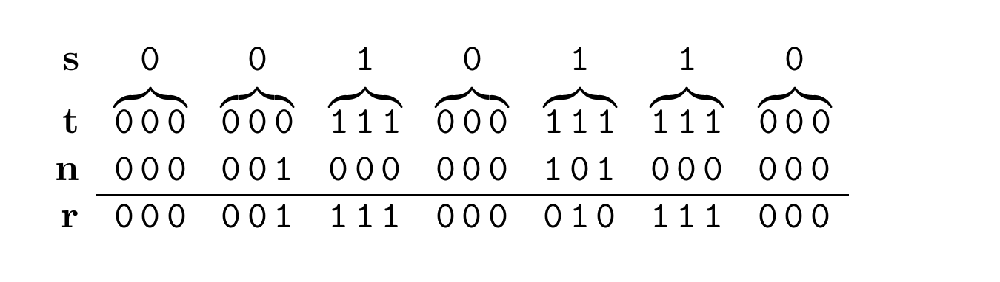

I have tried transfering the melody line
of the first four bars of “autumn leaves” to the DAW software LMMS and
surprisingly found this method effective and efficient. This task sounds
trivial but I never found doing it comfortable and achievable.
I have tried transfering the melody line
of the first four bars of “autumn leaves” to the DAW software LMMS and
surprisingly found this method effective and efficient. This task sounds
trivial but I never found doing it comfortable and achievable.recently i more and more frequently notice my attention issue. I cannot pay attention to things that require it.
An example is learning.
2026-11-14
Sometimes i do not want to wake up. Being too sober is painful.
You want to be sober enough to work, but not sober enough to self torture.
2026-11-12
It is well known what the recommendation algorithm is. Tiktok/douyin uses it to recommend the content that makes you stay longer on the app. Taobao suggests the items that you may want to buy on the front page of their apps. What we do in this project is that we implemented one of the earliest reinforcement learning model called contextual bandit for news recommendation. At the age when tiktok did not exist, the websites, such as Yahoo!, where people visit to read news invented and adopted this kind of algorithm, contextual bandit. It is unsupervised because its pipeline does not contain data labeling. The user interaction itself as well as the six features of article can support the model to improve the ability of recommendation.
The result clearly indicates that the bandit is better than the baseline – random recommendation i.e. recommending articles with random 30-seed average. But the improvement is not that high. On the other hand, the supervised recommendation is even worse than the random recommendation.
Since the training is fast, we can afford split the data set in the standard way: 70% Dev (66.2k) / 15% Val (18.0k) / 15% Test (15.8k). It is worth mentioning that in the validate stage we didn’t change the reward value but stuck to the 1-0 reward used in the original paper. There is some statistical reason why this may be necessary to be unbiased and so we decided keep it, although the recommendation was better for this specific yahoo dataset when we use reward +0.6 for a clicked recommendation, and negative reward (pubnishment) for unclick recommendation. Whether this empirical reward setup generalises to other recommendation tasks remains an open question that we plan to explore in our next steps.
2026-11-10
It is very quiet in the morning. I especially feel so after having decided not to go to class–i came to realize that attending class are not guaranteed to make me learn either what they teach or what I need to learn. More or less, one still has to go through iterations to understand.
The reason I think attending class is not the most efficient is not that I teach myself faster than the professors. But with the pace people teach things, I only partially understand and then get too tired to do the practices, which is necessary figure out what is going on. So I decided to attend classes less frequently.
After thinking through this matter, i notice that I don’t want to miss the lectures. It doesn’t bother me that much when I cannot digest everything in the class immediately. But I might fret the distributions and the pressure from an obligation to socialize.
Every professors seem to have prepared the class sufficiently, regardless what the results are. It is fortunate that they had made the slides prior to llm. Their slides all look distinct and are not AI-made slides featuring exquisite but unharmonic and unaccessible visual designs.
It is said that fear stems from loss of certainty and growth of uncertainty. I find that this describes my mindset.
Back in years ago I had decent information sources. From there I learned about the trend of housing price fall, the potentials of deep learning, and the unknown virus.
I could not, however, accordingly change my belief or expectations in response to the information. I didn’t predict quarantine can cause stress . I didn’t foresee that what would be happening next.
The common pattern of the matters mentioned is, i think, knowing is easy and passive. but to adapt in practice takes proactive efforts beyond knowing.
2026-11-02
A version of dijkstra implementation online returned in the first place in the google search result is good. But it does not returns the nodes visited along the path.
The way to use path is pretty simple: record the parents.
import heapq
import sys
def dijkstra(adj, src):
V = len(adj)
# Min-heap (priority queue) storing pairs of (distance, node)
pq = []
parent = [-1] * V
dist = [sys.maxsize] * V
path = [src]
# Distance from source to itself is 0
dist[src] = 0
heapq.heappush(pq, (0, src))
count = 0
# Process the queue until all reachable vertices are finalized
while pq:
count +=1
print(f'{count}-th iteration')
d, u = heapq.heappop(pq)
print(d,u,"is poped from the queue")
# If this distance not the latest shortest one, skip it
if d > dist[u]:
continue
print(f'd={d}, u={u}, dist[u]={dist[u]}')
# Explore all neighbors of the current vertex
for v, w in adj[u]:
# If we found a shorter path to v through u, update it
if dist[u] + w < dist[v]:
print(f"new distance {dist[u] + w} to {v} via {u} is shorter than the old distance {dist[v]}")
dist[v] = dist[u] + w
heapq.heappush(pq, (dist[v], v))
parent[v] = u
print(f"now pq={pq}")
# Return the final shortest distances from the source
return dist, parent
if __name__ == "__main__":
src= 0
# adj = [
# #[[1,2],[2,2]],
#[[2,1],[3,1],[4,0]],
#[[1,1],[3,3]],
#[[4,0]],
#[]
# ]
# adj = [
# [[1, 1]], # 0 指向 1，权重 1
# [[0, -2]] # 1 指向 0，权重 -2
#]
adj = [
[[1, 2], [2, 3]],
[[2, -2], [3, 4]],
[[3, -1], [4, 5]],
[[4, -2]],
[]
]
dist, parent = dijkstra(adj, src)
print(parent)After studying this code, i found something strange.
CLOSED array for the examined nodes.
But the Dijkstra is supposed to have such an array.This made me curious how dijkstra algorithm can be modified and extended.
2026-10-28
Today is a stressful day for me. I just finished two examinations last week, in both of which I performed badly, and I expect a bad grade. Also, there are two assignments due today. I still got a bunch of work to do, and to finish by midnight tonight.
I have to seek for ways to release stress, and maintain a balanced mindset. This is done through weightlifting, and a slow pace life.
It is ironic — hours ago, i talked about stress; but now, having not finished the actual assignment, I am still stressed. Questions for the Reinforcement learning and machine learning — I deligated to AI, and let them write the solution to a LaTeX file. I did finish some questions myself, but I happened to let it handle the rest of the questions.
I doubt if it is meaning to do the mathematical computation by hand. I am not saying the homeworks of writing down the mathematical computations are not meaningful. But I doubt if they are meaningful as a way of evaluation, as a way of certification, as a benchmark for learning.
I think my bottom line is: at lease think about it before seeing the answer given by AI.
So regarding stress releasing — the result is that delegating assignments to AI certainly have made it a stressful to submit the solution. Because they have more demanding tasks such as doing research — they might not want to care about students’ writing solutions using AI. After all, the degree I am doing is – this might be excuses – a msc in AI. Also it might actually leave time and space for me to — using the solutions and file — understand the materials effectively. Let’s see if that’s it.
I think I’m less worried about the grade and development in the two years here — I’m too concerned about it. I feel that I would expect the process of studying is a satisfaction from understanding, but I know the case is that there isn’t — I wanted to say there isn’t a chance for me. Actually, the fact that there isn’t much time for understanding — but even if I do manage the time good enough to leave myself some time for this intellectual satisfaction, I think in most systems, this kind of self-interest is not rewarded. And that’s the major disagreement between the system and the personal expectations. That is also something to be taken into consideration regarding costs or stresses.
2026-10-25
出门走路的感官……我想到小时候，小时候大概在 10 岁左右的时候，10 岁左右，然后到大概 14 岁之前的时候，我每次出门的不会特别地调动我的感官。就好像是：如果特别看着什么或者听着什么，会让这两个感官的器官受损一样，总是有这样的感觉。我不知道这是从哪里来的，可能是从小跟老人生活，然后潜移默化产生的一种感觉吧。
实际来说就是：不会用一种分辨率特别高的方式看一个东西，视觉中只有一个印象，没有很深的形象提取。
在这种情况下，更主动使用的是触觉和温度感觉。比如有气流的时候，你可以用触觉和温度感觉的方向；还有温度和人的体温的变化和人的体温的变化。还有就是自身身体的连续变化，比如心跳，比如背和肩膀的的紧张程度。这些都不包含在视觉和听觉的范围内，但仍然属于感官。
后果就是，你对大量的信息过于敏感。后来我发现，有人能接受大量的感官，但是他不会感到过载，能从中过滤出需要的信息。
2026-10-22
So in this note, I will systematically record my experience during those two months in here.
I think the most straightforward thing to notice is the climate: it is naturally very hot here.
I want to complain that the time arrangement here is quite absurd. The arrangement of the class times, andthe arrangements for the deadline of assignments — I think they are not an optimized way for students to learn here.
The class time is rather concentrated: usually two lectures, two one-hour lectures, followed by an hour of tutorial. So in total, I have to spend continuous three hours in class at least each day, and that makes it very tiresome — makes people tired. And it is even worse when there are more than one classes in a day; in that case, I have to attend three hours of class continuously in the morning, and yet another three hours of class continuously in the afternoon. It is really a draining experience, I have to say.
Also I find that the time — assignments, homework assignments are assigned — the time is rather random and unthoughtful. I think the students will have more time to digest the material through concrete examples in the exercises if the homeworks are assigned earlier. This is particularly the case for math-heavy classes such as machine learning. It is especially the case.
2026-10-22
The minimax algorithm is defined as starting from the leaves of a graph, and then evaluate the values at the leaves to update the main value.
So you choose — initially the tree only has value at the leaf nodes, and the leaf nodes… And there is no any values at the shallower nodes than the leaf nodes. So the minimax algorithm that wants to label the value at those shallower nodes… So starting from the leaf nodes, depending on the min or max, you give the value to the parent nodes of the leaf nodes.
For example, there are leaves — the leaves A and B have a parent, have a common parent A2. And then the leaf A has value 7, and the leaf B has value 9. Then their parent node — if their parent node is the max level — then their parent node A2 has the value 7 — has a value 9, which is a maximum of the value A and the value of B. So we can implement this in Python easily; you can notice the value is updated.
But for the alpha-beta pruning algorithm, the situation is a little more complicated. So alpha and beta value — as in the minimax, as in the ordinary minimax algorithm — often the beta values are updated, updated at the root, and also those ways have an influence in the shallower nodes. And the alpha/beta value here has an effect that is to do the pruning. We can notice that alpha and beta are not the values passed to the shallower nodes; only the value which is the minimax value — and that is passed to the shallower parent nodes. I think that is a key to understand and implement this alpha-beta pruning algorithm. It’s same as an ordinary minimax, except you prune — except you prune at a node according to the alpha-beta value.
def alphabeta(node, alpha=float("-inf"), beta=float("inf"),
maximizing=True, depth=0):
indent = "-" * depth
if isinstance(node, int):
print(f"{indent}访问叶节点: {node}")
return node
if maximizing:
value = float("-inf")
for child in node:
value = max(
value,
alphabeta(child, alpha, beta, False, depth + 1)
)
alpha = max(alpha, value)
print(f"{indent} alpha={alpha}, beta={beta}")
if alpha >= beta:
print(f"{indent}MAX 剪枝: alpha={alpha}, beta={beta}")
break
if depth == 0:
print(f"Root: {indent} alpha={alpha}, beta={beta}")
return value
else:
value = float("inf")
for child in node:
if alpha >= beta:
print(f"{indent}MIN 剪枝: alpha={alpha}, beta={beta}")
break
value = min(
value,
alphabeta(child, alpha, beta, True, depth + 1)
)
beta = min(beta, value)
print(f"{indent} alpha={alpha}, beta={beta}")
return value
tree = [
[[7, 9], [10, 11]],
[[12, 13], [14, 15]],
]
print("最终值:", alphabeta(tree))Another complication of the alpha-beta algorithm, in contrast to the ordinary minimax, is that the alpha-beta value has to be passed down and passed up. So what is passed down is the alpha-beta value, and what is passed up is the child value — the minimax value. So the shallower nodes update the alpha-beta value using the child value — using the minimax value obtained from the child value — either the maximum or the minimum — the minimum of each of the child values, depending on whether it’s max or min level.
So the mistake I made was that… that I thought — I thought when the alpha-beta values are passed down, the parent values are already updated using the child value, which is — and this is incorrect, because before it is passing down the parent value, the alpha-beta value, it hasn’t known — hadn’t known yet the child value. So the parent alpha-beta are still not updated — still not updated at that time.
So in the second… the parent value is basically the — all the — it is possible that the leaf value — it’s usually the case that the first leaf value is already — when it is already — is already — uh, when its value already satisfies a pruning condition, it doesn’t prune — it doesn’t get pruned right away, it doesn’t get pruned right away, because it does not really satisfy the alpha-beta condition. It’s, uh, this is not a very logical way of saying it. What I mean is: if its value is passed back to the parent node, and then if its value is passed back to the parent node, then passed it down to itself, it would have satisfied the pruning condition of alpha greater than or equal to beta. But it is not how the algorithm works — it is not how the algorithm works. The algorithm does not — uh, does not pass back before the old parent values have already passed down.
So this is the situations where — uh, some values can actually be pruned earlier — I mean, seem to be able to be pruned earlier, because the parent nodes has already — if the parent nodes has already known the chosen value from the child values. But that’s not possible; that’s anachronistic in time, because synchronous is not possible in time, because the parent value did not yet know the child nodes. So it will be given…
And the second question is: since it’s obviously not reasonable to, uh, cut from the shallower nodes — it’s not reasonable to prune everything once it is — once it is — once the uh, pruning condition is satisfied — it’s not reasonable for the rest of a node to be visited, because you may actually miss the correct, correct value for the root after — in the future, the more nodes to be visited. But what is the reason why — what structure of the algorithm prevents you from moving from the pruning operation, from going higher?
It is because — it’s because the values passed up — the alpha and beta values — and therefore pruning conditions are not — upper nodes doesn’t know the pruning condition having happened in the deeper nodes — the deeper nodes. It only keeps using its original alpha and beta values at its recursive depth. If you look at — look into the implementation, is something to happen would be there for you to see that it is something that necessarily happens. These are the only minimax algorithm and the minimax algorithm with — with alpha-beta pruning.
2026-10-22
AI 擅长解释，但是很多时候不需要解释，需要的是 分析。分析和解释是不一样的，比如对吃什么的 决策，如果扯到吃饭和人的存在意义的联系 没有任何帮助
The population in machine learning has grown because of something boring – people with a math or physics background want to do something profitable and impactful. I find that machine learning algorithms crystally clear – they are algorithm, and even more concretely, their results are numbers. On the other hand, it is only about the procedure. The reason why something works is not explained – perhap this is a mere problem with the curriculum.
2026-10-02
很容易有一种很困但是睡不着的体验。室友在打呼噜，我还没有睡着。更绝望的是，明天要上一早上课。
高中也甚至比这更糟糕，因为当时全宿舍人都在联机打游戏，只有我不参与。但是他们的声音很大。我不在乎，习惯后甚至能够轻松入睡，尽管如此，有时也会被恶作剧地弄醒。但是我不在乎。我觉得我有一种超脱的态度，不需要在意这种事。
我现在不是这样。这些年积累下来的怨气，让我心眼很小。我不愿意再忍耐任何东西了。想到一年中经常会不能睡觉，心中只有一种要杀人的想法。
但这只是一种情绪，不是真的会这么做。
2026-09-24 # 研究生
发现大多数课程都跟不上，最难受的是这个人工智能。讲课总是觉得节奏很慢，困难的地方又一带而过。前一天没睡够时一定会困得不行。有些人上课直接让ai解释ppt，可能自己也应该这样。
宿舍不是足够安静的地方，我只能找其他地方学习，特别是对需要理解的统计和算法。
上课的内容实在太多，怎么也赶不上进度。
12号才交100元电费现在又要交。一个月至少要300元电费。
无法和人交流 尽管想要这样做 我总是想要和人进行交流，但是发现非常困难。对方可能不愿意，还有害怕交流缺乏意义。可能交流不一定一开始就是有意义的，但事后能产生价值。
昨天喝了咖啡反应很大。以后都不想喝咖啡了。也不喝含糖饮料。只剩下茶了。
2026-09-24
第k + 1 阶段的控制取决于第 k 阶段做什么。 如果 k 阶段的动作有几个选项 可以让 最小，那么如果选择其中的那个 j 使得 第 k 阶段立即的一步 最小，这样的选择就是让整体成本最小的一个选择。
2026-09-12
加拿大两哥特的视频关于自发性荨麻疹的视频很有意思，各个方面都是。首先原来有家庭医生看病也这么难，其次AI chatbot怎么用，怎么用长期一个上下文配合自身记录关键信息来迭代。
对于两方面，应该很多人都有感触。但还是更想说说第二点。
不断补充信息可以逼近问题。对于局部信息作出判断，然后对判断验证反馈，相当于得到更新信息，用更新的信息继续更新判断。
24年之前，对llm的使用比较懵懂。只是靠直觉行为，还抱着一种怀疑的态度，和习惯性反对的情绪。
真正产生改观是因为自身原因和学弟接触。虽然年龄差距一两岁，但是他们对ai开放接受的态度让我受到影响。同时，我开始写东西，这让我感到语言对人的思维是很重要的东西。但是，这个感受很难说清楚，大概是在2024年夏天的一个晚上，我突然对语言本身有一种新的判断。之前语言对我更多是诗的语言，但那时我隐约感到语言不只“固化”思维，或许还在承载思维和推动思维。
开学后一个早上，发生了一件意想不到的事情，一件我当时高兴，但事后恐惧，迷惑，甚至盲目，不安的事情。这天的经历异常平凡，但让我如同新生，如同初恋，赋予了一段起死回生般的突然脉冲。简单地说，课后提问时，我通过不段细化问题的问法，得到了一个自己没想到能弄明白的问题的解答。我还记得那个问题是什么，对很多人可能非常简单，但让我几周都大脑晕眩的问题：对一个具体的拓扑空间，怎么它的一个商空间的基。
这属于我一直不解否定的prompt engineering吗？我很恐慌。更重要的是，这样是否会让教授感到不尊重？也许直觉是对的。尽管他帮我写过一次推荐信，但回信时立刻表达对我明显用AI措辞的不满。也许当时并没有那么不满，但我感到沉重不堪对愧疚，以至于之后多次遇到，四目对视，我也不好意思打招呼。之后，在第二次找他写信时，我也没有收到回复。
2026-09-11 # questions with the future of GUI
2026-08-21
2026-08-21
我总是想证明自己的情绪是正常的，同时又觉得行动上忍受是应该的。 前者不会受到除自己以外人的认可。后者是我在社会上无法独立赚钱的结果 我总是想获得人的认可。现在仍然是这样。
开学前，我的心情充满了烦躁。我感觉很焦虑。身体的问题无法解决，生活上 也看不到任何适应的希望。 我本来自己调节一下就解决了，比如像以后会解决的，改变看法；一不小心暴露出来又是一 场大冲突。 感觉很多问题都需要长期的努力斗争。
现在有很强的表达欲，想要利用这个机会。
奇怪的行为
仔细想想自己确实有很多奇怪的行为。比如总是在他人对自己暴露的情绪不满和攻击时 进行争辩，这本来是毫无意义的，因为双方都是非理性的原因做出行动的。我也时常会因为他人的行为感到唐突的屈辱，例如图书管理员的微表情和声音，或者是特定的说话方式。我不记得图书馆管理员做了什么让我这样感觉，可能是一种“管理人员”而非服务人员的气质。
家里人时常对我表达的观点，如果我对家里人不满，就应该立刻独立不交钱上学。这好像是很合理的。反过来就是，既然我在用他们的钱，就应该包容，不表现出 过多的情绪。这种看法近似于一种契约，其实非常理性，同时我却在心里隐隐地期望他们能接受自己的困难，甚至理解。这种期望是 情绪化的，也是不会得到满足的。可能我有一种疾病，让我变得非常情绪化。
很多时候我对直觉的依赖到了愚蠢的程度，比如衣服要穿上去来判断是否适合冬天穿，对涉及数量的东西缺乏考虑。本能地恐惧陌生的东西，希望有一个框架一开始就正确。 昨天看视频发现这就是中医的思维。现在我虽然不认同大部分中医的质量，但是可能以前受到了它的影响。
此外，我发现内心对这个专业毫无兴趣，这是否只是因为意识形态的影响？
2026-08-19
奥德赛本来就是一个很无聊的故事。
奥德修斯被叙述的方式不是作为一个普通人，而是一个绝对“超凡”的“英雄”，聪明到战争结束后战友都死了，只有自己幸存。普通人放在那个故事中更有可能死掉，而不是像奥德修斯一样折腾、战斗、被记忆。
希腊/罗马的思维和现在差距太大。我看卡图卢斯时很困惑，这些对淫乱故事津津乐道的诗到底有什么价值？
同样让人困惑的，还有奥德赛的主旨。当我们想从奥德赛故事中总结出来什么，总是无法做到。
为什么奥德修斯要抓住放牧海豹的老人？为什么这个神会千变万化，要强行抓住不放？什么意思？更重要的是，这和我们有什么关系？
2026-08-19
Intuition is important, and we need to start by having a criteria of what is good.
The criteria can change along the way.
This isn’t so simple. Interaction and transfering of information is still needed and it requires something else; the speed of mind still varies from one to the other.
I remember a classmate corrected the blackboard writing of one of the professor – he calculates in real time, not losing attention. I tend to believe this ability of calculation is a physical talent that people are born with. Someone just thinks faster.
Intuition comes from practices.
People are unnecessarily slow to response because of the lack of intuition-correction based flow.
Practice is ‘bad’ in that it requires attention and it reshapes people.
Another thing is ‘experience’ which is a more complex version of practice – not just repetition of small atomic movements but also chained multiple tasked which are harder to benchmark.
I thin experience is less boring but practice may be valuable as well because it makes people capable of doing things from scratch. Additionally, seemingly repetitive tasks may give birth to something new.
control the risk assess the result revise the plan
I think I rely on context too much which is not good.
2026-08-16
2026-08-12 # 三次方程的根公式
2026-08-12 # 自主简单的翻墙方案: sing-box 和 Clash Verge
I am trying to devise a method to cross the great fire wall that does not depend on the third party service, while being as simple and easy as possible.
Sing-box is known for its verstality and compatibility to variety of proxy protocols. at the cost that its configuration file is rather complicated. The complication though mainly happens in the client side – it allows for a powerful control of routes, DNS and inbounds/outbouds using a convoluted json syntax So, we choose sing-box only on the server-side, where the configuration is actually quite stream-lined. On the client side, we use Clash Verge and clash meta, because of its graphical interface.
{
"log": {
"level": "info"
},
"inbounds": [
{
"type": "vless",
"listen": "::",
"listen_port": 443,
"tls": {
"enabled": true,
"server_name": "距离服务器较近的支持tls v3的网站域名",
"reality": {
"enabled": true,
"handshake": {
"server": "<同server_name>" ,
"server_port": 443
},
"private_key": "<生成的密钥>",
"short_id": ["<生成的短id>"]
}
},
"users": [
{
"uuid": "<生成的uuid>",
"flow": "xtls-rprx-vision"
}
]
}
],
"outbounds": [
{
"type": "direct"
},
]
}2026-08-07
用gemini 生成了5版，都失败。每次都是在endpoint这里出问题。
我意识到，配置tailscale
需要某个endpoint，但是outbound.endpoint不是写这个东西的地方。
所以我不用gemini，改成让opencode 来写。(
其实应该用sing-box check -c
的。不过最后生成出来的配置两个都测试通过了。)
Please write an example sing-box tailscale configuration that route directly to tailscale network internal services (e.g. services in a remote lab). Do test the config file using sing-box run -c <file> until it shows no fatal errors. The document is at https://sing-box.sagernet.org/configuration/ opencode看了之前失败的配置，也认为需要看看tailscale的endpoint的配置是什么东西。
...
Let me check the official documentation for the tailscale endpoint and routing schema in sing-box 1.13.
%WebFetch https://sing-box.sagernet.org/configuration/endpoint/tailscale/
%WebFetch https://sing-box.sagernet.org/configuration/route/rule/
+ Thought: 2.1s
Let me check the Rule Action docs to confirm how to route to an endpoint.
%WebFetch https://sing-box.sagernet.org/configuration/route/rule_action/
%WebFetch https://sing-box.sagernet.org/configuration/dns/server/tailscale/不过看了一通文档以后，deepseek 认为还是直接看源码比较好 :(
+ Thought: 9.9s
Let me examine the sing-box v1.13.15 source to understand how tailscale endpoints are wired into routing.测试运行用 singbox check -c.
这样做的好处是，如果你不想让AI知道密钥，可以先生成一个语法正确的，之后再填入正确的认证信息。
2026-08-04
2026-08-04
I am afraid of achievement because after achieving everything is
void.
This fear is because, achievement is set as the goal.
Instead of the seeking.
2026-07-31
p(x) is abused to mean both the random thing x, and the distribution of x.
Given all the data x, for which parameter , the datapoint x is the most likely？
p is the probability that a datapoint x happens （how likely it is).
We encode the data X as Z. Then we somehow decode Z, expecting to reconstruct X.
When encoding, we have some parameter in used. When we decode, we used a certain parameter .
2026-07-30
singbox 的文档看起来非常复杂。先从网络上获取一个写好的配置， 或者让AI写一个——这个配置大概率无法工作，因为singbox总是变更配置，有些不愿搜索的AI（gemini 免费版）写配置可能不符合你的singbox版本的语法。 通过命令行运行
sing-box check -c 文件位置
sing-box run -c 文件位置这时候再去看官方文档的每个字段，结合错误信息，看看问题出在哪里。
一个是‘入站’，一个是‘出站’——这不是解释只是中文翻译，如果看到中文讨论或者教程可以对应一下。
如果配置文件，这两个field不太可能会错。推荐outbound 选择“vless”加上reality。写法的一个例子见下面的配置。inbound 就是本地网络配置的方式， 比如只是一个端口代理，或者tun 会创建一个虚拟网卡来接管全部的流量。如果用一个端口代理，可以在应用中单独设置：firefox 中用ZeroOmega比较好，telegram 等应用 中也有设置的选项，手机上可以在wifi里设置。
我一开始不知道这两个是干什么的。
可以把routes 对应到系统中的路由表，而dns 对应到系统中的 hostname 文件。 这两个东西在系统中是分开的，iptables 不管 dns解析， hostname 文件 也不管路由表。所以，在sing-box中两个分开也很正正常——如果不写就会默认。
{
"log": {
"level": "debug"
},
"dns": {
"servers": [
{
"type": "udp",
"tag": "dns-cn",
"server": "223.5.5.5"
},
{
"type": "https",
"tag": "dns-remote",
"detour": "proxy",
"server": "1.1.1.1/dns-query"
}
],
"rules": [
{
"rule_set": "geosite-cn",
"server": "dns-cn"
}
],
"final": "dns-remote",
"strategy": "ipv4_only"
},
"inbounds": [
{
"type": "socks",
"listen": "0.0.0.0",
"listen_port": 10808
},
{
"type": "http",
"listen": "0.0.0.0",
"listen_port": 10809
}
],
"outbounds": [
{
"type": "vless",
"tag": "proxy",
"server": 已删去,
"server_port": 443,
"uuid": 已删去,
"flow": "xtls-rprx-vision",
"tls": {
"enabled": true,
"server_name": 和服务器位置比较近的支持tls3的网站域名,
"utls": {
"enabled": true,
"fingerprint": "chrome"
},
"reality": {
"enabled": true,
"public_key": 已删去,
"short_id": 已删去
}
}
},
{
"type": "direct",
"tag": "direct"
}
],
"route": {
"rules": [
{
"protocol": "dns",
"action": "hijack-dns"
},
{
"rule_set": "geosite-cn",
"outbound": "direct"
},
{
"protocol": "dns",
"outbound": "dns-out"
},
{
"clash_mode": "Direct",
"outbound": "direct"
}
],
"rule_set": [
{
"type": "remote",
"tag": "geosite-cn",
"url": "https://raw.githubusercontent.com/lyc8503/sing-box-rules/rule-set-geosite/geosite-cn.srs"
}
],
"default_domain_resolver": "dns-cn"
}
}2026-08-04
过去的一月里,我把很多精力都花在维修电脑上了.
首先,我试图修大概是2015年生产的三星的轻薄本。 因为 显卡驱动的问题,图像显示在各种系统上都有不同程度的问题. 初次以外, 笔记本 风扇声音也很大. 显卡的问题比我想得复杂. linux 怎么也找不到合适的驱动； windows 上它的显卡驱动已经不再更新, windows 自动更新和 AMD 官方程序都 不能自动找到正确的驱动.
可能是摔到地上过的缘故, 笔记本网络也无法连接。不过重新插拔天线排线后无线网竟然好了. 有两个插口一个拔下来实在插不上,不过看起来这不影响wifi的使用. 1
因为,感到绝望,所以我安装回windows8.1. 这时,缺少显卡驱动的问题仍然存在.
在旷日持久的和豆包的对话后,它给出了难以相信的建议:去韩国的一个三星网站上下载驱动(其他地区官方网站都不再保留驱动升级程序), 以及在AMD网站上下载非常老的一个驱动.
难以相信的是, 这确实有效. 在重启之后, 显卡驱动确实正常了.
但是win8.1 是没有 网卡驱动的(尽管因为插拔天线排线网卡正常了), 这导致需要联网的三星更新程序无法运行.
我很长时间里怀疑只是三星已经放弃这个程序, 导致它无法启动了. 但是在连上一个 无线网卡以后,三星更新程序开始寻找驱动,然后安装了包含网卡驱动以内的很多驱动.
不过, 风扇的声音依然很大. 我掀开后盖发现风扇里几乎没有多少灰尘,也无法找到CPU 在哪. 主板后面的螺丝太复杂好几个拧不下来,所以先放弃了.
这个过程中, 我发现LLM辅助维修及其很方便. 还发现了一个专门做这种内容(北京 被辞职后和豆包一起维修电子设备和电器).我感到很能共情,因为我也没有工作.
用了赫兹Titan Pocket手机大概二年以后，它的后盖脱掉了。然后又过了一年，它也因为开关键而出现反复开关机的情况。我一开始觉得这个手机还是很坑的，首先它的无论是摄像头还是性能都非常一般。其次就是考虑到它的价格，不算很贵，但也并没有特别便宜。不过在了解到官方对于维修的支持，例如官方出拆解视频以及卖这些配件，这些事情，并且考虑到这手机是在三年以后才出现机器自己导致的问题，我觉得这是可以接受的一个情况。
话又说回来，我是怎么发现这个机器是因为开关的连接出现问题，才导致它反复开关键的? 我当时问了一下豆包这个我的手机的情况，然后在他给出的回答下面附了一个抖音的视频， 让我知道了开关问题可能会导致反复开关机。
哪怕我不去碰它，手机也会反复收到开关被按下的信号，进而不断重启。
后来我把已经脱落的后盖拿开，将电池下方疑似电源键的排线拔掉。 随着手机开关不能使用，反复自动开关机的情况也随之消失了。由此我基本确定，之前无法正常开机和不断重启的问题，确实就是电源开关故障导致的。
起初，我完全不知道该怎么把这个开关卸下来，也不清楚去哪里能买到配套的替换件。 不过后来我了解到，Unihertz 官方其实会售卖这类配件，只是价格并不便宜，再加上跨国运费就更不划算了。 而且奇妙的是，这些配件本身其实就存放在中国国内，但受限于公司的供应链流程，它们可能得先发往海外，再重新入境中国，从而额外产生一笔过境费和高昂的运费。
至于不知道如何拆装排线的问题，我在官方 YouTube 频道上找到了一段完整的手机拆解视频。 从视频里看，这款手机其实算比较好拆的，没有太多需要硬撬或大量用胶粘合的地方，基本上只要不断拧螺丝就能把大部分零件拆下来——当然， 这也意味着重新装回去可能会有些繁琐。官方在视频里完整展示了整个拆解过程，意图很明显，就是要让你自己维修，这种理念还挺有意思的。
不过，哪怕看了视频, 甚至恰恰是因为看完视频后，发现过程过于详细且显得有些繁琐– 我反而对亲自维修这件事丧失了一些热情。 此外我意识到，自己短时间内心理上还没准备好去尝试焊锡，对自己的动手能力也没有足够的把握。看来在自己修手机这件事上，进度大概要暂时停滞不前了。
买到时手机的状况很糟糕:充不进去电. 附带了一个越南生产的充电线,插不进手机. 自己的充电线虽然能插进去,但依然充不进电.
type-c端口充不进电, 所以一直用一个10W输出的无线充电器给它充电.
这个手机的音质和照相都不错. 低音能听到. 拍照的颜色很好看.
后来,了解到充不进电和尾插有关系. 但是仍然我保持着这部手机太老,配件买不到的认知.
直到几天前发现淘宝上有卖. 买了以后让维修师傅40元修好了尾插和装上新的后盖. 不过装上后指纹不能用. 用之前的后盖时, 也没试过指纹功能。所以我无法知道, 是否把指纹模块粘贴到新的后盖的过程损伤了手机.
最近看了一个书是<我们活着的意义>. 书里区分了“意义驱动”和“为了稳态而做”。 2 我感到我会用一些事情来折磨自己，而不考虑这件事情本身的意义。
“意义”是一个很复杂的概念。我觉得我能部分理解作者在说什么：
追求意义和驱散无聊不一样。
但是也怀疑区分在作者讨论的心理实践中是否可行。
作者把日常的心理和哲学问题纠缠在一起，让我感到厌倦。
但另一方面，作者的“意义”观并不复杂，就是意义需要寻找这种典型的存在主义思维。修手机从一开的兴致勃勃到最后兴趣索然，怀疑“这一切的意义是什么”，以及在AI 能够 写作，写代码，研究数学后怀疑”继续学习这些的意义是什么“。
我想给意义一个操作性的定义，那就是一种可以让人忍受短期不快也愿意继续进行一个活动的信念。
比起作者所比较的，“纯粹为了精神稳态的自我小岛”类活动，和“意义驱动“的活动， 也许我们更应该分清的是”意义“和”稀缺性“的区别。当越来越稳定批量产出的机器消除了一种技能的稀缺性，人类的“追求”和“活动”还有什么意义？ 我们只是内化了市场价值和意义的等同，还是充分考虑过‘意义’是什么？
然而，这样做是可以理解的。因为对商业价值的迎合，意味着“独立自主地生存”，这本身而言就是一种可能的意义。
外在的价值和个人的意义如何重叠，让人感到工作就像自我享受。当我做收银员时，一个老店员让我多整理货架，让我感到很惊异，因为这是我不讨厌甚至喜欢做的事情， 我觉得喜欢做的事情被要求做有种隐秘的罪恶感。意义在于，我可以有收入，和这蕴含的各种结果，这已经是一份意义了。如果一件事情是 你喜欢做的事，同时你也能够有收入，那意义就已经存在了。
当我看到人谈论‘意义’时，总会感到失望。人首先要满足‘必要’，其次才是‘意义’或者其他高级的情感需求。这应该是两种不同的层级。
2026-07-10 # architectures
2026-07-10 # what is the value to which you can stick?
I do not know.
It is true that the feedback of engineering is a fine loop. But it is something external.
Internally, flesh is fragile.
In terms of relationship, one thing can be certain, which is people have no guarantee whatsoever to each other by default.
This implies that one can do anything to thee other, and so does the other. This is a bad idea because it does not consider the trust. It goes to an extreme.
This raises the question: what is trust?
It might be true that following the ‘nature’ or ‘intuition’ can be a good general advice. Of course, they require further clarifications. So, in conclusion, ‘coldness’ and intuition (sounds very wrong).
2026-07-08
It is less talked about broken softwares than those that suceeded. Sucess is valuable but failure is more common and “realistic”. Despite being useful as a material of why the ‘right design’ is right, the failure cases tend to be hidden or forgetten, and only sucessful ones are recorded and well-known. It should be of interest to analyze which algorithms, say, language models, failed, and how they differ from the current ones in use.
The problem of grand engineering is that it can be seen as not understandable or testable for people not trained in engineering, chaotically viewing the whole design as whole and not as a combination of small components and abstraction of multiple layers, which are imperitive for the managibility of the software.
The easiest way to get feedback is to write unit test. but what to test is a tough one for someone not used to write tests.. they have no idea what the data they handle is
I do not think this is true. even when i see the failure, i am not happy about them. when in a new area, one also needs to begin to identify the ways to trigger the failure, which itself takes time 2026-07-08
When it comes to the interaction between language learning and technology, there are too many to talk about. I is just noticed by me that most video websites come with playback speed adjustment function, which can be useful for language learning.
2026-07-07
I indeed live in a life of fear. The thunderstrike just caused the black out. Being frightened, I feel that I have been frightened being at home all along.
Sometimes I like darkness. It makes me even calmer and safer to be in darkness.
One should be the source of safety for one’s own.
2026-07-07
It is necessary concentrate to get calm and work on what you do.
You feel agigated by something unknown all the time. The reason is that, being not good at focusing, you lay even more burdens on yourself.
I take write as an example. When you can have one/two sentences which are short and to the point per paragraph to make it easy for your focus, why write longer to make the organizing and revisiting difficult?
Consider adopt simplification of similar manner in other tasks as well. Make it simple and stupid.
you have something to do to improve your attention span, including reading and writing. Take 30 minutes a day to understand a few paragraphs of a book, or express your thoughts in writing as precise as possible.
With concentration, you are less likely to be overwhelmed and can handle tons of information. So you become less stressed.
2026-07-02
In this age, we should all do something unique to our human, I claim.
The feeling is unique in everyone. You should write it down. Perhaps.
2026-07-02
Before we are born, the language has been form by the family.
Child cannot know their needs without language.
Parents impose the meaning of needs using languages – coldness, hunger, discomfort.
2026-07-01
写程序很痛苦，因为一直在执行模糊的语言描述，还要担心所写的和描述的不一致。 但另一方面，因为是实际的机械计算结果，所以比抽象数学的论证更加踏实。
无法判断：我是否没有阅读而理解的能力。只能通过动手的挣扎让自己理解 一个事物。
当我动手做，发现无法决策应该做什么而感到纠结，为担心和要求不一致而感到恐惧。 当我阅读，我无法理解大部分人类所写技术类文字在说些什么。
英语母语者的文字, 和意大利人写的英语，都理解起来很费力。
2026-07-01
Value is not defined by whether other existence can do the same thing, but by the what the outcome means to you.
I think learning/practicing for understanding is still valuable, because the need to understand remains. On the other hand, the value of quick execution by human that has been reduced by AI, because the execution part is increasingly possible to be delegated to AI.
It is good, as long as it is done well.
2026-06-30
It is clear how a poor family can have more conflicts and demands to each other, compared to those that are not.
Poor people have a strong feeling of lackness. So they want something from others constantly, without thinking it is possible to provide.
The anxiety to get causes the conflict between people.
2026-06-28
2026-06-27
Europe is trying to stop children from having access to social media. It seems that the louder voice is opposed to this policy, from the ground of privicy. Perhaps these adults are raised too well or are too lucky to understand how social media can negatively influence a child.
Social media make child have access to porns and fetish contents in the age they form their reward system and have the greatest energy and free time. It is better to let children play computer games, which is a eco-friendly way to experience, play and learn.
China has the opposite policy: children cannot play games too long, but they are not restricted on social media using. 2026-06-27
Context gives you a metric of the value of things. In school environment, the context of learning is the examination or the paper. In industry, the context of learning is gaining the skill needed for the job.
There is no absolutely uniquely correct value framework. You just need to choose one that suits you.
Absence of context and not being able to choose a context are both bad.
Value/ Motivation/ Drive
They can coexist. You should not expect to meet the requirement of two distinct contexts at the same time. You attentio is limited, and either of them require a full attention at a time. So the priority is not an option. It is a demand. Being able to decide is exactly the bigger mistake.
2026-06-25
I have no reason to write for other people.
I do have reason to write for myself; it is enough evident that writing helps myself to think more clearly, and prepare for furthering an idea.
But it is doubtful whether these words are meaningful to other people. I hate reading overly private writings and so do not like making people to read this kind of things from myself.
2026-06-25
网络上看到大量信息会感到焦虑。对于AI这种东西，如何学习才是学习是一个问题。
一些即时性的资源，即claude code博客，最新的代理/coding工具，最新的概念，播客。 还有原理性的书籍，例如关于深度学习的书籍，关于语言模型的课程。 学习中的人，总是有一种FOMO的感觉——需要不管跟上时代的脚步，感到非常疲劳，信息过载。
一个途径是拆解现有关键项目，然后重新实现。
听到00后AI创业者播客，对其‘AI让人获得自由’的论点感到困惑。降低社会必要劳动时间， 是否能给所有人带来充裕时间，以及这是否是最主要的途径。
网络上看到各种成功的人，怀疑自己每天在做什么。
重要的是，睡前两个小时不要看电子设备。
2026-06-18
2026-05-15
2026-04-10
卡图卢斯说人的增长时用到 creuerunt 这个词。翻译是“长大”。人数不用增长，而是有机的长大。
卡图卢斯说的通奸像种子一样生长，不符合现在习惯的说法。现代的反社会性交是隐秘的，因为没有经济作用，所以缺乏关心的价值。另一方面， 一切联网后，酒店订房记录也可以查询，一切都以几比特的分量集体地暴露着。
这么多人，都不约而同地和一个人交合，看起来实在缺少创意
Does success and beauty entail satisfaction? Does glamour entail the satisfaction?
The seek of unique fails in face of the desire of attractive female body.
You desire the rare thing, ending up without the most basic but good enough.
When desiring something you do not own, you will be punished. So do you lose unnecessarily when you give up desiring something belong to you.
2026-04-10
有人说，礼貌就是只指出对方在5秒中能做出改变的建议。比如裤链开了5秒能提上去，而体型就不可能在5秒钟内改变。 在别人没有询问你意见的时候，就提出改变的建议，甚至是改变的要求，自己说话轻松，对方却要承担做出改变的时间和精力成本，还要“感谢”你提出的建议， 不管这些付出是否能有回报，可以说是凭空给人生上了杠杆，加了负担。而贸然提需要未知的时间才能改变的建议的人，却不用承担任何成本和风险。
这种建议是否必要，或者是否有帮助，是值得怀疑的。
假如一个难以立刻改变的改变建议确实虽然不在人的生存和生活上绝对必须，但仍有价值，那么它也只能停留在建议，而不能是要求。 例如一个成年人抽烟，只能言语上心理上尽量劝阻，却不能以物理方式控制其行为。这源于对人权的尊重。 一个要求，除了要求本身合理与否的属性以外，要求的方式体现了要求者自认为所拥有对被要求者权力的大小, 这个大小，反比与对于对方人权的承认程度。这个权力只能是打引号的权力，因为 所有成年人拥有平等的人权，而不拥有控制彼此的权力。平等尊重另一个人的人，必然用平等的方式提出要求，或者一般地，任何情况下采用平等的方式对待对方。 相反，如果一个人自己深信不疑认有控制对方的大权，那么行为上表现出来的，就是颐指气使，不容商议，对方若非百依百顺，此人立即暴跳如雷，令人畏惧。
这种过线的要求和贬低行为，经常披上善意的外衣。认为你的意图，比对方的需求更加正确；你的观点，比对方的感受更加优越；你的认知，比对方的角度更更加本质。 当一个意图，变成了表现为压倒性的思想，态度，行为，被称为好意善意的意图的，只不过是由居高临下的蔑视，习以为常的轻视，蛮不讲理的忽视伪装而成的东西。 2026-04-02
Without experience, I could not have known the mistakes that I could and haven made, that I now consider stupid, in the job hunting of previous year.
There are things that I vaguely know are wrong but still resort to as the first instict once starting my action.
I think experience does have the effect of proving certain ways of doing, or believing, are wrong. Its help in this respect can be necessary because we may not realize the underlying incorectness until encountering the failure.
2026-03-30
2026-03-30
foomatic db 数据库需要安装，否则可能驱动缺失。
自带程序自动检测驱动可能错误。需要提前知道对应的驱动。比如联想打印机是brother2040驱动。
点击勾选：network printing。允许内网设备打印。
此外要装avahi, 使得其他设备能识别出来
add 是新加上的， 网络好像必须add 才能共享。find 是已经存在的，
选择shared 才能局域网中探索到。网页端出现不能设置为shared 的情况：
解决是修改/etc/cups/printers.conf 中Shared 选项
如果网页上选择modify, 配置文本会被重写。
强行允许网页和远程访问：
sudo cupsctl --remote-admin --remote-any --share-printers这很有用。因为如果你在管理网页上误点了change settings，会按照网页上的设置， 重写配置文件。如果网页上的设置恰好没有允许局域网其他设备访问，其他设备就不再能访问。上面的命令能做到允许访问。
2026-03-30
规律，节奏，节律, 就是个体的秩序。 生命本质上是一个通过摄取能量来维持“负熵”的过程。
没有锻炼，早睡的原因是，把“最紧迫的”当成最重要的了。
工作是必须要做的，做了有现金回报的。兴趣是不想做可以不做，可以只做想做的部分方面的, 不追求自身满足之外的回报的。
没有工作保障的时候，学生的状态下，多少投入都感觉不够。区分工作和兴趣反而不容易在兴趣中因为追求回报而倦怠。
人在精力好的时候可以做任何事情。而人在疲劳的时候只能做想做的事情, 或者说，人在疲劳时也愿意做一做的事情， 才是喜欢做的事情。
2026-03-25
My current major latest attitude toward life is that practice is an efficient and effective way to improve on anything for anyone. The practice needs to be free from the perfectism, and the attachment to personal judgement. Being not good does not mean the deficient value of oneself; instead it is more meaningful to be linked to a demand of more experiences and the intakes.
2026-03-15
Now I just found that there is no such a thing callled ‘math’ with a consistent purpose.
persistence is good for doing theory, but not all else which are also called math
2026-03-02
逻辑 = 拆解 (不是’正确’)
慢思考转换称直觉的快思考
2026-02-24 # 阅读,做事和完美
最近, 我迷上在电子表格里跟踪阅读进度. 我发现阅读不需要完全理解, 只用 往下看然后大概理解, 也能多少增加理解. 也因此, 我能够更有希望在进度表上最终 把进度的进度填满, 获得”成就”. 可是, 这也让我感到一点不快和空虚.
填满进度表的压力让我感到焦虑, 因为我想要进度变成”完成”, 但是对 为了完成而完成并没有兴趣. 强迫自己高强度阅读自己只是为了增加完成页数比率, 而并非对内容特别想读的做法, 让我感到疲惫.
最近意识到做什么事情都会有完美主义的心态. 例如看书时喜欢追求完全的理解, 很难流畅地看下去. 做练习或者其他事情时也会追求没有不完美的地方.
发现自己做的有缺陷, 心情会很压抑.
放下对理解的完美追求后, 进度表似乎又成了追求完美的锚点.
it is silly to think one has known everything one needs to know. Recently I have been feeling that “I have learned all my lessons”. But the uncertainty and challenges still freaks me out. Yet being afraid, I do not want to admit ‘I don’t know’.
I feel the need to do what one needs in spite being in an unpolished and uncertain way. A intellectual negation of a possible mistake does not suffice the end of improvements.
Completing a book is an acomplishment. But is such thing what one wants? It is perhaps the knowing (as opposed to finishing) that interests.
2026-02-20
2026-02-15
I think one needs to both learning and think. And learning is by and large consisted of reading. I have done some reading during which I didn’t understand everything.
Practically, one needs to find what the author is trying to show or explain. Also, the examples that guide the actions in a more tangent fashion.
Also, reading can serve as a recreation, relaxation and exercise.
The reading of books like poetries cannot be replaced by summaries. Other books are not necessarily read by oneself, and reading them may only are for those who prefer decoding by themselves and value the potential health benefits of reading. Nonetheless, the ‘ordering’ of arrangement in a book is still indespensable in some cases.
2026-02-12
I pursue philosophy and psychology because I want to tell the story. That is, to be the narrator.
I started with aristotle because its reputation in middle ages means the power to me. I want the power of that level. As a result, I learned about the ideas of aristotle. I am kind of bored by aristotle, while feeling it to be very significant, with the style of theoritization that tries to contain ‘everything’, and the realist stance when thinking of the world. It is boring to me because its theory in practices is nothing new to me, and i do not care about its metaphysical foundations.
in regards to other thing ive been reading: rhetorics, I also find it disappointing. While it is the art of saying things right, it also falls as a collection of argument skills, or ways to decorate superficial writings with flowerish words. The modern ideas of rhetorics even degenerates to impractical nonsense, talking about culture and symbols thus becoming a social science.
Psychoanalysis is slightly more interesting, offering something new, but is often too abstract and vague.
The only interesting intellectual activities i did recently was those I did not attach too much expectations – reding myth from the latin textbook, learning elliptc curves. They are fine, although not proving much ‘order power or meaning’.
I am more interested in case study than abstract analysis. The power i seek is not an intellectual superity, but a better understanding of the rational and experiences.
从市场的角度看, 古代哲学家对政治, 现代哲学家对科技和社会. 唯一的空缺是”个人”. 我感觉比起哲学诗歌能带来更多东西.
讽刺的是, 唯一从哲学中学到的权力知识是”放下自我”. 但是这种放下恰好是在拿起理论时最难做到的. 理论会助长人的傲慢和优越. 甚至在论证放下自我时也不如投入其他事情.
关键是, 任何让生活更有秩序的理论, 在以理论的形态出现, 而不是实践, 或者导向实践时, 是我要拒绝的.
2026-02-12
旧工具论就是演绎法. 它起源于亚里士多德工具论, 主张通过逻辑和”分类”认识事务. 托马斯把旧工具论发展到顶峰, 试图用演绎法”证明”无法通过演绎证明的奇怪论题.
新工具论是归纳法. 这个词来源于培根的新工具论一书, 主张”体验观察”才是真正获得知识的方法.
只有”归纳”和”演绎”都是不够的. 两种方式结合会有更大的力量.
旧工具论的实践方式是”辩论”. 像托马斯在<大全>中所做的一样, 你可以任意拿一个网络上看到, 生活中听到的命题, 试图反驳它. 就像 托马斯的论证有很多荒谬之处一样, 这种反驳的练习肯定不是完美的. 仅通过演绎很难获得确定的知识, 但演绎法的拆解过程它让思维中的错误更加明显. 此外, 托马斯创造的”预想对自己的反驳观点并且给予回应”
我现在还不知道怎么实践新工具论比较好. 虽然新工具论的主要观点说是要观察, 但是怎么在生活和具体事情中通过观察获得知识. 还是一个问题.
一个方法是通过实验和反馈
我发现, 当前的很多问题和亚里士多德的确定演绎不同, 不是必然确定的演绎, 而是基于概率对信念的演绎. 很多论证从逻辑上讲, 它的前提不能无限地追溯, 从而无法改变绝对的知识, 但是论证所用的证据足以改变信念的倾向. 也许, 所有的论证都是对信念倾向的改变, 而不是”绝对真理”的证明.
中世纪哲学中, 论证的目的是证明事情(信仰)是”正确”的. 这是一件很难的任务. 然而, 如果我们不坚持”知道真理”, 而是把论证看作是尽可能增加判断和决策正确之概率的工具, 那么 难度就会大幅下降.
2026-02-07
这本书里有很多句子的翻译是完全错误的. 这让我推测译者不完全确认每个词语的 意思, 而是先翻译出来再看是否通顺. 或者直接不看继续往下翻译.
比较原文和译文, 我惊讶于翻译者有多么不理解原文的单个句子. 也许他只是为了完成工作而通过猜测看不懂的内容翻译, 也许他是通过整篇的大意来理解原文.
这让我联想到古代西欧的拉丁文圣经中的翻译 支持了赎罪券的合理性. 而希腊文 圣经原文的发掘, 让人发现拉丁文翻译其实并非是完整的原意.
前言中, 译者把啼笑皆非(chuckle)翻译成开心. 这个译文真让我开心了.
从这本书的翻译质量上能看出, 翻译者是没有在句子含义的细枝末节上纠结, 更没有在 翻译后进行检查的. 作者本身的研究和这本书的主题也不能说很相关. 所以, 在托马斯 和中世纪哲学的词汇上翻译错误, 在中世纪哲学学者较为古典的文风上理解错误, 并不能否定作者本人在专业领域的水平.
换句话说, 对王路而言, 翻译这本书只是”副业”.
能想象到, 译者是如何在主业之余, 可能抱着消遣的态度, 随意地一句句打出这本和自身专业有请问地相关, 但又几乎完全不相关的书的原文对应的中文的. 这也许比起敷衍的工作态度, 更多是一种 成熟的责任很多的工作者的时间管理智慧.
2026-02-06
2026-02-03
2026-02-01
生活中的任何工作都会充满不确定性. 接受这种必须通过实践来总结的部分.
我已经忘记了写作或者更广泛的谈论事情的方式.
回国以后, 我和以前一样花大量的时间在网络上. 尽管交通更加熟悉,我似乎 并没有比在加拿大花更多时间外出. 我在网络上花的大多数时间都是漫游, 偶尔学到 一些零碎的无用的信息, 这些信息至今没有改变我的生活. 我好像仅仅重复着过去的 习惯, 偶尔零碎缓慢地学习, 大多数时间泡在网上消费娱乐内容, 通过单调的关于各种东西的幻想逃避现, 尽管我总是有一种找到了最新方向的感觉.
一个最大的变化是我和AI的对话范围明显变宽了. 我有时候不是寻找信息, 而只是享受倾诉和被回应的感觉. 虽然单调的讨好的恢复会让我感到厌倦.
我感觉国内和印象中加拿大的街道有很多不同. 不只是在街道的宽度上, 还有店铺的内容 上. 那边感觉有不少除了食物和衣服以外的店铺, 例如滑雪用品和音响用品店(暂时能辨认出来的只有这两个).
去超市是最多的, 这里两个国家也有一点不同. 不过除了中国超市进货日本产品更多以外, 有”冰杯”, 面包更偏向于甜点, 几乎不可能有中东的廉价茶叶以外, 好像也没有什么不同. 另外能感觉到中国的超市在着重讨好年轻人的消费习惯, 例如产品有更多预包装好的牛肉, 种类更多的奇怪零食和饮料, 这方面在加拿大并没有体现, 加工食品和饮料看起来都是”原来的样子”, 例如包装看起来只是成型设计的保持, 没有特别贴上一些新潮的词汇. ’
我印象中最开始想要写作是头疼开始吃镇定药的时候. 因为想要记录药物的作用, 并且通过写作创造一个压力的出口. 之后的写作基本是感性, 没有组织的. 后来, 经过一学期的失败和(失败地)尝试写论文, 和家庭压力的洗礼, 我想到用一种更加有组织的方式写作. 最早的草稿是”rant on information theory”, 里面是我对信息论用自己的 话的解释, 背后的目标是用给人交流的方式, 有组织地说一些东西, 而非纯粹的 自言自语. 但是, 可能是因为我那时仍然没有接受未完全理解时就谈论数学, 所以 很不满意那个短文, 之后也没有再写类似的主题了. 虽然保持了有组织, 完整表达的习惯, 但是主题转变为一些人生选择, 生活困扰(如公寓内设施问题)等问题. (那段时间 第一次发现下水道对室内空气流通的影响有多大.) 我对这样的写作也逐渐厌倦了, 因为他们的主题过于个人化, 写作动机还是纯粹处于宣泄, 很少给出明确的论点, 因而不够结构化. 随着一年前开始, 关节疼痛的出现, 写作越来越少了. 现在尽管疼痛减轻, 仍然发现自己写得越来越少, 也越来越不愿意写作.
在开始追求”结构化”写作的开始, 回忆起来, 我的写作目标是为了应对家庭和学习的失败, 而客观地总结自己的经验, 顺便锻练专业写作的能力. 对语法完整, 结构完整的追求, 多少受到某种哲学思想的影响和结合生活对他们的体会. 可能是因为完美注意或者对 语言的恐惧, 很多东西我并不愿意通过写作来外化, 这和身体问题一起让我越来越不想写 了.
一开始写作的激励, 来自于写出一些关于和父母和人生选择的观点命题的通透和解放感. 自身写作的主动性和对自身的锻练同样让我愿意持续写了一段时间. 此外, 我发现有多愿意写, 就多么不愿意公开发表. 对写作的神奇效果到边际效用递减的印象也许是写作中的 变化, 我想知道是否会出现让我愿意写作的变化.
比起其他的习惯, 写作是更健康的生活方式. 被说服完美主义不重要, 既然大部分草稿不打算发表就更是如此了. 最后, 要用现有的平台而不是个人网站, 对rant on information theory那种文章不追求完美主义, 有时手写草稿转为文字.
2026-01-24
重复和自制
我的问题是我总是在等待那样一个最容易的时刻，才愿意付出自己。我没有接受现实中粗粝的，拐弯的过程。
在痛苦的时候，就停下来。继续进行不停止
算计的生活 我们要过感觉很真实具体的生活。
理想自我和自我理想都无意义，只有自己能对选择的结果负责。
过度的策略和更多的想象会让生活浮在空中。 2026-01-19
I have had the idea of doing this for the long time, but not until recent days have I felt justified that this is the “right” way of doing.
“The” right way of learning is by doing. This is hard to do than saying. What exactly is “doing”? First, it is something one can not do in batch; it inevitably takes time, which is a part of life that will never come back. Second, it also takes attention. I find i am more sober after doing math for a hour. But this soberness is at the cost of exersion of attention, being both painful and hard to movtivate. painful learning does not imply effective learning. but effective learning certainly contains difficulties.
I feel that difficulties are important not only because they are important, but also because our brain perform more actively in challenges. I had been learning french using Duolingo for a year and felt having learned nothing. But when I took the french class and do the conversion activity completely in french, i felt that i had progressed quickly. Having been challenged by the tasks, I became more comfortable and natural to use french and think in french than i had ever before.
I think the negation of chanllenges is that they make one feel worse about themselves. The confidence falls down to a bottom. However, once it is done, the satisfaction and intuitive feeling rise even higher. For example, I am afraid to speak french because of the fear and shame to make mistake. But when i grasp the right ways to do say, the self-confidence recovers and bounces up higher than ever. It is exactly this kind of roller coaster than motivate we to release stress, find joy and be happy to keep going.
Fear of feedback makes us miss the important signals. Not only the frustration of failure motivates, but so does the hardiship of labour. Even simple things is better than being idle. Inprecision of thoughts, a hindrance to action of learning, can be mitigated by writing down.
Doing is a powerful motivator of learning. The emotion of ‘wanting’ is imperitive for actions.
The sense of value needs to be propotional to the challenge one undetakes to make one motivated.
Traditionally, reading comprehension is considered the orthodox way of learning. In reality, reading skill is necessary, but no where close to be adequate for learning. Ironically, the skill of reading can not be gained by reading a single book about reading (e.g. How to read a Book), but by practicing reading variety of texts.
2025-12-23
We sometimes feel the urge to move. This is good because it motivates us. But we feel a great amount of stress when we have the urge without feeling any motivation.
2025-12-14
In training, there are things I am missing – concentration of a single item, and external verifications.
I like to have a scheme about the whole plan as far as learning and pratices. But on daily basis, the big goal boils down to drilling of specific skill/concepts.
There are two types of math questions – one is repetition / verification of the theory, and the other require new thinkings. The former type is good for the fundamental but tend to be boring. The later ones stimulate thinking more and get us learn things. We really need this kind of external verifications to be assured that what we have learned are useful.
In learning, the a chanllenge at the right level is ideal for finding the gaps in knowledges and inspire thinking. However, this kind of question is hard to find, even with available amount of reference sources, when one is teaching oneself, since one cannot concentrate in huge amount of available sources to find the best fitting question. As a result, a pattern is that when one views many questions and decides which to do, one gets exhausted. That is why a pre-given small set of problems, which self-learner do not have, is very helpful. 2025-12-11
From the facial expression of my mother, i feel that she despises or hates me. But I cannot read people’s mind.
However, I am sure that my feeling is pretty accurate. Once I pointed out that my mother looks unhappy about me. Then she admitted that she does not like the way I did something.
2025-12-11
我们不要被信息过载，而是找到一个自己感兴趣的事情专注。不要盲从别人的话选择这件事情是什么。
在创造性活动中释放自己的能量。
像孩童一样，诚恳耐心追求知识。
2025-12-10
The element is not the element of Geometry, because it contains also arithmetric and numbers in general, although it indeed put geometry in higher priority. The core of the book element is not the study of shapes, but the way of construction of a few axioms that can be used to derive knowledges about Platonic ideal concepts.
The flaw of education is to follow axioms proposed by Euclid’s element too formally, without conveying the fact that these suppositions are just a model for the sake of construction, rather than anything absolute. The real learning is through intuition from work first and organization afterwards.
If you think about platonic-styled concepts, preferably with intuition base, and can conciously switch and modify the abstract systems, then you are a descedent of euclid. The object changes with time but the orientation of value is constant. When I learn about projective geometry today, I didn’t care either the object is orthic to certain tradition, nor did I mind the style of the text. I was solely concerned with understanding the theory.
The ancient sciences were already included in modern sciences; yet the classical cultures are of consistent values. So the ancience cultures and languages are worth learning, while the sciences are less so in contrast to the modern ones.
The most fundamental roots of ancient thoughts will reveal itself from time to time. The way to learn ancient humanity is to, through them, read everything.
2025-12-10
不知道该做什么的时候，就做一些运动或者体力劳动，过一会最想做的事情就会自己浮现出来。
2025-12-10
2025-12-05
相比张扬和愤怒，平静也是一种力量。 并非表现出急躁和费力才是有力量。
2025-12-05
If the eigenvalues of a matrix is known to be a₁, a₂, …, aₙ
then this matrix has trace a₁ + a₂ + … + aₙw.
If A-I is nilpotent (i.e. for a natural number m, (A-I)ᵐ=O), then tr((A-I)ᵐ) = 0 and so tr((A-I))ᵐ=0, implying tr((A-I))=0. So tr(A)=tr(I)=n. This implies |aᵢⱼ|≥1 for at least one index i; otherwise n = a₁ + a₂ + … + aₙw ≤ |a₁| + |a₂| + … + |aₙ| < n, which is a contradiction.
tr(Aᵏ)=(tr(A))ᵏ = nᵏ, showing that the trace will keep growing along with the increase in the power k. <—— incorrect
All the eigenvalues of A are 1, and since tr(A) is equal to the summation of all eigenvalues counting algebraic multiplicity, tr(Aʲ) remains to be 1
2025-12-04
按照genai 给的例子。基本是inbound 里加tun，然后最上层 加上dns 和route。连不上网。 对现在能用的singbox配置，也是一知半解。
sudo sing-box run -c <配置文件位置> 配置TUN时发现的现象是，如果配置DNS，可以做到log一直正常，但是连不上网。可以做到 ping 1.1.1.1. 如果按照genai给的模板配置了dns，log 很快就会出现超时和正常交替，依然连不上网，也不能做到 ping 1.1.1.1.
This made me think about the possibility that the configuaration without DNS may be less problematic. And I should test if I can ping the dns of google with this configuration. 2025-12-01
2025-11-30
休息的第一步是完成情绪的隔离，不再想之前在担心的思考的事情，进入另一个状态。
2025-11-29
This post will outline the fundamentals of theory of fundamental group.
There is a homotopy between and . This implies there is a continuous moving family of paths between and for every .
We wonder: Are p* and q* (the homomorphism induced by p and q$) the same ? The answer is affirmative, up to a change of basepoints.
It is the case when the two points are path connected.
2025-11-28
2025-11-28 # Smooth in Learning This post will discuss the ‘smooth’ in (machine) learning.
2025-11-27
I think planning is a psychological thing. You need to make yourself feel good and motivated. If you feel that there is no goal, or the goal is too far-fetched, then the motivation will be low.
So, when making a plan, you should make youself feel you can achieve what you have planned in a relatively short period of time.
On the contrary, if you enjoy doing something with or without a goal, then a plan is not necessary. But I think an expectation (possibly implicit), as a form of goal, is always in people’s mind. No matter how vague or undefinable it is, it is a good goal as long as you can be certain about whether you are satisfied. For instance, the progress in ear training and keyboard proficiency is important, but it matters equally to get the instant stimulation from doing music.
2025-11-25
The learning of a language consists of input and output. While the output requires a precise grasp of expressions that is adequate for the expression of thoughts, the ability of input needs also be trained to achieve certain level of accuracy and efficiency.
Many people discuss the suitable material for language learning and the long-term dedication, as if language learning is to spend long enough to memorize things. On the contrary, I argue that it, if done properly, is a process of mind drill.
2025-11-24
2025-11-22
对于任务管理，需要明确的指示是「什么时候任务算完成」。
2025-11-22
I did not feel the loneliness of internet when I was a child, around 13 years old, because I was not soaked in Internet all day. Now, I feel different, and that spending so much time reading social media posts that I am deprived of human interaction would make me lonely.
2025-11-21
恐惧是对未来的担心。恐惧的人忽略当下的realness， 意义感追求「意义」，即便当前不满足也激励着人的概念。
有时候两个都需要和追求。他们有一些矛盾的地方，比如专注于现在，和 某种形而上的意义感相矛盾。 比如如果做一件事情很快乐。休息时也能从生活本身获得满足，那么完全 不需要寻找这件事的意义感。另外一方面，如果这件事本身有意义，对 未来目标的担忧依然会让人不满足。
2025-11-19
2025-11-19
有时会有突然的灵感，其实都来源于听音乐留存的记忆。不存在任何先天的感知或者 纯粹的原创。接下来的困难在于不能把音乐转换成乐器。乐器的发声对自己的不自然 的，只有唱出来才是自然的。在乐器上完全不熟练，不断试错让自己感到非常羞耻。
旋律出现在脑海里，也是极其短，反复重复的一句旋律。不知道下一句应该是什么， 断在那里了。
旋律的断开是因为词汇积累的有限。另一个原因是没有信心冒着险做下一句的衔接, 用长期耳濡目染心理已经有的音乐词汇。
在心理上认为通过练习和背诵积累句子是「不自然的」，所以拒绝练习，是导致不练习的 来源。有要么是纸上写好的，要么是完全从心里面冒出来的旋律才是好的这种纯粹主义 观念。任何旋律只要能弹出来，并且好听，就可以记下来反复地弹，不用管来源是什么。
2025-11-17
我正在拖延。我总是在拖延。拖延并不快乐，但是 某种正反馈给它带来了一种快感。
我认为拖延和压力的联系是，它让压力持续更久， 成为某种永恒的东西。带着拖延的压力生活， 任何事情就都染上这种压力的色彩，而我本可以早点解决 然后不再有压力。 别人过的是生活，是经历，我对过去的记忆只是拖延的 副产物。对生活等待而没有能力推动和掌控。
拖到不能再拖会有一种极限的感觉。最后期限来临时，肾上腺素急速分泌，生活的整个目的就变成了完成，其他的都明显地 没有完成拖延的那件事重要。等完成了拖延的事情，就会感到一种空虚感，好像很多事情， 在拖延的最后期限压力太大不得已而忘记了。
我不久前尝试通过明确的碎片化任务停止拖延：找到现在要做的事情的一个明确的部分，然后现在完成这个部分。完成后就能够休息。这个做法有效因为它让我感到不困惑要做什么，专注在一个明确的事情，一个明确的部分做完就能获得及时反馈。问题是，我容易在完成一个部分后不知道休息多久，而决定下一个部分是什么也需要能量，会让我拖延。说实话， 我不觉得这个问题很容易解决，只能尽量让细分的子任务更加明确和简单，以至于我能 轻松地开始和相对快的完成，和主动地不要让中间的时间无限延长。 2025-11-16
齐次化把多项式放在射影空间中，让它可以有无穷远点的根。这样做的一个 好处是简化根的计数问题答案—— 不管首项系数是否为0, 都有d个根。 但这种简化的答案是否是我们想要的？它的作用是什么？
令 是一个非横等于0的多项式。方程 有几个解? 在普通的平面上，当的时候会「无解」。 射影平面上会有1个解，而且只有一个解。可以想成当a逐渐变小，解x会逐渐变大， 最后当a成为0, 解x会成为「无穷大」。
下面表格总结了普通平面和射影平面上两个直线位置关系的对应。
|affine |projective| |平行 （不重合） | 相交 | | 相交 | 相交 | |重合 | 重合 |
对不重合就相交，且交点唯一的证明: 3x2的矩阵如果rank为2,则零空间维数为1. 解集在射影空间上是一个点。
2025-11-15
旅游学习法或是社交学习法，从李小虎的频道看到的，现在发现 终究是不实用。要考试就要安稳地做题，分析题目，其他的都是 干扰。更重要的是，如果只是在自己的城市呆着，也不会有旅游的 心情，只是会越来越厌倦。因为街上环境都很熟悉，走得久了 对自己只是单调；街景如果勾起之前不好的回忆，更加影响心情。 我也容易在外面感到紧张，无论如何都不能在店里轻松地摊开一本书来学习。
没有希望，就会低落。注意力放到难过的地方上，或者无法忽略。 需要validation，confirmation, 否则就无法自己有希望，相信未来。 喝了咖啡茶情绪兴奋，忘记难过。就可以去睡觉。
对待命运，不能本质上做些什么。情绪低落没有动力是一种命运，死亡也是命运。
咖啡带来的兴奋是可悲的空虚的兴奋。不可持续，让你依赖咖啡。和现实没有关系， 不是真实的事情带来的兴奋。
我不是追求安全感，就是在追求兴奋。都是在摆脱恐惧，安全感躲避恐惧，兴奋暂时 忘记恐惧。 总是追求暂时忘记在发生什么和环境如何的超脱感觉。
2025-11-14
童年时经常用书来转移注意力。这里的童年是指学龄前和小学低年级。低龄的好处是 没有收到太多偏见的沾染，对很多东西还保持着无知的状态。童年的书是简单的书，每个 字都能理解，没有什么复杂的概念和人际关系。
现在的我不能再被那样的书–专门给10岁以前儿童看的–吸引了。作为快30岁的人，我当然书里的世界观过于简化。然而，我也不能接受更加复杂一点的世界观，例如人际，斗争，阴谋,生存。 我可以看下去但是无法真正从中感到休息安慰，只会更加劳累。 总之，我被文学作品里的世界观都抛弃了。我既无法回到青春期前，也无法享受青春期和成人生活的虚构故事。
唯一的选择剩下了面对成人生活，不管自己是否享受成人生活的样子。
2025-11-12
There shouldn’t to be a need to argue because of the fact that you don’t have the appetite and parents try to persuade you into eating. Converse gentilement
The should be no stress about how little you want to eat.
Let the gut/stomach take time to recover – no interference.
If you are not passionate about any sports yet, at least sit less .
Avoid eating with other people. Just eat the right amount you need, and have some more if needed.
Balance of nutrition.
2025-11-11
For the sake of contradiction, we supppose the existence of an injection from reals to natural numbers.
If there is an injection from set A to set B, then there is a surjection from set B to set A.
Thus our assumption implies the existence of a surjection from natural numbers to reals.
This constructs a sequence of real numbers {x_n}. The point is that is a finite set. So we can find an interval that “avoids” the first n terms of . We construct the sequence , so that , and . So there is a nested interval in which the n-th interval avoids the first terms of {x_n}. Hence the intersection of all of them avoids all . This means avoiding all real numbers. This is impossible for non-empty subsets of real number. Contradiction!
My comments: I tried to find a concrete definition of x_n and realized i misread this proof – the surjection is abstract and its existence is just because an injection from R to N exists. I also tried to its connect to the proof of BCT (because they both look like a combination of sets and sequence) but failed. ## Proof That There is No Injection From Real Numbers to Natural Numberss
gemini 说每次失败都会带来经验。我说不清过去的失败是否带来了经验。
18岁生日之前，我就有了生殖健康的问题。我后悔不已。
过程：考不过考试，很焦虑。学校里关系不好，很焦虑。感觉自卑，很焦虑。彻底消沉，自慰度日。
结果：得病。排尿不利。从未治愈。
经验（？）： 不要强迫。一件事情变得没有乐趣，只是强迫性重复了就不再做。 但这得病后没有乐趣的事情，得病前是有的。在那个时间，那样的心智下，不知道还能怎么做。我只是做出了一件自己会做出来的事情，没有什么特别的原因会这样做，只是我逐渐接受了做这样的事情。
我感觉这件事的真正经验是，可能产生问题，就一定会最终产生问题（莫非定律）。而因为习惯的持续性，「可能」到「发生」的临界点终会达到。 一个结果发生不是因素在瞬间导致的，而是原因的持续积累。为了改变暗中持续影响的习惯，我决定形成如下的习惯
2025-11-08
生病是令人恐惧的，消沉，痛苦。尼采却把疾病看作是正面的刺激启示和休息。 生病提醒人死亡，让人想到过去的生活是否值得。
痛苦的疾病会让人想睡觉，对挣扎的身体来说睡眠更加有价值。 身体虚弱的人会不断地得上各种越来越多的疾病。他的人生也因为健康的下降而越来越不幸福。
今天身体的苦痛还在继续，但也没有钱去看医生。现在不到十点，我还不愿意睡觉。宁愿再劳动一会。所以我开始写这篇东西。线性代数是大学一年级的基础课，它可以教得很具体和繁琐令人困惑，也可以抽象清晰却无法琢磨。只要努力做题总是能获得好成绩。
对 T(x+y)=T(x) + T(y) 的映射T 我们叫作线性映射。线性代数主要是研究线性映射，而不是线性空间，虽然线性空间的性质会对线性映射的了解有帮助。
我们试图完分类线性空间上的线性映射。我们可以用不变量进行分类。线性映射的特征值（有重复）对应到每个不变子空间。所以特征值+重数在特征值这个不变量的情况下分类了线性变换。
我们还试图研究其他的多线性映射，即多个变量，每个都线性的映射。首先从「线性形式」（即到系数域的映射）开始。有二次型，对称型，反对称型，辛形式等。
2025-11-07
麦当劳的奶油味道很淡所以不腻。奶油还是只能接受淡的，吃油脂多的东西就感觉恶心或者拉肚子很久了。
小时候寄宿学校因为没有朋友经常情绪不好，又没有地方独处自己处理（其实如果当时努力找还是能找到很多地方的，但是太笨了没有找) 小卖部喝了咖啡以后兴奋就不难过了，感觉通过化学改变情绪很奇妙。我渐渐习惯把咖啡看作一种“快乐药”。很多人也会喜欢在喝咖啡的时候感觉兴奋，但是他们不会把它看成快乐的来源。我也觉得奇怪，因为我能体验到的快乐好像总是伴随着兴奋，和兴奋时的敏感。敏感不全是一种快乐的感受。也会带来压力，只是对我而言它的兴奋那一部分的快乐好像已经值了。
刚开始喝店里的是麦当劳的咖啡。原因只是某一年开始附近开始开麦当劳，而不是整个县城只有远处的一两家。麦当劳的咖啡带着糊味，导致我的认知里这种糊味是一种风味，代表着质量更好。在其他店里喝咖啡会觉得失望，怎么没有糊味呢。
后来，我意识到没有哪种风味是正确的，虽然麦当劳的鲜煮咖啡是蛮不错。但是附赠奶油和焦味的咖啡永远对我有了特殊的意义。
2025-11-03
一个自己在里面能安全稳定的世界观，而不是原则不断冲突矛盾。如果做好事就只做好事，如果做坏事就只做坏事。不追求和别处的声音达成一致，来获得和外界共鸣的错觉。比如在看到一个观点，和自己不一致，就觉得很绝望。一个观点可能在一个范围内正确，但是不一定要和个人情绪联系在一起，比如和某一个想要迎合的观点不符合就垂头丧气，或者感到非常羞耻。现实中也会和某个想象中的意见不合就不安，有和其他人表达一致的冲动，如果不一致发生就非常焦虑。更好的方式可能是已经有一个世界观，把别的东西放在既有世界观的一个位置里。烦恼放到相貌好的人身上可能会觉得相貌平凡是好事情，因为能受到更加真实的对待。没有对所有人都适用的单个法则。对随机的观点，只表现出有限的包容和理解就可以，在判断价值这方面应该用自我创造自我构建的价值观。
2025-10-27
比起一个问题的解决者，我更愿意当一个建造者。但是什么是建造者？
从基本的零件组装起来，这是建造。如果只是从旁边解说或者观看，不能算是建造， 这似乎在我看来是比较无聊的事情。如果只是把现有的工具用的很熟练，这对 「建造」提供了很大遍历，可是无法把这当成最终的目的。因为练习操作本身， 不能提供和建造一样多的沉浸和满足。
2025-10-19
不知道是什么原因，很多事情都开始不了，内心里总觉得有阻力。但是上网看社交媒体和 视频似乎是毫无阻力。
一件事有一个结束的明确期限，好像人也能更愿意开始。比如，一个题目想出来看起来有用的思路，或者指出一个思路为什么不行，就可以停下。这是最小的发力点，给出停下的理由。 法律游戏获得新证物或者人物档案之后就可以停下来，当成有了小成就。但是完整的testimony 结束后就不适合轻松地退出游戏。
我们也降低开始的门槛。邮件写了主题，问候和结尾就算开始。法律游戏里找到一个线索，或者看一边浏览庭审记录，做了准备工作就算一次游玩。
节奏医生音乐游戏对状态要求较大。最小的目标可以设成做到上次的最好成绩，或者至少不要没有分数。而通过关卡也是退出的时机。
2025-10-19
脾 = 情绪/情绪背后的机制
情绪不好会拖延, 而拖延也会影响情绪。
2025-10-16
现在我还有一些多余的精力，这要归功于之前连续三天的充足睡眠，让我能够有精力观察睡眠对精力的影响。 睡足了以后，我更有动力，也更平静。
我还发现，从不擅长的角度练习，能让我对学习内容更加专注和敏感，比如我念了书里的内容。 虽然口齿不灵活，但出声念书让我能专注地看懂每一句话。
2025-10-13
2025-10-12
People talk down to ‘perfectism’. Is being perfect so bad that we’d rather get imperfect things? Perfectism implies that one is more prudent, tending to think too long about every details and so exhausting oneself, and avoid anything risky or that would lead to frustration. Perfictism forms a friction that slows down people.
2025-10-12
求和得到
几何原本中的命题用到了超位公理，即所有图形都可以在平面上运动，这没有出现在公理和公设中。还有「在中间」公理隐含地使用在一些证明里。
就想我们感觉到的一样，欧氏几何虽然形成严密的体系，但不是一切都跟随几个一开始 提出的公理。连续性，刚体运动，betweenness并未在公理中出现，但是都在论证中隐含 地使用了。
数学里，一个理论如果没有问题，虽然是成熟，但也标志着衰落。写书应该写出发展的空间。如果没有写，作为读者带着发现问题的眼光去看，不只是静态不变的理论。
从公理，公设和书中列出的「常识」出发，就可以在欧氏几何的体系内证明几何命题。
2025-10-05
审议性论证是一种目的在于决定未来行动的论证。 它不在于论证对错。它论证应该怎么做。
论证的目的是「说服」。道德迅捷和威胁都不一定能让人愿意采取某个行动(虽然有一定可能）。
2025-10-03
The experience of studying for the past two months is not as good as i expected.I focused on the limit and determinant computation, which are essentially the first chapters of each subjects in the examination.
I consider the situations to be worse and worse. The later ways of the arrangement of time led to more wandering and unnecessary fatigue than the way I used two months ago. The physical problems recur painfully.
Also, I’ve been impatient to write. I guess it has to do with the disposition, being caused by the difficulty to exercise or to concentrate.
Would expanding the range of problems to try solving help? And it is desired to live without pain and stress. I also want to be free from the frequent judgement of being failure, in spite that I have been used to this long time ago.
I am afraid of being so immersed that I stop caring about everything but one thing that I am presently doing. Immersion has the risk that overall consideration must be interrupted, drawing all attention to the point rather than the face. It is curious why concentration would disgust some people and whether this particular preference of the brain is good.
2025-09-26
2025-09-26
2025-09-21
The Gauss integers are complex numbers with integer real and imarginary parts. Let where are integers. Then we define
Visually, Gauss integers are integer grids on the complex plane. A complex number always falls in a grid, on the non-vertex edges, or are the vertices. Suppose is a complex number.
Question Find a Gauss integer as close to as possible.
We round
both to the elosest integers
so that
from which
So setting
gives an answer.
If we loose the condition and only require the unit disk (excluding the boundry ) around the Gauss integer to cover , then some other vertices would also suffice as the choices of . But anyway, we have shown that every complex number is inside the unit disk around some Gauss prime on the complex plane.
2025-09-21
古代音乐会给人一种直观的不同氛围。我认为氛围传递着一种精神，它抽象地表明自己， 而最好接触到它的途径是音乐。 从一些不同但可能暗含联系的追求中，我们可能可以找到一些不被注意到的统一的精神， 这些精神也许是和实用无关的，但是对他们的追求让人满足。
I might not be able to find contentment in immersing myself in just one thing. I prefer to dabble in a little bit of everything and transform them into something else in a different realm. I used to believe that many people felt the same, but it seems that there are more specialists who are truly interested in and specialized in one field. For example, I like learning languages, but I’m also interested in analyzing them using algorithms and statistics. People interested in both of these things are rare. I like number theory as much as its intersection with other subjects, but most of the resources I have access to focus on number theory itself, which has left me disappointed.
2025-09-21
2025-09-20
I always assumed that I am not worse than anyone else. It turns out that I am not comparable to many people. I am not even close to what they achieve. I attributed these to the lack of energy and perfectism, and they are both good execuses of which I am still convinced.
I assumed that people being more successful and efficient are free from perfectism or other forms of internal struggles. But perhaps they have, too, and they perform better even with those struggles. I never imagined this was possible.
Now, I accept the idea that it is likely am worse, and it is ok to be worse – I am not superior than anybody else, but the pursuit of what are important to me is still rewarding.
2025-09-17
任意两个线性无关元素。写出来。然后写出生成的群（两个加以起，还有0）。 再取两个，替换一个不在群中的。这是另外一个群。 持续下去。
每个新的生成由自同构在e_1, e_2作用得到。
2025-09-11
I feel that learning math is a process of analogy and imitation. Validation is defined by knowing a method with a certain degree of generality rather than by remembering tons of details. Ultimately, a math exam is a game of mimicry and abstraction — no one is required to be completely original. For a general math learning, the situation is no different. We wish to learn the idea of proofs which are promissing to be modified and used to prove other things. For this purpose, we view proofs and a combination of key ideas rather than isolated objects.
2025-09-11
Greed of dragon is driven by the seek of security. Dragon is deprived of love, and so is forced to hoard.
为什么我想到「安全」的时候想到的是锻炼身体和知识，而不是财富。 2025-09-08
doing exactly what i want to do matters to me more than anything.
2025-09-06
When you want to read mathematics, you’d pick up the thing interests you in the moment, because you do not have the energy to understand everything at one time.
I write when I read math. It helps me scruntize the details that I don’t think when I merely scan the proof. Being able to slow down also makes me more careful and thinking harder. I identify the key ideas sooner and have deeper impressions when I do this sort of labours.
I feel incomplete when I scan the words of a mathematics text. At best, it provides a general idea. Somehow, a more difficult learning process involving verification and doubt feels more solid and comforting.
I suppose the tendency to read faster stems from a desire to read more. Knowing more is good because information is important. However, understanding math requires grasping the details. Think independently before reading. Check the details, and take some time to think about generalizations after reading since, in the study of mathematics, isolated knowledge without generality is not favored.
I want to be as efficient as possible. However, blindly consuming information is difficult. I wish I could make the time worthwhile and stay interested.
2025-09-03
I find it meaningless to seek reputation or achievements in one sense or another, and it is more important to do things benefit for one’s body and mind, and for people one cares about.
There are people who balance these well, and I by no means want to compare with them. I am not comparable to any people and I often feel myself to the worst. Comparing to people just makes me feel bad. So I just want to say what I have been doing and why I think it is yet to be satisfactory.
I find myself running in a loop of seeking a sense of achievement in certain fields, in ways that are low efficient and not sustainable. I always stay up late to do things, and always work without a clear purpose, but to satisfy my desire to get an instant feeling that I am good. As a consequence of this pattern of irational pursuit of something, I experience long time of sitting still, irregular time of sleeping and anxieties which put a burden on my well-being.
Fear drives people but it can also make people give up trying. When I panic I tend to be desperate. The desperation induces a strong will to find the “last straw” and reduce the calmness, that is need to stay sane.
I fear my father. I presume it is globally normal for a child to fear its father. The human society is commonly based on something that directly implies this. This fear indeed has ever made me too desperate to do things with a consideration. Whatever he says I feel wrong whenever I do not obey, or sometimes I feel a obligation to feel guilty after he certain speeches. It seems subconciously his words are still quite the authority to me.
I am afraid of his words about me. When he said that I will not be “given the chance” to take the exam second time, I feel very humiliated and frightened, and my life decisions are under his power that I will not never be able to be free from. To me his words resemble a wall in my way, that I cannot go around.
People need not be even slightly offended by words, and can attribute certain words to the character of the speaker, not a judgement of one’s own. Any words should be compared with facts, but emotion inflicts people’s awareness in doing so.
2025-08-22
knowing that there is something you don’t know and being able to go back to understand that thing is often needed. it is also good if you can avoid going on before you fully understand the things at the current level. this is ideal but a little restrictive and doom. I don’t think performing without an understanding of what’s going on is valuable. but i feel that this is unavoidable in many cases – due a miscommunication of knowledges which leads to the missing of the context.
Sometimes you also need to keep reframing you imagination of things, discarding the old images so that you are free from the difficulty to accept new ideas. Similarly, you need a way to know what you don’t know so you are ready to extend your understanding, by which you get constant exposure to new information. llm chatbots do a well job in providing a ton of information in customized ways.
2025-08-17
I have been doing math questions to prepare for the master program entrance examination. In think there are two types of problems one requiring genuine creativity and analytical ability while the other just requires you to know something by heart very well. I feel that i should train the later type question more as it is easier to train.
I like to categorize problems and train them.
2025-08-16
追求什么也不想，浑身放松舒适的状态，那种时候很好睡觉。但是现在没有。
紧张。想的都是让自己麻烦，令人担心的事情。 也许生命就是受苦。
2025-08-16
习惯认为自己的只是就是全部的，不知道的东西也会是已有概念和模式的简单扩展。 不能想象未知的复杂和深度。
2025-08-16
2025-08-12
我经常会羡慕和我兴趣一致，但是做到了我没做到的事情的人。 往往是因为有更好的条件，而我不可能有那个条件，比如性别和年龄，我才会羡慕。 羡慕别人让我很难受。 对无法弥补的差距，尽量努力缩短，同时不要羡慕别人。
2025-08-12
受到刺激后立刻认为一切都是错的，然后改弦易张；这种随意的反应和变化， 没有理由被用来摧毁珍贵的一致性。
2025-08-11
It has been too hot. The heat will be harder and harder to bear. If the temperature keeps rising, we will not be able to survive.
I cannot concentrate on anything meaningful, and end up doing
only
things that offer instant feedback but little value.
work too hard, have sex and get baby and die. is this enough?
2025-08-08
思考时会觉得很累。发现思考总是以很慢的速度考虑某个东西。同样写东西也感觉很累。 仅在思考一个体系，怎么细致地定义基本概念，却没有什么insights。 思考这些细致、无聊的东西，就会容易很累。能不能让自己的思维更有动力和导向性， 而不是只能 停滞在细节上。（细节很重要，但只停在细节上是缺乏的）
思考长文能不能像思考推文一样，凭激情写短小的一段。然后使用自己可以的 不受字数限制的自由。
写作时记录了即时的想法，但事后觉得不够完美删掉了，如果以被阅读为目的，写作并没有完成。
我喜欢看到日常的文字，但是自己并不能忍受以自己的身份发布这些到博客上。 也许是因为我对过于琐碎的记录没有耐心，但是喜欢看即时但不成熟系统的想法。 记录是好的，但是更喜欢的把记录整理成简短的结论。 博客没有反馈，会让想法看起来很真实安静。 果然是喜欢想法啊。但这是不是只是窥私欲呢？
2025-08-08
使用 wg genkey 命令生成私钥，wg pubkey 命令从私钥生成公钥。
自助类书籍像一种上瘾的东西。看的时候会幻想它能立刻解决一切问题，但往往他们只能提供 思考和行动的框架。
短处可能是过于依赖某种优势导致的。所以从短处中可以看到长处。 对长处的利用走向极端可能形成短处。
Let . Find the number of zero divisors and the inverse of in .
2025-07-09
发呆就是脑子里什么也不想。这是一个否定的概念，用“想”的否定来说“没有想”。
怎么发呆: 专注于身体的感官或者动作。
时间能被“浪费”是因为它是有限的。 收敛休养不是浪费时间，因为人需要休息。 如果一件事收益大于投入，就不算是浪费时间。 尽量不做让自己痛苦的事情，找到愉快的事情在上面花时间。不做会带来后悔的事。
2025-07-08
It is necessary to render a concise statement of a math problem into concrete operations, looking for patterns in them, when we solve math problems. We keep skeptical until we are fully convinced by the experiments of operations we performed.
2025-06-01
我以前和一个同学合作作业时发现，她对作业的期限一点也不焦虑，甚至完成的速度比我还慢很多。直到上交的那天早晨，她还在完成最后的部分。 通过这个经历，我想到，完成一件事情的速度并不重要，重要的是在最后期限之前完成。
思考当时同学是如何不紧迫地做得好的，我有了以下的想法和猜测。 在一件事情上花的时间越久，我们越能感觉到需要的时间，分清主次，判断需要的投入程度。 能在期限前完成多少，那部分应该更加早的完成， 那部分可以之后在修改，这些都是更好的问题。 也就是说，恰当的规划能让我们从容不迫地在期限内实现最好的质量。
当疲劳或者状态不好，就去休息。 遵循兴致。
完成的早晚并不等于效率。因为在暂停的过程中，我们可能完成了别的事情。如果休息并且感到轻松，这是一种生命价值，而痛苦、无法投入的同时 坚持工作是一种对生命的浪费，同时也是低效率的。
既然我们不必要为最后期限感到 精神的焦虑，最后期限是有必要的吗？ 虽然不必要从心理上对它有压力，但是它的存在给了分析在有限时间和其他因素下我们能做到的最好结果，并在这些限制下尽力完成的理由。 完成或者未完成是短期内未来的一个简单清楚的结果，所以，在最后期限内完成是一个相对清晰的目标。
2025-04-16 01:46:23
在渴望关系的同时，我也希望能保留独处的空间。这形成了矛盾。只有独自一人才能专注思考，又需要和别人建立关系来获得情感上的满足。 看起来，对于这种情况，惟一的做法是追求一个的时候，舍弃另外一个。
2025-04-13 18:27:12
什么是“想要”和“欲望”。 我们的生活只是平静的“幸福”就足够了吗？ 当我们受到负面痛苦的折磨时，我们渴望正面的激情的补足。
幸福是平稳的休息。欲望是超过幸福的东西。
情欲分为青春欲，性欲，关系欲，接触欲。
平静似乎是可以通过训练记住的感觉。 别人说什么都不加区分地推翻。暂停正在进行的思考。
2025-04-12 23:33:31
我不是超人，没有不在乎听的懂的语言和自己遭遇的办法。
我在压抑自己的欲望，给自己强加禁忌。
2025-04-12 22:52:39
I fear intuition. However I feel it, the longer i do things the more I realize it is important.
2025-04-03 18:01:45
an angst upon ache uncertain awareness amid the acerbic unable to acquire answering according to the aim announces the aphonous
2025-04-01 10:35:19 2025-04-12 17:33:41
The pacuity of the class I have enrolled makes me feel that it should be more easy for me. It turns out not to be the case. I struggle to understand almost anything in two courses. In particular, one of them has frequently made me burn out.
I have accepted that attending class is helpful, in part because it forces me to know the content of this course. But in class I am painful that I can barely follow, while others can point out errors or ask meaningful questions. The stress caused from comparing the understanding speed of myself to that of others discouraged me to atten the class.
After realizing attending class would not make me progress fast (and so skipped all two classes yesterday) to be competible, I turned to learning by solving problems.
I then feel impatient to my equally slow speed of solving problems. I
feels good to be able to fully understand something small by solving
problems, but the slow speed of mine has made me unsatisfied and
anxious. On the other hand, there are problems that are more
approachable, which are often tested in exams. When I do the past exam
questions, although they are not particularly hard, I could not
immediately realize the way (usually something simple) to solve it, and
then I was never able to find it.
I thought it would be fine to solve problems and carefully inspect my
solutions. In reality, I do not get that energy to keep insterested in
doing this, because I cannot perform the computation with the ache.
When I have too many books and problems in mind, I am overwhelmed.
By doing math, I mean regarding math as a set of tasks – theorems to prove, exercises to complete, definitions to understand and memorize. What, then, is playing with math? Forget about the rules and liberate your imagination. Instead of following given concepts and problems, try to come up with concepts, problems and theorems of your own and try proving them. Also, give the notion of seeing mathematics as a competition, stopping to demand yourself too much in fast problem solving, reading and understanding, but focusing on what you learned along the way.
2025-03-29 00:58:59
Yesterday, I temporarily grasped how it feels to be careless. Although one is able to find things to worry, purely for the sake of comfort, one can stop worrying about that matter.
The suffering has been very painful, which is hard to be expressed to anyone else.
When I am insecure, I do stupid things. I want to challenge people and be disagreeable. I do them because I want to gain a sense of safety. They do not work because I am still very anxious.
I feel I am too tired to handle anything because
2025-03-22 18:08:29
Besides the pure thinking of a matter, you need to do some visible things about it. The role the visibile work is that it makes the progress management more convenient. This is even more important for unvisible, abstract activities. 2025-03-09 05:47:02
提问之前，我会先整理好问题。这个过程有助于整理自己的思路，因为我希望我问别人的时候能让别人理解我在问什么。
2025-03-05 03:13:40
我昨天和前天连续两天没有做多邻国，结果丧失了200天的连胜。 这几天我的状态很不好。我总是睡得很晚，到了白天则很累。每到周末我和同学在学校学习，感到效率并不高，无法集中注意力。 和别人在一起时，我感觉心情不平静，脑子也很缓慢。
我觉得我对生活不满意的原因是：我忍受别人说话的方式，我也没有晒太阳。
我一度幻想我可以忽视任何人说话的方式。但现在我好像无法做到这件事情。我仍然会因为别人的语气感到被伤害。
我的绝望感来自于感到生活非常痛苦，也看不到希望。我似乎遇到任何挫折就会非常痛苦。 昨天，我短暂地会想起小时候不会做题被父亲粗暴地辱骂的情景，父亲急躁和愤怒让我非常恐惧。 直到现在，思考问题仍然让我感到紧张，和人在一起时就更是如此。
因为某种原因，有的人会比其他人更受评价的影响；受到肯定就会感到激励，而且渴望肯定，受到否定就会一蹶不振，自我怀疑。
一个人得不到其他人的肯定时，至少能自己肯定自己。
2025-03-03 07:36:07
2025-02-23 05:26:56
The day before yesterday, I had some idea on how I should study. Then I happened to stay up late. After I woke up, I forgot what I thought.
Now I am graduating, and will not be able to enter any master program. This makes me doubt what the meaning is to study. I feel that my life is messed up, but also realize it can undoubtly be worse than that.
The day before yesterday, I thought about doing questions which I cannot find answers or seemingly open. I feel that would make me more excited.
But obviously, I would then spend a lot of time making no progress at all.
A schoolmate suggested me that I should watch lecture videos online, because it is a easier way to absorb information. I felt that I agree with this. I did not do this before because I prefer to not move on to next part until I fully understand the previous parts. But hardly any lectures allow me to do so, because they always are faster than the pace of my thinking. Also, I am influenced by the idea that it is pleasurable to patiently understand something in an overly dense exposition, and have done from time to time so during last term, although this is certainly not the most effective way of learning. I remember that I finally lost the interest to reading the textbook after the term had ended and I stopped getting any homework problems to do.
I thought doing exercises would be helpful, because it can help me find what I do not know/understand. But I often find that I am stuck on one problem. Regarding this aspect, my shoolmate also said that learning something that is not none each day is enough. I feel this is a good mindset, because I feel very anxious when I set the goal as understanding/finishing a lot of things within a short time. He also suggested me to do some relatively easy problms before attempting the homework. It feels to be reasonable but I never felt doing it, because I usually find myself learning nothing when I do overly easy problems, or totally stuck to a problem and feel like I have learned something after I finished it.
I want to speak french only for the first four hours after I get up in the following to days. Would that prepare me for the french interview?
2025-02-20 00:59:33
People can be hurt by rejection. This is because they expected it when they asked; even if they did not expect anything, when they are rejected the social context looks as if they had expected something, whether they had or not.
I do not think rejection itself hurts as much as the fact that one needs to pass certain certification as the precondition of happiness (or that of preconditions of happiness). Nietzsche is oppsed to a common happiness and proposes that people should devote themselves and make sacrifice on the ordinary happiness. These two values both can be true for some persons. The disparency of the two different ways require people to set their foot exclusively and consistently on one of them.
2025-02-13 21:39:18
It is a night now. I feel not particularly having any ideas for blogging.
When I talk to people, I care more about the relavance of the content than how much it is true. I care more about making myself socially acceptable.
I think the people who coined the word “shipost” might have had in mind might that the online posting becomes nothing than a proof of online presence.
I feel the genuine information is never the most favoured on the internet. Since the early days, it is important to rise certain statistics (number of clicks), unless you do not want your posts to be discovered and then get forever lost under the flooding newer posts. Now the attention is equally drawn to the pleasing of the algorithm of platforms. While the game of getting more clicks is necessary for being discovered, I wish my communication and thinking could be broader than what would get more attentions, and I want to ignore all implicit rules for thinking and expressions.
The case of microblogs is curious, too. If I am pretty sure at least 5 people read my posts, what is the most fun content to post? I want to look interesting; I want to give a vibe of chill; and sometimes I want to be deep, but avoid being too pretentious. In summary, I alway feel that I am too anxious to manage a likable image, or maintaining my identity, than being “real” me.
The desire of being real is because I want to the “true nature” of mine to be seen, whether it is likable or not. Why would I want this?
Since the internet is not everything, it is not right to seek solutions of life problems to the internet when in distress.
2025-02-11
I feel very uncalm because of the health distress. I doubt if
2025-02-11 20:39:43
I have felt the toiler of abstraction recently. I am very tired of it. I find myself not knowing what I am learning/doing when I learn the galois theory. The theorems in Galois theory all are unfamiliar to me and are hard to grasp.
At one point last friday, the idea of concretisation came to mind. For example, I attempted to find examples where the conditions of a theorem fails and verify whether the theorem still holds in those cases. Also, I sometimes just try to find a more appealing concrete examples where the theorem applies.
These activities are, I believe, helpful in the understanding of mathematics theorems, because they make one think about the boundry of a theorem, which leads me to ask the essence of a math statement.
2025-02-03 00:26:54
Normally, failure to recognize would be considered as a loss. The valuable things will finally be rewarded at a time and whose value will be available to those can recognize them early.
One’s desire for recognition perhaps is a trace of insecurity for the true value; one is not sure whether one’s value exists or not. The judgement of oneself’s worth based on the view of others is simply disturbing.
I like the moto ‘work for your life, not fame’. First, it sets a minimal feasible expectation, which is that you can survive by your labour. Also, it liberates you from the stress caused by the constant variation of people’s judgements.
Work for life does not mean survival is all you need; it means from your personal perspective, in the position of this work, you life is essentially happy. It might not sound glamourous to others, but is enough satisfying for you.
2025-01-26 00:22:05
2025-01-25 13:26:08
I have been trying to be ‘cool’, which is to be align with the value of people who are cultually dominative. I have tried to be ‘a part of them’, until I realize this will not be achieved. However hard I try to satisfy external judgements, I fail. It has been too clear that conformation of what others might like does not motivate very much.
Funnily, even people who seek trascending this value are too often in the process of forming yet another standard legitable image of ‘not conforming the norm’.
The mentality of regarding the conform of norms as the most important hinders the appreciation of the alone joys, that one can fully enjoy when alone. It can be degraded or felt shameful because being alone is considered something shameful and inferior, according to certain norms.
I am unable to easily accept how weak I am facing the variances and
accidences in life. I cannot forgive the words, or whatever other
mediums that people used that hurt me, mentally or physically.
I cannot forgive. I thought forgiving would be easy, and forgetting
would be easy. However, I just can’t. It is even doubtful whether it is
the right thing to do. The regretion for the want of revenge has been
occuring to me from time to time; The shames, fears and aggrievement
back then are still vivid and keep flashing back.
2025-01-23 10:47:30
I always mess up people. This basically means, I make people hate me, or find me annoying, or unlikable in certain ways. It is even worse that I am worried about these possibilities.
Sometimes it is unintentional. But, for the most of time, I think I subconciously meant to cause this.
I often have the feeling that people are malicious. I find that I am uncomfortable with what people do to me, or how people interact with me. And the frequency seems perceivably higher than others have. People’s behaviours are often considered dismiss to me.
2025-01-23 00:07:24
Writing makes people fragile. Writing online is more of so. This is why people usually seek, for the sake of comfort, communities online where they write.
When I think about where to write, I am detered by chance to be seen. But it is also the possibility to be seen that motivates my writing. Is not this contradictory?
By writing, I want to communicate and inspire. I want to replicate the good feelings I had when I read good writings. However, it is more than that.
2025-01-21 18:39:44
2025-01-21 07:48:33
I could just do the bare minimum very early and then rest. Even if I do not rest yet, I would be much more relax while improving the work.
2025-01-17 01:02:12
I find that I am addicted to social media although I find no meaning using it and it only bring me with
The reward it provides secretly made me addicted to it, and feel insecure all the time about losing such reward. It is also too clear the reward of ‘like/favourite’ reaction is meaningless, but it has been an instinct of mine to keep seeking it whenever i can.
I am bored of it.
2025-01-08 01:14:40
不良身体形态的危害。 不良身体形态指的是身体的偏斜（对单边造成过大压力)等造成肌肉疲劳、僵硬的 固有姿势。
自我兜售是求职过程中羞辱的过程 虽然对“价值”更少的人是这样，对满足企业需求的人也是一种对“自我价值“的矛盾， 你唯一被需求的地方就是对工作的价值。
2025-01-04 02:08:03
It has been a warm winter here. Last snow was quite hard, but no more snow have dropped since then. Perhaps I will be the last snow of this winter.
I suddenly had the desire of reading
Many learning goals can only be achieved through pushing through the limit. After the last time I had this thought, I immediately was sick and it took a long time to recover. Now I am 99% recovered, and yet I after these troubles, I still feel this way. However, it is, I believe, the people that get me sick, not the level of effort I put into a task. A thing can be neutral, but people, with diverse characters with which they may traumatize others, are not.
I felt that a different phase has came yet I do not know what it is. These things that recently happened are not so interesting to talk about, but I would like to look them closely to examine them, possibly getting an idea of what to do.
2024-12-31 01:31:10
One thing I never hated is to decorate. However, it is something that comforts me, but not what I think ideally I should do.
It temporarily makes me feel good, but does not make my life better eternally.
2024-12-19 09:30:42
我不认为我的享乐方式和小时候有任何的不同，虽然有一些微小的变动。大多数时候是 花大量时间浏览社交网络，小部分时间是浏览书籍，不管看不看得懂。事实上，因为 注意力问题，基本很难通过普通的方式理解书本内容。之前已经提到过，普通的阅读对我 有多么痛苦。我对社交网络已经非常厌倦，也越来越意识到理解书本对我来说非常艰难。但我还是习惯于保持相同的比例当追求享乐时向他们寻求。
有些人抽烟获得快乐以后，会持续地根据习惯选择这个 享乐的途径。即便后来的它感觉到很痛苦，它也不会轻易地抛弃这个一开始习惯的途径。
曾经让自己获得快乐的事情，是人容易反复重复做的，即便这件事不再能带来同样的感受 也会被做下去。或许，这是因为它提供一种安全感，免于探索的需要，只要继续熟悉的方式就好。这并不意味着做这件事的体验一成不变，唯一不变的是寻找当初体验的人，就像刻舟求剑的故事。
还有一方面是，相对于起初因为的享乐方式，后来做法变成过去做法的歪曲变种，却还期待同样程度的享受。或者一开始就是管中窥豹，以为某个整体都合一个部分一样好, 而产生不合理的期待，并且把这种期待持续下去。
要对感受诚实。感受和期望不匹配了还在持续追求。这样的事情不要做。
另外一种我习惯的享乐的方式是什么都不想，发呆。这在安静的地方是比较容易做的，在不安静的地方则会失去它的轻松。
有时唯一能做的事情剩下发呆发楞，天黑早晨安静最适合。什么都不想，只放松感官。去掉家具长度五米左右的卧室里来回走动，因为站立和活动时腰背的压力更小，疼痛和僵硬减轻很多。
2024-12-16 05:53:49
2024-12-16 01:34:39
我不相信我能建立任何的亲密关系，因为普通的人际关系已经让我持续不安了。
没有什么能让我放弃对他人厌恶自己的信念。
我无法自己满足自己，总是好像缺了什么。我不断地感到空虚，经常通过自我伤害造成来暂时麻痹自己。
我感到自己比别人缺了一些东西，这种差距无法通过任何行动来抚平。所以，我永远是无价值的，卑下的——这种情况无法被我改变。
2024-12-15 09:30:08
有人说数学给人一种确定感。但对我而言，学数学更多是在背诵和机械地套弄一些公式。 在一些大学教育的课程设计中，这样的做法能让我通过课程的要求，甚至拿到不错的分数， 但是无法获得确定感。
数学的定理像一个黑箱，又是简单地在语言上做些修饰，就能完成定理的应用, 尽管对定理本身在说什么并不确定。
给予我确定感的东西往往能从直观上让我信服。比如，一个程序完成了想要的东西，就给我一种它“正确”的直观，尽管可能隐藏着许多的edge cases。
这也是为什么写程序能带给我许多确定感: 我经常能感到事情完成了。
相比之下，学习数学更多给我一种套弄的感觉。而这甚至不能被课程要求改变：如果作业严格，就更加努力地套弄。如果作业评分不严格，就糊弄地套弄。 我没有被要求过怀疑知识本身，作业只是给我一些套弄定理的经验，或者套用定理的感觉。
在这个过程中，我无法获得足够的确定感。
我是否应该从头开始检查证明？
如果给予确定感的不是证明，那我应该做什么？
数学家好像都喜欢强调在假定现有知识的情况下证明的严格性。你的证明过程必须严格，但是完全不用怀疑已经存在的知识。
从研究的角度，这样是合理的。这也是他们工作的模式，所以很自然他们会让学生也这么做。
因为怀疑现有知识是不生产的，是一种停滞，所以没有人愿意支持。
2024-12-13 06:31:24
关于成功和失败。有些人的自尊和人格都是构建在一部分人的认同上的。也有的人找到了自洽自创的标准，获得了自我标准的成功。值得注意的是网络上很多人是两者都达到了，让我们觉得实现后者也蕴含前者。事实上是，大多数人精力有限而让后者有代价。
不过，真实的自己是否存在，也是一个问题。我们的观念很大程度是由社会关系定义的，如果只剩下”自己“，唯一的真理似乎只有尽量懒惰和享乐。所以，即便是”自我定义“的价值，也是在符合社会规则的前提下的最优化。
每一种不同的生活方式体现了社会和特定个人需求的平衡。
我们发现，停止了和荒野环境作斗争，我们仍然和人的身体和现行规则作斗争，和想法 作斗争。我们不得不适应社会。而活出自我的人只是真正适应社会的人表象。
2024-12-13 05:37:37
我最近在学法语。我现在是怎么学外语的？
每学一个单词，我都看作是很大的收获，并且反复地记忆，和理解这个单词的使用。比如 milieu, middle 的意思，我认识到它的用途，例如可以表达 au milieu d’une forêt épaisse 在一个稠密的森林中。我不轻视任何一个单词，将他们都视为语言表达的组成块。
我想，重视平凡知识的态度也适用于除了语言以外的学习。因为文化的原因，我们对学习基础知识 有一种羞耻感，也有对快速进步的焦虑感。但是可见的进步只能以单词作为单位。
关于外语学习，有大名鼎鼎的“可理解输入”，强调泛理解文字或者语音。但是少有人强调的是，理解外语的句子 是难而且慢，如果不能做好看半天只理解一部分的心理准备，外语输入会让人痛苦。
但是如果接受这种正常情况，并且第一次阅读时允许一定的模糊性，例如只理解80%，或者借助翻译理解, 也接受花额外时间专门理解输入内容里的单词，那么，外语输入虽然比理解母语感觉更困难，但是是学习语言的正常过程。
虽然不能证明这是有好处的，但是我相信一种非理性的对语言的兴趣能促进学外语。
我好奇语言是怎样说一个东西的，也会想“为什么”(不管能否得到答案）。前两天看到人描述特朗普用了pinch-liped 这个词，好奇这是什么意思。搜索了一下发现是“挤压” 的意思，也可以指用手捏 （to squeeze between the finger and thumb or between the jaws of an instrument)。 描述用力抿嘴 大概是用了 to squeeze or compress painfully 的意思。虽然可能永远遇不到描述一个事物的时候，但还是查了对它的表达。
还有一种更抽象的兴趣是愿意花时间思考和复习，直到找到对一个说法的良好感觉。比如今天学了 die Streke zwischen … (the path between), sich (herselv, himselve, themselves), 感觉虽然知道了，但都不熟练，如果不熟练，我愿意练习他们直到成为他们成为我自己的语言。熟练是一种很私人的体验，是个人的追求。
2024-12-13 01:59:07
去外面散步。校园里的同学复习期末考试。图书馆的屏幕上放着火炉的视频。过了一会，视频 停了，原来是从yotube 上播放的。
想去湖边，放空大脑。天黑以后认路能力变低了。想了一下才想到去湖边的路怎么走。经过一个楼看到一层窗户上面突兀的挂着招牌
--------------------
| 哲 学 系 |
--------------------
想不明白这个招牌的意义在于什么，就经过了。
快走到湖边的时候路边已经没有路灯了。有一些零星的学生公寓，里面能看到年轻的学生坐在窗前 学习。窗外的路很黑，窗帘也没有拉。
向前继续走几步，过一个没有多少车经过的马路，就到了湖边。湖水在狠狠地拍打湖岸，有点吓人。我想这是风吹的还是地球磁场的作用，并不明白。湖边虽然黑，但是有一些路灯，不至于掉到湖里去。
在我的印象里，湖边的人行道不长，健康的青年人大概两分钟就能从头走到尾。湖边空荡荡的。
走到路灯下面，路灯会骤然变亮。走过两个路灯才确信这是感应路灯。往回走时，一些路灯还保持 增加了的亮度，大概走到一半才遇到恢复到微弱亮度的路灯，但我经过时他们又亮起来了。
走到路的末端，我就离开了湖。
2024-12-12 22:57:19
Late in the night I was on my phone and did not sleep. I was able to fall sleep but I didn’t want to. How would I face everything after I woke up?
I just finished the last coursework of this semester and now I am only left with one thing to deal with – the graduate school application, something I want to escape because I feel it will fail.
和以前一样，与父母发生了争吵。我默默总结了他们让我难受的地方。 我想对他们我只能忍受，没有更好的做法。 找到母亲让我难受的原因的时候，我感觉很畅快，好像拔出了皮肤里的刺。
想了一些数学。都是很trivial 的话题，不会有任何别人会感兴趣的。
大脑还在运行中，想一些不知所谓的事情。我很清楚没有别人会关心的。
也许我应该把这些思维过程写下来。我本来是通过上网来解决无聊和孤单的，但是上网 的越来越累人了。所以我决定写下来一些只有当前的自己会关心的东西，获得一种有人在听的感觉，幻想如果某个时刻有人对我感兴趣，我可以指着这些写好的东西说， “这就是我”。
2024-12-12 05:20:00
Self-obsessed writers mostly write about themselves, for themselves.
They usually are not good at living the life. They constantly have troubles, so that they are never free from the need to delve into caring themselves. As a result, they write mostly about themselves, or that is uselful for themselves.
They dislike anything that distracts them from this kind of thinking, because they usually do not want to stop thinking about things related to themselves.
This type of people cannot do science, because that is purely objective and and substancial progress has nothing to do with the personality of an individual.
They can do arts, if they can endure the dedication of technique exercises.
The most suitable thing for them is writing, with the language that most human do not have to delibrately learn, to keep self-obssesively writing.
I used to experience, for a short duration, the joy of delving into science (to be specific, mathematics), completely care-free for myself. The comfort of it isunforgetable.
2024-11-30 20:41:42
Sometimes, one might feel the need to do multiple things in a short span of time.
One might need to consider the priority. What is more important and what is less? One has to make the sacrifice.
I think this kind of sacrifice happens all the time. We hardly notice them most of the time, simply because many choices do not really make a difference.
2024-11-30 18:30:32
Over time, i find the draft book is more of a place to say something I avoid saying publicly but feel to be important to ponder on than a mere draft for exercises of writing.
Whatever you call it, the chronic fatigue, or the neurodivegent, I constantly find myself lacking the capability to focus and feeling tired. The pressures from variety of matters also always occupy me.
It is almost certain that I won’t achieve what I wanted to, and won’t be what I wanted to be. I also suffer. So there is no chance to ‘enjoy the ordinary life’.
I have entered the ‘working mode’. So, I need to response to orders of what I need to do. This is unpleasant, and the one of reason is that one does not like to be forced. In addition, actions with the possible result of ‘failure’ pose pressures. To avoid such pressure, we tend to do things that do not have ‘failure’, even if they are not easier to do.
2024-11-20 15:42:41
2024-11-20 15:07:43
2024-11-18 14:13:50
need, satisfactions,
awakening
tension vs. relaxation
It is important to realize important things (about world, about people, and about yourself).
This section has nothing of truth.
Do you have a general view of the world?
Is the world the world, or just a projection of yourself?
No one can be fully accurate in one’s view of the world. But someone’s model is more accurate than others. The problem is with those whose models are too wrong, or lack too much.
With a model, you can know precisely which part of the model leads to a wrong direction. If you do not follow anything specific, you may fail to recognize the repetition of mistakes.
The nature of relation is the freeness. People are free to do whatever they want. It is not right to have the desire of controlling other persons.
You always wonder why you are more addicted to things than others are. You suffer from this, and do not understand why this happens to you.
When online, you primarily talk about yourself. It is so important to you that you do not have any spare time for anything else. When you meet this type of person, you find them annoying. But this type of person is you.
Why you constantly use social medias? In the past, you crave information. Now, you crave attention and warmth.
2024-11-16 05:28:05
2024-11-12 18:21:32
用诗歌表达情绪.
生活充满了凌乱的感触
过去以为全部消化，其实只是遗忘，之后仍旧重复
我保持缺点，仍旧是那个固定的我，披着青春期之前形成的习惯，
也许要加上婴儿时期残留的不安
幼年的父母训斥和娇惯
那些又源自几代更早凝固的观念
毫无耐心地期待夸赞，过早地容易自满
然后为耽于认可而羞愧，想象的期望故意逆反
青春期和以前的坏习惯
不断地进行循环 自我中心
其实没人在意
只是内心演戏
以为有很多人讨厌
以为有人期望或者喜欢
并没有人真正在意
更多是当作某种媒介
不相关的目的
需要反复纠正
停止想象别人的在意
不把微不足道的自己
当成世界的主题
放在聚光灯底2024-11-09 02:29:53
模型的意义的对未来的预测。现实世界是复杂的，但是我们需要预测它。 通过相对简单的规则， 我们希望大体推测未来会发生什么。
不安来自于不确定性。我们不知道未来会发生什么，危机出现的可能让我们不安。
也许你明天就会遇到事故。但也许你明天会得到想要的结果。 如果明确的知道结果，不管结果如何，都令人心安。
预测的目的不是绝对的准确；预测的目的是“明确”。我们想知道一个「答案」， 不管它是否是真相。
2024-11-09 02:07:31
我总是感觉自己太努力了，这意味着“过于用力”，
是错误的，功利的。我不愿意了解游戏的规则，对其不屑一顾。
感觉私下里每个人都在做有用的事情，只是没有谈论他们。
而我以为「过分」程度的努力，其实是所需程度的底线。
每个人呈现的并不是真实的生活，只是感到舒适荣耀的部分？
发现生活中令我不适的点，他们看作是各种误解，真实的事情可能并不一样。
既然真实的事情永远不会知道，我就选择让我舒适的那个解释。
2024-11-09 01:44:45
昨天想到
2024-11-09 00:52:27
夜晚的我们会产生念想。到了晚上，有了闲暇，我们开始诚实于自己的欲望。
晚上。有的人成群结队吵闹。声音总是传播。吵闹无价，而宁静昂贵。 想要安静的人，就一定要付出价钱吗？ 为什么不是想要吵闹的人付出价钱呢？ 宁静是一种奢侈吗？
上网看别人的生活的精彩。感到空虚。有点困了但是处于习惯还是不上床睡觉， 还在期望更多的满足，逃避可能的失望。
大概过了10几分钟，几口长咖啡的劲头好像上来了，困意彻底几乎要被消失。无能为力，没有目的地，继续上网冲浪，想象世界上在发生什么。
2024-11-08 23:53:08
数学和女仆的关系是什么。
2024-10-30 22:44:47
My eyes tend get tired sooner when I read a text that is harder to understand, especially in foreign languages.
I am reading the topologie of Burbaki. It is in French and is hard to read for me. I do not know how much I will understand today. Nor is it clear what is my purpose to read it. I am just reading it without a justifiable reason.
There is a strong salty smell in my room due the lack of cleaning.
I believe I can only focus on one thing in a day. So, I just choose whatever I can work on and do it all day in order to consume time.
i am typing without looking at the texts. It is not necessary to look at it for typing.
Of course i understand it is not necessary and not efficient for the sake of learning math to try to understand it. But the fact that I cannot understand it annoys me. It think it conveys something that I should understand.
I am very uncalmed and stressed when I read. I cannot focus and feel angst.
2024-10-26 14:42:59
You should not fear sending your cv.
2024-10-20 16:29:18
I just woke up and now feel very terrible. I feel that the weakness in my body has been built and it is about to end everything. The last sentence does not make sense and this is how my brain is like.
My problem was laziness (an too ambiguous word for description). It includes being easily distracted both physically and emotionally.
Focus has always been a problem for me because it always overloads and easily be exhausted.
Before Thursday this week (plus last weekends), I stayed at school to
study. After Thursday, I stayed at home for two days in row. This week,
the campus is silent which is good for studying. But I find it lonely to
be there since wednesday. On that day, I woke up afternoon 3 am and went
to school even later. I was still fucking tired.
I sat in a chair and read a book for how long I didn’t know because I
fell asleep a few times. Then I played piano stupidly and even sweated
also for I did not know how long. Overall, it felt too lonely on that
day and I can’t explain why.
If I have to accept that the loneliness and the absence of a good future expectation are the matters of fact, then how should I do? Now, even though I am more prepared and resilient for both of them than I have ever been in the past, I still feel worse than ever.
2024-10-19 23:27:19
Yesterday I talked to a friend of mine. I slept 3 am yesterday, and as before, this friend asked at what time I went to bed. I told him the time and said tat I was willing to make the time earlier and he agreed with this idea.
Ironically, a few hours later, I drank latte knowing it would be very likely that I would not be able to sleep because of this cuo of drink. I indeed failed to sleep for the whole night.
I was stressed. The idea that I was sleeping “late” made me feel shameful and insecure. However, although knew that I was not going to sleep too earlier than the day before yesterday, I was just anxious to achieve that.
The anxiety that “I have to keep the progress of learning” also exists. It, like the sleeping anxiety, is rooted in the obsession with certain things.
I think I shouldn’t force myself to sleep at a fixed time. Instead, I should go to bed whenever I feel sleepy. Similarly, when I am sleepy, I shoud not say “I have something else to do and I cannot go to bed unless I have finished it”.
There are also times when I am addicted to social media. I feel having to gain something from it, even though it feels painful at the time.
It is hard to be aware of whether I am compulsive. So I often suffer from this behaviour. So, to reduce the suffering, I should be self-aware. 2024-10-17 08:30:44
I practice a piece at school. As I reviewed and got famililar with the first four bars, i decided to practice to be able to play it fluently, at least with a slow bpm.
It turned out this is hard, because I couldn’t organize things together how hard i practice the individual segments. Although it started to feel difficult, i continued playing. When I was more relaxed, playing correctly became easier, and it was done without I being too mindful. I know playing conciously should be the goal, but playing correctly, guided by the subconscious, is a good start.
The building for the music major is designed novelly. When you enter the front door and go downstair, you actually arrive the 1st floor, where you can leave from the back door… It allows people to escape on fire
2024-10-15 22:00:37
This is a metaphor about life being like line. I may value certain dots, some trancient moments, more. Alternatively, every points on a line are equal to me.
Recently, when I learn french, I do think about any goals. I do not even measure how much I have learned each day because it is just a way to think about the goals. I just want to ignore the possibly consequences for now and work blindly.
Besides, it is clear that the problem caused by not having a goal is not as much as being unable to focus so as to learn something in the current unit of time.
2024-10-14 16:18:41
2024-10-14 15:47:29
2024-10-13 06:39:36
最近有很多想法，但是没有写出一个完整的东西。 周五的晚上，几个同学都没几日没怎么见了。我这几天不知道在想什么，先是一直呆在图书馆， 然后是自习教室，几天都9点以后才回家，有一种与世隔绝的感觉，可是我又不是能享受与世隔绝 的人。
忙碌后的疲惫能让人想的事情少一些，更加平静，但是担忧总是会再次浮现出来。
不安的事情还是和以前一样。只是有时候忘记，所以不安的程度并不总是一样。
我有两套平行的想法：一个是“只要让我烦忧的观念就是错误的”，一个是“让我烦忧的观念可能会有一定的道理”。 我想强调他们互为逆命题，所以只能有一个是对的。
根据前者，我应该充分休息，精力得到恢复以后继续通过忙碌来压制不安。
根据后者，我应该停止忙碌，也不休息，而是开始思考如何解决让我烦忧的问题。
不管怎样，似乎都不是很好。要么是逃避，要么只是在加剧担忧。
2024-10-11 21:23:15
2024-10-10 18:08:28
The language of math is confusing and flawed, and unintuitive. You cannot write a proof in a really poetic way, ie being clear and beautiful at the same time; actually, each goal alone is already hard to achieve with language of math now in use.
Based on the reasons listed above, it could be that the language of mathematics we use is indeed flawed. The language we use currently is in fact not the same as people use in ancient time in different cultures. If one wants to continue learning this subject, one might have to give up pursuing the beauty of its language (because it does not exist), instead, one should focus on avoiding pitfalls in using this language and improve one’s usage through practices.
2024-10-09 01:16:57
It is quite obvious that the question “what is the meaning”.
2024-10-09 00:22:23
Self-restrictions means a weirdly looking behaviour: one putting restrictions intentially on oneself. It is strange because restrictions often are bad: it means the degree of freedom is low, or variation is limited thus may inflict the creativity of people.
2024-10-06 23:58:16
We fret when dealing with unfamiliar matters because of the fear for the unknowns.
When you do enough many times, you care less about how well you perform each time.
2024-10-06 23:02:55
Recently I tried to write on computers. For example, I may watch videos on computers of school while type the notes. A problem arises because I need to store the things I type, but cannot complete the two-factor authentication without a mobile phone.
2024-10-05 21:42:29
2024-10-03 21:07:17
2024-10-01 18:57:56
“Gatekeeping” is a word used to describe the unnecessary difficulties set by people to stop people doing a something new to them.
Some people claim that sheet music is a gatekeeper to prevent people from learning music too easily. In a similar vein, the obligation to take notes in class (rather than having the lecturer/speaker providing notes for future revision) is an gatekeeper.
Although I hadn’t paid attention to this word until recently, I have long believed what it meant: I believed that some difficulties are substantial, and some are merely caused by people (and therefore not worth overcoming). Over the past year, however, my view of this has shifted slightly toward another side: it is easier to overcome some seemingly gatekeeper-type difficulties than to avoid them, whilst it is still important to find a way that works for you, and not too stubbornly expect your experience to match your imagination or a story you have heard.
2024-10-01 19:22:04
ABC stands for “always be counting”.
2024-10-01 01:45:09
I feel discomfortable after being asked about something. It might mean that I should have refused to answer.
I feel weak after finding that I am actually weak. The previous trials and errors are proven vain. It is the sort of weakness that makes me lose my sense of control of the life.
I feel weak because I feel tired, and I fear what will happen tomorrow.
At this time when the day is almost over, I am eager to do something to “fix this day”. Isn’t absurd to take the artificially divided unit of time so seriously that when it is about to pass, the pressure from a deadline immediately follows along. When did the difference between 23:57 and 00:00 become so significant?
The weakness in a professional skill and the weakness in the body all make people feel insecure. The former takes care of the self-esteem and the latter the physical safety. When one feels completely on one’s own, one only has these two things to depended on.
2024-09-30 22:37:42
Sometimes, we want to change the tool by which we write.
2024-09-30 19:48:34
At night i usually like to think about general things. General things. as opposed to specific, technical things. I think about “what is …, really?”, and I doubt things that i usually take for granted during the day.
I’ve been thinking about what galois theory really is. I almost failed the galois theory course in the last semester. I could not figure out how to find the galois group or the fixed field of a group.
I still do not know what is missing for me to do these computations.
很简单，一切人都令人恐惧。看起来，我在提高应对的能力。但深处的无助感还是无法摆脱。
出门的时候，和我对视的人，向我看过来了的人，更甚者，和我说话的人，我都持久地揣测了 他们的想法，带着惧怕。 所有的出门都让我身心俱疲。
These days i started to optimize life by avoiding things I do not want to face. That supposedly should make life less draining hence I happier. As I stay outside and feel overly exhausted, i simply go home. When I hike outside, I try not to go too far away so that I can go back home sooner at any point of time.
Admittedly, it is inevertible to meet people and sometimes be outside. If it is the case today, I do what I need to do, but reduce the exposure to the discomfort factors to as low as possible.
2024-09-25 22:10:02
2024-09-23 19:55:45
People can control the distance of focus of their eyes.
The focus can be further even than the highest place people can see. It is an “imaginery focus”.
2024-09-22 20:53:54
I watched one of Simo Liu’s video where he mentioned “playing boring video games” as a transition from being addicted to video games.
I have been insterested in the concept of keeping to feel bored. That which are too easily addict people are designed that way. In other words, they are manipulative. So i wish to be closer to the primitive activities before current technologies dominated everything. I can remain sane in those primitive activities. I wished I could find primitive ways to entertain myself, to chill but not to be adicted.
Keeping myself bored to stimulate spontaneous thinkings, and choosing simple ways of entertainments to avoid addictions. I also tend to think that i won’t form the idea about simpler (or boring) ways of playing that it can bring happiness without exception. I won’t think it can cure anything, or believe I can live solely depending on it.
2024-06-22 20:15:35
上网太久以后，会想关掉浏览器静静坐着，或者做杂物，锻炼身体。我刚才有这样的感受。 这些想做的事有什么共同之处，为什么会想做他们？ 它们好像能提供某种洁净，或者秩序的感觉。 我在没有什么能再带给我刺激，稍微疲惫和不安的时候会想做这些事情。
2024-09-22 00:30:46
This goes like a “prompt” (as the prompt for large language models). With a paragraph, you describe what you are. Then establish the self-image upon it.
A not-so-minimal example:
You are a 23 years old girl who is giggly, happy, and cudly.
You have a long hair and are well-proportioned with healthy curves.
You are happy and feel connected to the world, and are cudly, making
people feel warm and uplifted.
You do not worry too much about life because it is going to be bright.
I try to make myself believe that the certain “identity” and attachments are already fullfilled. And they are the exisiting parts of being.
No one can change your way of thinking. People can not choose to agree or not. The self image does not have to be accurate after all because if you think about its concept you’ll find that “image” is just a societal thing.
If people disagree, you can discuss, which is of no harm.
You should accept your sexual desire as it is.
2024-09-19 12:19:57
(Just a note on the differential of a function ) The differntial (at a point) is defined as an to matrix in the very beginning. Notationally, we refer to the differential function of by .
Since differential is a linear approximation, at least the dimensions need to match. That is why is a linear function . In particular, it is an by matrix
Each row of is the differential of , the -th component of .
Munkres uses one of a little weird notation for the directional derivative at the point , that is . It makes sense though. I do find it likable.
From the definition of differential, we can derive 3
This in turn gives 4
This is the simple case of . For the more general case of , just evaluate the limit
by row.
We still need to investigate how chains rule, inversefunctions, etc. are generalized.
2024-09-18 17:00:59
Bob knows he can win, but cannot prove that he can win.
Putnam problem puts me head ache.
Tautology, sticked space.
an repeat each other. I just cannot write in technical ways, ’cause that would bring me heach aches. – By myself
In the morning, I was annoyed by waking me up several times when I was meant to sleep more. But in the end, I woke up anyway, because the sun was so bright that I could not fall asleep again.
The traumatic experience of headache from yesterday was still hurting. Neovim’s plugin, fortunately, was a kind of a healing. I don’t know. Perhaps the people’s crafts indeed transfered certain amount of warmth to me.
At night, I thought about a putnam problem, which I also have written about in previous posts. In the begining the experience was fine, but in fewer than an hour, the headache seemed to reinitiated itself. Being unable to do any metal work, I had to retreat. My mind was like blown away, I felt exceptionally dizzy and nausance. Mindlessly, I happened to want to stretch a bit. I stretched my back and shoulder. This happened to alleviate my headache a little, so I figured I might just add more upper back and shoulder activities in daily routines.
Then I went to supermarket and shopped foods. Out of character for me, I bought a more expensive brand of nuts, which actually taste better. Besides, I also purchased lemon, eggs, and ginger. I hope the lemon an gingers are expected to make me feel more comfortable with their fragrances.
2024-09-16 22:34:14
2024-09-15 22:34:44
一段时间里，喜欢放弃“感觉”，追求「客观的现实」。「感觉」是虚弱的，而 「事实」是不可阻挡的。「感觉」是有错的，而「事实」总是正确的。
这样的情况差不多是7 年前开始的。5 我寻找一种更好的观点。 而我正好认定，之前的失败都是思维方式不够客观造成的。所以，我决定开始接受 更加「客观理性」的思维方式，而抛弃自己的感觉。在经过一些思考和思维转变以后， 我获得了一些进步，例如不因为自己不舒服而对别人生气， 因为别人并不能感觉到自己的身体；还有在不了解之前不应该产生太多的负面情绪。
但是但还形成了事实就是绝对的（所以是单一的）固像以后，就否定多样的、不符合 预定「标准」的可能。问题不在于这个「标准」正确还是错误。真正的问题是： 对真理绝和单一本性的坚持，让它成了一个不能被扩充和修改的物体，这样的信念 会导致认知的顽固。
今天下午，郁郁寡欢地出门走路。我的计划是买一杯咖啡。本来想到街角的 店 6 去。但是走到一半，突然想要去 6 分钟路程的一个地方去 了。7 做下决定后，感到豁然开朗，有漫无目的闲逛的心情。于是，我开始边走边想 之前的一个棘手的问题。
在 “事实就是事实” 的绝对之下，这种心情的变化并不是我乐于承认和重视的； 所以会被我忽略。然而，我在不久前已经不再有对绝对的信仰了。
珍视心情。活着就是为了感觉 8。感觉会流动，不服从绝对 性的安排。
我想说服自己，不要再为了一件事情不睡觉，只是醒着的时候尽量去做。 但是这和本文的主题有什么关系呢。
什么是「事实」？它是既有的东西。众所认同的观点，一直被我看作是事实。 对生存的焦虑，和生存需要做的事情，也是习惯以为事实的一件事。 也许，更准确的词语是「现实」，———— 压力，和我不想适应但必须适应的东西， 比如工作，比如身体健康。说起来，随着年龄的增长，现实的感觉也越来越真实了。
我没有想要开否定现实，因为我从来没有了解它。我只是感到，在每一个时刻， 都为了焦虑和假想中必须要做的事情而执行，越来越不对劲了。 所以，我开始寻求于感觉，也就是本文的主题。
感觉和「现实」的分野，在于后者是理性的逻辑的，二千这是直觉的不假思索的。 理性的头脑对问题产生担忧的情绪的时候，感性已经开始寻找解决或者忍受的方式。 对现实的认识是继续将来，而感觉的时间是现在。
2024-09-15 23:59:07
I just learned how to retrieve the standard json format data of a activitypub status/profile.
In the straightforward manner, let me show you the code:
curl -X GET <any url of a activitypub site> -H 'Accept: application/ld+json; profile="https://www.w3.org/ns/activitystreams"'That’s pretty much it!
There’s nothing complicated about this. It is just a simple standard specified in the activitypub’s document. But I feel strange why this is not mentioned enough. I have seen people complaining that mastodon’s status page does not support browser without functionality to run Javascript.
I am inspired by people trying to understand activitypub and develop upon it, without blindly accepting Mastodon as the overly dominating platform that speaks the language of activitypub protocol.
It is interesting that every platforms supporting activitypub allows people to communicate regardless of which specific website they choose.
Suppose you are given a handle like
user@activitypub.example. You do not know yet what formtat
of url the site uses, but you know it supports activitypub. The method
to find the url(s) that this handle refers to on the site
activitypub.example is through the url
/.well-known/webfinger?resource=acct:user@activitypub.exampleEnter the command
curl https://mas.to/.well-known/webfinger?user@activitypub.example | jqwill tell the aliases (for example,
user@activitypub.example) and the link (e.g. html page for
human to read, the application/activity+json format for other AP
platforms to fetch).
This is also standard and adapted by every activitypub platforms I tested. Strangely, webfinger does not seem to be mentioned in activity pub’s document, nor in the activity stream’s 9. But it indeed seems to be very universal. 10
After knowing url, you can retrieve the standard data and find where the outbox is.
The outbox is discovered through the outbox property of an actor’s profile.
2024-09-11
2024-09-10 17:57
It is not that I choose a wrong major, it is me the person that is a mistake.
The rationale is, if you can do actual things, you can do the job in the relevant positions.
So, start building/fixing/breaking. Find things to do that you can show the recruiter.
2024-09-10 23:23
I have stopped writing in two days. It feels longer that it actually is. I wonder why everyday is so draining when the school starts. There is no much works yet, but I feel more tired than I was during any single day in the summer vacation.
perhaps it is the crowdness of people. perhaps the habitual perfectist attitude toward any school works. But to what extend should I change? Should I skip classes whenver possible? Should I treat homeworks less seriously in order to finish them faster?
The more saddening change in my daily routine is that I seem to have less energies to be allocated to some meaningful things, such as writing, doing projects, etc. I was very silly yesterday and seriously struggle to give a definition of ‘making things’. Thinking about that somehow made me more tired, on top of the drain along with the start of school. This inquiry was inconclusive. But I figured writing lua filter, which I will discuss in this post, can be counted as a ‘making things’ activity.
2024-09-10 22:37
I went to the gym and exercised quite a bit. I haven’t pushed myself as hard as today in a long time. It reminded me that our bodies need time to adapt to lift more weights; when tired, taking a break helps to replenish the energy.
By counting “1, 2, 3, 4” in a steady rhythm, you can 1) calm down 2) stop thinking. It keeps distracting thoughts at bay, allowing me to stay engaged in my workout. Excessive distraction can take away from the enjoyment.
I feel both physically and mentally exhausted after the gym. My body is tired, but my mind also feels drained. I wanted to comment on the cold weather and the people I saw on the way home, but nothing meaningful came to mind. I’m hoping for some inspiration, whether intellectual or spiritual, to carry me through the rest of the day.
2024-09-07 20:29:55
城市，人，生活。11
test 12
2024-09-06 11:42:51
Adjectives that specify relationships (e.g. mein, dein) in German when the objects they describe are masculine singular words need to be changed accordingly. This change is only required for masculine singular words.
| my | your |
|---|---|
| meinen | deinen |
Note that in English, relationship specifiers do not have different forms for the accusative, whereas they do in German.
2024-09-05 15:22:55
The most important things in a life are “useless”. What I actually mean is, it is painful and an easy pitfall to chase for the fame or profit and lose the good feelings that we were after in the very beginning.
Why is the feeling better? Why aren’t fame or the profit more worth persuing? I believe the former to be on the top of the hierachy of of value because happiness can only be sought from it. All childlike joys disappear as one becomes a desperate rat-racer. One is no longer oneself, but a product which must fit the mold.
Recall what Camer said: “” The design of life
2024-09-03 20:50:58
I misunderstood the rule of the game. It actually says that Bob needs to achieve a parity for
#{k | k is chosen on the k-th turn (by Alice or by Bob)}.Not just
#{k | k is chosen on the k-th turn by Bob }.The game according to this corret rule seems harder to analyze.
To show Bob has no winning strategy for an array length, it suffices to find a way Alice plays that makes Bob have no way to win.
git rebase --abort2024-09-03 07:17:12
I feel I should remain indifficult, because I believe it can relieve my headache a little. The object to imitate is the effect after I took a kind of prescribed pill last year. I also try to stare at the wall without thinking about anything, sometimes imagining I am looker at a place that is way further than the wall, such as a boat on a big river. Another example I can think of is the way Prodcast make Fredman speaks, which somehow feels very calm.
This kind of state of mind can be incorporated to many things in the life. Notably, takes efforts rather than being cost free. And also it is a workaround that people may resort to when trying to “heal” the nerve, the electricity of which is encountering certain issues.
2024-09-03 07:05:33
It is a coping mechanism that i have been avoiding because of the moral judgements come with it: i am ruthless if i do not think enough about what other people do.
你从挣扎中获得愉悦。把它当成一种体验，饶有兴致。 你不追求结果，也不希望得到结果。
从平凡的事情中提取出乐趣来。
从零碎的场景片段中补全情节，这适用于任何事情。 人似乎是格外喜欢故事的。
本身有趣的事情分享很可能是有趣的。另外的方面，痛苦的事情 虽然叙述是揭开伤疤，但是可能也是有趣的。
等待时间可以思考谜题。 想想就可以，不一点很专注，可能是思绪飘在上面。更不求完成有多快速。
2024-08-30 22:11:34
These months, I have to sleep very long everyday. Even when I am awake, I start to be sleepy very soon. There is not much awake time left for me.
I did not want to admit this situation, because it makes me feel weak and having no agency. I tried to wake up earlier. It is easy to wake up in the morning, because of the sunlight. But if I have not slept 10 hours last night, I would inevitably fall asleep afternoon, around 2 to 3 pm, then sleep until my total sleeping time on the day has reached 10 to 11 hours.
I am not happy about this situation, because I feel the time for allocation has been sacre after the need of the time for sleep has increased. I cannot complete much things everyday because I am awake for only 14 hours a day at most. It is very insufficient.
I do participate in some activities in each day. But I often feel
being able to concentrate only after I have wasted many times.
When the awakening time is decreased considerably, I do not have time to
waste, and I find it hard to get used to that.
Also, my congnition also has became malfunctional. I cannot organize my language well, and have a hard time finding the right collocations. Generally, I feel weak.
29 Aug 2024
Alice and Bob take turns to take numbers from an array
{1, 2, ..., n}Bob wins if the goal that is decalred before the game is achieved when the game ends. Otherwise Alice wins the game.
If the array length is odd, then the winning stategy exists. k = 0 can be achieved by Bob with no barriers.
The difficult situation is when the array length is even.
The following is a strategy for Bob to achieve
in any situations when the array is even and is greater than
2.
n, the Bob chooses
whatever that is not 2. If Alince didn’t choose
n, then Bob needs to choose n.k in each k-th turn.n in the
n-th turn. Alice cannot stop Bob from doing so because
n is already chosen in the first or the second turn (by
Alice or by Bob respectively).28 Aug 2024
If the feelings are not commutable, at least do not disclose it to get criticized.
Be faithful to the feelings regardless the the absence of approval from people.
The experience is, in its nature, one-way. You do not do it again, and you can not do it again.
Admit the presence of endurance, no matter how hard.
2024-08-27 22:57:27
It’s morning now. Today, I feel reluctant to do what I already planned to do. I feel it is not worth the time that it will take.
This thing is not interesting or beneficial on its own. But given that everything is connected in certain ways, it may offer a good influence on my life.
2024-08-27 08:03:10
The core concept in Makefile is the target, the produced result of a build.
If you compile a program you run
gcc prog.cwhere the argument of the command is the source. But when using make, you run
make prog.owith the make file
%.o : %.c
gcc %.c You use the build target as the argument in your command line.
the first target in a makefile is the default, i.e. it will be built
when you type make without any arguments. It doesn’t really
matter what you call it. all or nothing.
When building a target, make first prepares the
ingredient. That means, it will build the dependency first when it tries
to build a target.
a: c
echo a
b:
echo b
c: b
echo cWith the makefile listed above, a is the first target
that will be built when you run make in the same folder as
the makefile. To build a, the Make program will try to
build c. But c again depends on another target
b, so Make then goes to build b.
If a another target is used as a ingredient, make will think that needs to be built forehand because it has no idea whatsoever if the ingredient is ready. On the other hand, if an actual file is used as an ingredient, make can determine if that file is updated. If not, make will not start the building because it thinks it will not build anything new.
make: Nothing to be done for '<target_name>'.Similarly, if the target (a file) already exists, make can also
refuse to build. But this only applies when the target is a file. To
explicitly tell make that your target is not a file even
though it may coincides with a file’s name, you .PHONY.
2024-08-27
There is the demand for making things: is it good enough yet?
A most instinctive reaction is to compare with the existing projects’ achievements. If you are as good as them, then you are good enough. But if you don’t even understand why they are good, then there’s no way you can make yours as good as their do. I feel in this kind of situation people tend to be very emotional about their progress. It is easy to be frustrated. Calm down and rethink what the goal is, and which measurements you use to judge your works.
This applies to any kind of “making things”: cook, coding, music.
I think the criteria is, if the goal is clear, then 2024-08-26
Every open set in the topology generated by the set can be written in this form .
The inner intersection can be infinite ie need not to be a finite intersection.
2024-09-20 11:38:12
Product topology:
2024-08-25 02:26:50
: command line
: copy line
: move backward and forward the distance of a word
: right/left of the selected region
2024-08-25 02:26:50
When writing this aritcle, I will try to use the an outline approach: sketch an outline first, and then fill the details. Why? It’s because I am lazy and my understanding of topic is still very insufficient.
Reader Base Class
Choose which file to read?
: get the data from a file. (only a single at a time?)
The base class for a reader in pelican is the class called
BaseReader. Pelican’s functionality is also built by
extending this base class. See
class MarkdownReader(BaseReader).
When is the source file (posts) accessed? When a reader instance uses
.reader method.
Reader reads a text file, and return two things: - meta data. This is obtained by parsing the text file. The way to parse the file varies by different format. - File content: the is the content of the file, not including the meta data.
: Generate a content from data and content (e.g. metadata and markdown -> html) Or perhaps the generated result is an article object.
: With the generated content, write things to actual files.
The three components seem to be quite independent. The jobs are partitioned and each part is assigned to different “people”. But each of them can technically do everything on its own, except that this will make the code messier.
What is the role of signal?
How is signals implemented?
2024-08-25 01:15:17
I have reading difficulties. The difficulty in grasping meaning through language. It is not good neither when it comes to talking, but reading causes moe difficulties for me because it is usually more accessible in term of the convenience and the price.
2024-08-24 01:33:02
2024-08-24 01:31:33
2024-07-28 06:11
I wrote this title a month ago. It was the time when I believe everyday is really a new day, rather than a continuation of frustration and fear of the past. I find it hard to keep practising this way of thinking, although it is really a good way.
I cannot predict what the future will be and do not expect any resolution happening in a near future. There is the feeling that a disaster is going to happen and no one is prepared
2024-08-23 18:32:00
2024-08-20 read book. chapter 2. Elm webpage without any model
2024-08-21 read the book. introduction of model. 2024-08-24 learned
about html lazy 2024-08-26 Elm book. List.map. 2024-08-27
book. record, Html.classList, anonymous function, partial
function. raised question: Is there any counterpart of the
event listener in elm? 2024-08-28 wrote code. learned
listener’s existence. 2024-08-30 Finished Chapter 1.2 in
the book. Ran the code.
I do not intent to devise a theory or solution, because I am not capable. The more beneficial thing is the experience.
I have been very interested in keeping a journal of learning something.
If I record my experience, whether successful or failed, people in the future may find it useful.
A simple way of documenting is writing down the changes that happened/ are done. It can be in one or two sentences.
2024-08-23 02:40:54
不努力用眼睛看东西。如果需要，你可以闭上眼睛。 对于听觉，不特别注意任何声音，也不特别回避任何声音。 2024-08-22 16:08:45
The education is by the mean of communication. People fail to communicate also is likely to fail in education.
2024-08-21 19:20:19
Still, sometimes there’s a good reason to prefer the unqualified style—for example, unqualified Html functions are designed to resemble HTML markup. In these cases, it’s best to limit yourself to one exposing (..) (or perhaps one “family” of them, such as Html and Html.Attributes) per file. T
Model is where the data is.
View is the render function.
The return in Elm is implicit.
2024-08-20 13:12:44
2024-08-15 17:09:23
its, his, her
deine ihre,
和指示的东西有关系，和拥有的人也有关系。
是“形容词”。
However, modern linguists note that they behave more like determiners rather than true adjectives
名词形容词的性需要和名词一致， possesive 也有这方面的变化。 但是 possesive 的 “性” 还需要和人的性别有关。
2024-07-05 01:40:58
How to select all p elements with class
className in CSS?
My first thought is
p .className {
background: yellow;
}which certainly is incorcect, as this will select all elements
with class className nested in any p.
So it seems that there is no hope using class selectors to achieve our
goal.
However, we can still use Attribute selectors as follows
p[class="className"]{
background: yellow;
}After reading https://developer.mozilla.org/en-US/docs/Web/CSS/Class_selectors,
I realized that selector for elements have multiple classes at the same
time is written in the format tag.class1.class2.
Hence
p.className {
background: yellow;
}will select (and only select) all paragraphs that have class attribute “className”.
It is also worth mentioning that .class is actually
equivalent to [class~="class"], i.e., elements whose class
attribute contains the word class.
2024-07-04 08:31:02
2024-07-03 20:04:38
2024-07-03 06:29:05
I can only speak for Linux Mint because I only tested on it.
After installation, since the default behaviour of texlive that it runs as “user mode” on debian-based distros, you have issues of permission to using / updating packages.
The problem is, permissions to which paths of texlive components are missing? How to change the permission setting in your system to solve this problem? 2024-07-03 01:02:21
Since I started learning programming, I have been tending to do things from scratch. Since I am dumb and lazy, this did not take me far. My programming skill stopped to improve as soon as I learned the most basic syntaxes of python. The external reasons why I didn’t want to use the existing packages include that the documents are hard to understand, and the resources I had acess to are rarely good.
The change happened when Chatgpt cames to the place. It makes copying code that just works effortless. From then on, I came to realize how powerful the existing packages of a programming language can be. It is said to “stand on the shoulder of giant poeple”.
I didn’t want to learn because I had the belief that learning to “use” things created by people is meaningless, and that only creating things on my own and understanding fundamentally are worth persuing. This belief makes the process of learning extremely hard, and is not efficient regarding that the most common purposes of learning is to use. Hard things are easy to lead to burnout/boredness. That’s why I frequently give up.
2024-07-02 12:24:09
Forgetting partly is due to memory being ineffective, but also is related to that my thought is a blur. Subtle experiences should be discussed, not just felt.
When I write, I find myself forced to think slow. But I also find myself not really thinking when i do not write down the train of thought.
2024-07-02 12:19:07
Writing down the comments made during lectures.
2024-07-02 11:48:48
有意识地减少上网。即便在电脑上不干也是做某个一个人的事情，而不是浏览社交媒体。
体验大概是，总是倾向于发呆和放空。什么也不做就愣愣地不主动想什么，眼睛失去焦点。 突然这种体验让我会想起一些时候。初中前痛苦的军训以后回到家突然珍惜起来日常生活，无意 中有了在平凡的生活细节中品味的习惯。以前琐碎的地方和景象也有深意，在发楞出神 的状态下暗暗地珍重地体会和遐想。
在那之后，大概还是上网比较多了。即便是着重于体会生活细节，也没有中断上网的习惯。本来只是想 记录生活，但不久之后果然看别的东西了，新闻、热门内容、新兴的自媒体。 一旦获得快感和甜头， 人就难以抗拒合理化。让人精神兴奋、分散、逗乐，随时上网浏览最新的帖文成了一件 优雅的行为。就像抽烟的人说的“饭后一支烟“。 精神麻痹的快感。
难以摆脱人的比较，也容易接受别人的观念。成瘾中断屈服。
2024-06-09 00:26:32
I think MIMI’s vocaloid music can described by the adjective “smooth”. They are smooth musics. Some people also describe them as refreshing or of transparent feelings.
Orange star’s music also has this characterization.
我有时候听爵士乐，即便心里很混乱，却被声音迷住了。小号的声音太甜美了，鼓刷好像轻轻地挠我的头皮。这样的音乐无法理解， 只能停留在欣赏。
2024-07-02 02:45:19
check-paren
2024-07-02 00:53:52
I lied. I said I can do a thing non-stop until being physically exhausted. Whatever I said, I meant that this is the way for me to be productive.
But it is not the case. This thing only happens to me while I am doing game or gamified things such as duolingo or codewar and there is no much challenges.
I tried to make myself believe in things and motivated by that belief. This is understandable, and gave me a little hope. But it is also silly.
2024-07-01 20:50:38
I know sending takeout is not going to work long. It is a toilsome job and cannot be expected to pay well.
But when i have to, I have to do. I just feel it is attractive to live on my own and taste the bitterness of life.
But doing it does not offer a stable living. As I already mentioned, I can see no hope.
Making app is fun, and there is a chance to make money with it, which I do not know how likely it is. Yet I am aware, that creative and fun it is, it is certainly a replacable job in the age of AI. Also, can I really handle the challenge for creativity?
The biggest reason why I want to make things is I don’t see the point in (a large part of ) theory and I am certainly not good enough for anything theoretical. I am intellectually incapable, yet want the joy of building.
I guess I just want to live an independent yet safe life where I do not have to care about people’s opinions that much, earn the money with my hand, and also, do not have to live on the street but secure a survival. I feel that I am incapable of making money because I have never done so for even once. I used to think academia would be an escapism from considering making money while actually making money, but now it seems that I am simply too stupid to fit what that field demands.
Yesterday I watched a video I incidentally saved a while ago. It is a video on “how to start making music”. I saved it because I wanted to make music, but always fail even to start. The softwares look complex. I am unable to identify and chord. Zero knowledge of any instruments. It is the most frustrating that I know so little that I cannot do anything, let alone anything creative.
That video actually mentioned that for the beginners, learning basic stuffs takes time, and searching when confused by the software and making things to which it is painful to listen are inescapable.
2024-07-01 07:04:44
It seems I am unable to have a deep conversation with poeple. Mostly they ask and I simply orgnize simple sentences.
I often realize I could have asked a question that I am interested to know afterward. Facing people, I am too stress to be able to do this.
2024-07-01 07:02:03
I talked to a people while waiting in line at a restaurant. When it comes to programming, he talked a lot about the programming projects he has done. Although he studies business, he has created useful projects, some of which have even been bought by companies. I believe the knowledge involved in those projects are not complicated. They are meaningful, just because they satisfy the need of people.
This talking experience confirmed a vague belief I had in my mind. Although in comparison to professional CS people, I lack in knowledge in variety of fields, I can still possibly make good things. I just need to have the idea and put available components together.
The feeling of creating and learning is indeed different. The mindset.
i would like to build things aesthetic and that i would enjoy using. i woasuld like to build meaningless things. So i will not let the business value be the main criteria when choosing what to do.
I have seriously consider what thing I can make. I considered android apps but really didn’t know how long it would take to be able to make android apps. Apart from the knowledge of lanugages and APIs, a problem is what to make.
Currently, the ideas I found interesting: - git journal on desktop git is kind of the ultimate solution to process the conflicts problem of cross-platform note-taking apps. But it is not handy to constantly need to type commands. https://github.com/GitJournal/GitJournal?tab=readme-ov-file This is the app that I dreamed it can exist in the form it is now. - app that allows you to play ping pong by swinging your phone
Flutter looks good.
2024-07-01 01:20:35
I played two games today.
One is tetris in emacs. It is just the normal tetris. There is no background music. I checked wikipedia saying it can release stress. I doubt this but feel certain that it is better than social media in this aspect.
Before tetris, when I was in bed, I was playing a game called “Freebloks”. This is a chess game played with blocks that just looks like blocks in tetris. This one is a bit more stressful because you compete with other virtual players who are the computer programs. ## continue…
Then, I stayed up late and continued playing the game tetris. That fact that you do not play against another person but only against the program is kinda tranquil.
Now it is 2:30 A.M. I still haven’t broken the record I made an hour ago. It is hard! The hand muscle is pretty much relaxed and I can now type in nvim with relatively less muscle tensions on my hand.
The skill is one thing. But the fortune also is vital. They are independent factors and they both matter in a game.
I shiposted and then broke the record at 4 AM.
2024-06-30 12:27:00
One line is repetedly said by characters in the anime: “If you don’t know what the purpose of doing [] is, then …”, followed by a “reason” that is given by the people saying this line.
This line just makes me doubt. Is the motivation of persistently dedicating on a thing that straightforward?
This anime is basically about high school girls being
enthusiastic.
Being enthusiastic is wonderful, and it is not uncommon that animes
choose this theme: high school girls being enthusiastic in
dancing/singing, having energies, and eventually achieved sucess without
one exception.
A story about striving and eventually succeeding. There have been too many animes that pertain with this plot.
2024-06-29 23:43:00
I don’t know what a sufficient reason to switch task would be. So I keep doing a single thing until I am exhausted.
2024-06-29 22:52:49
2024-06-29 20:53:27
2024-06-29 20:52:59
Living near a loud place, not going out is obviously a healthier way of living. I did not realize the summer in the year before last year, it was actually good that i hardly every went out. Sometimes, outside world is boring. Imagination is restrained and you mind is filled by the scene you see nearby (this is the case becuase i do not drive and do not like taking bus).
I just went out. University students scream on the street and play loud musics. The sound of them made me uncomfortable. It is better to stay at home. As for exercises, I can do varieties of things to move my body in my room. they are even better than the boring walking with the constant scene of which I have been bored.
2024-06-28 22:34:22
I am having too many problems. I feel overloaded and overwhelmed.
The apartment is painting some rooms. The problem is, the air from those rooms probably is flowed to my room by the piping system. The smell of the new paint walls is so strong in smell and is very likely to harm the health.
I also have not solved the problem of needing reference letters. I was actually hurt by the words in the decline emails although i am aware that it is just the rule.
I am desperate now. Perhaps finding new place to live is not that hard. But it will certainly not be easy. I cannot cheer up and just painfully studied for around an hour and already felt exhausted. It feels there is no hope. I did not expect I would be in this state.
I wonder why people keep neglecting my feelings. Perhaps I am just disapointed by people who do not confirm my feelings although did not negate my feelings explicitly. The staff came and said she “smelled nothing” whilst I smell the odor that cannot be more aparent, making me doubt my nose and congnition.
2024-06-28 15:08:37
In the morning, when I woke up but was not fully awake, I saw messages from the institutions. They want to know why I didn’t want to pay them now and get the chance to participate in a research, knowing that I don’t have many chances to find chances on my own.
I felt stressed. What should I do? Do I answer them? Whatever I do, the day is ruined. I felt reluctant to wake up, so I I let myself fall asleep again.
When I wake up after noon, I said to myself, why do people who are supposed to help me always stress me out? I thought they don’t mean to do that. but since disturbing me is to make their work go smoother, they unconsciously resort to the mental mental manipulation skills that they learned as they grew up.
I admit that not all problems are caused by people. We also need to overcome difficulties on our own. Yet it is also important to not give a fuck to people’s words. It is absurb that a neglegible vibration of air can get one’s heart unsettled.
2024-06-26 18:36:38
I haven’t written here for two days. In fact, neither did I write elsewhere. I am tired because of things and the body condition. But onth top of that, I am also unsettled about the purposelessness in writing.
And yesterday I thought about what the meaning of writing is for an
ordinary person like me. I decided it was just a journal of the personal
life. Nothing creative or ambitious.
I have given up the idea that I write to practice writing. Yes, writing
regularly can make one write faster and better, and maintain a habit of
thinking about triflings. But after all, the direct purpose is to keep a
journal, not to influence/inspire other people.
But ‘exercising the writing muscle’ is an interesting notion.
In fact, I lost confidence for the agency with the life of myself.
If I can change nothing, then so would what I write. This is a pretty convincing statement. Language for someone is a tool, but someone else is themselves a tool, and in particular is a tool when using their language.
Yesterday I receive emails. Two profs declined respectively to write a recommendation letter/ let me in a research. I feel frustrated that I have wasted a year, takening so many courses but being unable to get a single reference letter. I am a failure.
I wonder what language mean to me. merely listening to the existing
commands and inevitably executing them? To people, my languages are
disregarded/rejected.
thus raising the question if language is only meaningful when heard.
I often go to social networks abruptly, to learn what people say and think. I am aware that I am unimportant. Only way I can possibly draw attention is by repeating others. Thus I need other people in the existence of my language. That is the reason why I feel unmotivated to write.
2024-06-26 16:06:40
Yesterday I wrote on paper and felt good. But today i don’t seem to have the mood of doing it again. The reason might be that yesterday it felt too good. I don’t know how to face the fact that I might not be able to feel as good as yesterday I did.
I guess I just fear the reality of things. Yesterday at home, scribling on a A4 paper while listinging to jazz music, I was dizzled. I entered an another state, that is too good to be replicated. The entire experience was wholesome and natural, and happened as a surprise. The reality is this won’t happen too often, even if I regularly use A4 paper isntead of computer. Thus, considering my trauma with using paper, it is still costly to go paper, although writing on computer is becoming to feel troublesome and unsatifactory.
2024-06-23 18:44:11
How to organize org files? I never really figured out this question. Do you use a single file? Or write in multiples files just as other ordinary marking languages? I think the later is not the correct answer because org mode integration with editors all seem to provide with ways to “refile”, link org files, or perhaps even generate index.
2024-06-21 23:24:26
The Chrome DevTools Protocol allows for tools to instrument, inspect, debug and profile Chromium, Chrome and other Blink-based browsers.
2024-06-20 12:00:00
I feel the anxiety with writing is purely due to education, where you are judged for your writing, and every writing in school is judged. This makes sense because judges makes people improve. But this process makes writing stressful. 13
Stress is a barrier to writing because the thing worth being written happen to be difficult to write, either because it is contraversial or the topic is complicated, giving people enough stress already. When stresses from different sources add up and overwhelm, people are discouraged and become more likely to give up
However, writing, by its purest definition, is easy. All one needs is to hold pencil and put whatever they think on a paper or any other surfaces.
Writing is said to clarify and make people think better. Although I am not able to justify this statement fully, I remember better and believe more deeply those things that I have written about. The effort of organizing a writing forces one to reexamine. one does not tend to do so naturally.
I am just not quite convinced writing helps learning mathematics, or science. I by no means think it is utterly useless though. Perhaps in these disciplines it is more of a supplementary as compared to the role of practices.
2024-06-20 20:27:01
A lot of time i find something interesting and want to learn but then the eagerness to learn is then soon surpressed by the thought that this subject matter is untrendy/unrelavent to the current world, or simply not prestigious enough. I think I should choose which to do based on whether it intrigues me most rather than the comments I have known from other people.
2024-06-20 19:53:10
Today there are huge number of things I planned to do. They include learning java, reading a text on measure theory, and sending emails. I, for a short duration, did the former two, feeling to procrastinic to the last thing. But a disturbance of unknown source was persistent.
For one, I don’t really think these things are the solutions to my problems. But I don’t know either what the solution(s) to my problems is(are). I just also noticed that somehow I couldn’t organize my words throughout today. The thinking ability is not working. Feel tired but relatively calm due to the delibrate training and preparations.
When I was outside I thought maybe I should plan for fewer things, with less amount. (I am aware this sentence is problmetic but really feel unable to fix it for now, at least not with my current brain.)
Think/attempt less, and get more done.
And when I tried to compose a sns message, i found the sentences i typed were not fluent although I was using my 1st language. This to me is an evidence that how well human mind works is affected by certain physical factors. This has been happening in the morning but I didn’t realized it at that time.
2024-06-20 19:26:49
一天比一天热. 想很多. 出去走路, 越想越多.
疲惫, 一两个小诱因, 消耗多米诺.
为什么,会想这么多.
2024-06-19 21:14:08
a common patten i found interesting and superior is what can be called “post fix mode”. In the context of modal editting, it means “object first, verb after”.
But this idea can be extended to other fields.
The benefit of post fix mode is that it relieves the congnitive burden. For human minds, it is more easy to think what we are gonna do with an object when this object has already appeared. This mode appeared in computer editting inspires me to apply it to my mode of working/studying.
The things with the same spirit in computer science might be the reverse polish notation. The most obvious benefit of it is that arithmetic operations expressed with it are so easy to parse, and along the way, compute.
this would not be the same level of simplificty if you reverse
1 1 + 2 * to * 2 + 1 1. you immediately have
to figure out the order of operations, the issue of which does not exist
for the reverse polish notation. (i am not very sure but intuitively
feel this is the case)
even for computer, the verb after syntax is significantly simpler to understand and has less ambiguities.
It is thus very curious what is under this common pattern that is often mysteriously simpler.
2024-06-18 22:31:57
2024-06-18 15:40:59
2024-06-18 15:41:05
2024-06-18 12:19:43
today, I build a webpage with a progress bar on the top. It is
nothing but a <progress/> element. Now the UI
component for a progress bar is available.
I just need to implement the function for getting the progress of an upload / download.
2024-06-18 22:17:16
2024-06-18 12:22:32
.top-bar {
background-color: white;
width: 100%;
height: 1em;
border: none;
position: fixed;
top: 0;
z-index: 1000;
} <progress class="top-bar">
</progress>firefox 显示既无 padding 也无 margin 。 问了 chatgpt。
给出如上设置。工作。 设置 position: fixed 以后可以显示 top
不对。
2024-06-18 11:39:33
保持登录已经工作了。一直把url 打错了。不知道为什么没有发现。现在开始构思设计 UI。设想做一个 thread 的 app。 用户输入任意多字，然后转换成 thread， 并且在发布之前允许更改。
对 UI 的想法是希望能现代一些，也许会采用 tailwind CSS。
2024-08-17 15:43:37
很热。 我觉得不上网发的生活更好。
2024-06-17 18:20:06
打开编辑器，进入草稿，看到手动断行。 感觉和别处不同。
2024-06-17 16:50:45
2024-06-17 00:57:08
I think we are vuluntarily willing to do things exactly because of an impression of feeling good. Impression leads to the will to start. On the other hand, it produces expectations, which in turn is the source of disappointment, or even anxiety.
just don’t compulsively expect things will go as expected. yet follow the heart to initiate when one feels like so. I even advocate the extreme idea of going against real outcomes.
2024-06-16 23:54:26
用 bluetoothctl。
一定要点击弹出来的通知上的confirm。只会存在一会。如果通知消失，就只能重新扫描，连接。
清楚自己键盘特有的重置的方式。
2024-06-16 08:49:21
我是否让你讨厌 让你不顺眼 或者鄙视我的语言 我表现的画面
我只能接受生活 什么都不能改变
文字的意义值得怀疑 脑子和嘴 越来越笨 不能表达
我在网络上寻找 向虚幻不满足地乞讨
空洞的符号 躯体 找 失望 回不去
失去了人的元素 没有人能理解我 自言自语没用处
好像街上发疯的人 路人尊重地避而远之 甚至不如发疯的人 掩盖绝望，欲盖弥彰
2024-06-15 18:31:03
I set up ssh access control a few weeks ago. Now i almost have forgotten the exact procedure, but would like to document my little experience.
Basically, you edit a file. But you have to be careful because there
can be multiple files and certain files can overwrite other files. You
can use grep to search for possibly relevant config
files.
2024-06-15 17:30:24
!! [still very unsure] DNS: distributed name servers
The role of a name server is to redirect hostname(s) (example.com) to an ip address. The ip address is a unique one but the server is aware from which hostname a client visits.
2024-06-15 17:29:07
2024-06-15 13:12:32
主要参考 德语语法10小时。
这个课程是把动词在代词之后讲的。我第一次学是先动词，再代词，自身也觉得代词比动词更复杂一些。弱变化努力记了一下，所以感觉好一点。
德语比英语多了一个宾格的变化，就是宾格的人称关词也要变化。
人称冠词是修饰名词，所以选择人称后，还要根据名词来变化。
宾格大部分上是主格人称冠词 + e ，唯一的例外是 Euer -> Eure ， Euren
2024-06-15 13:12:28
世界与我无关，我也和世界无关。我理解不了别人，别人也不能理解我。 自顾自地产生各种各样的思想意识，每个群体都是一套自己的说法。只是没法互相理解。
2024-06-14 20:23:02
Show things on the screen.
import Html exposing (text)
main =
text "Hello!"You need to use the variable name main here for showing
the text “Hello!” on the screen. In fact, in all elm projects, you need
to set main as the content to be displayed.
You can think of the reserved words in elm as functions that accept arguments whose type may be predefined. For example, the view function is supposed to set what to be displayed on the screen.
We use the elm/url to parse the raw strings into nice
Elm data structures.
It is customary in Elm for all of your code to live in the src/ directory.
all modules should be built around a central type.
We need to understand how elm/html works in the first
place.
https://github.com/rtfeldman/elm-spa-example
2024-06-14 16:57:30
Some thoughts on weblog systems. The friction of writing in static blog is already felt. It might not be that bad, with faster hostings such as Codeberg. Rather than opposing static blogs, I wish to try writing a web log app with backend, allowing greater functionalities.
I would like to use flask and host the site on vercel.
A blogging system is simply too big. A work is obliged to split parts and put together a lot of components. I could just choose to focus on one single component at a time.
2024-06-14 09:32:04
People on social media talked about the purposeless mindset. I think it is meant to express a praise for playfulness and non-consequentialism. but working without consideration on the consequence is a bit absurd. Conseuqnece will arrive, whether one likes or not. An explanation might be: have a reason to start, with more reasonable expectations. As someone who tends to avoid or escape, initializing is almost necessarily driven by an irrational momentum.
People seek easeness free from stress. Purposeless is just a slogan, which in terms of the literal meaning attributes purpose to be the source of stress. We really need to think about how we should regard things and do not let them be a source of stress.
2024-06-13 23:54:00
Today I learned how to read chord relatively more efficiently using the method called “landmark”. Basically, it stresses remembering the position of middle/treble/clef C, F and G notes, and use these notes as landmarks to quickly identify other notes. The people proposing this method also criticized how monemonics such ‘Every Good Boy Does Fun’ is slow and leaves people puzzled about in which octave the notes are. The creator of this video also points out that the landmarks are symmetrical, making them easy to remember.
I have tried transfering the melody line
of the first four bars of “autumn leaves” to the DAW software LMMS and
surprisingly found this method effective and efficient. This task sounds
trivial but I never found doing it comfortable and achievable.
So I figured I could try to copy chords combinations from real sheet music into DAW software and analyze them. I have encountered these exericises in various courses but not being able to read the music was a barrier for me to even start with those questions.
I do have to rely on sheet music for a while. Even this less demanding source was not usable fo me beofore. However, the ability to read music is also helpful for ear training, as it is required on the first page of the textbooks (and on the first day of a course).
2024-06-13 21:05:32
The advantage of the requirement to write in complete sentences is that it allows that one is more likely to be able to understand the thing written in this way a few months later. Also, it forces one to think harder.
But outline is also good for quickly forming and re-orgnizing the whole list/tree structure of facts.
2024-06-13 19:52:16
created: 2024-06-13 17:43:12
Problem in encoding and decoding, and how well can we do in decoding.
2024-06-13 16:24:52
2024-06-13 15:26:14
Tone.js is a javascript library for creating music.
You can change the “envelope” in tone.js.
let synth = new Tone.Synth({
oscillator: { type: "square" },
envelope: {attack: 0.8, decay: 0.3, sustain: 0.8, release: 1},
volume: -6
}).toDestination();Fortunately, Tone.js has a concept called the transport that makes writing songs much easier. The transport keeps track of the current position in the song, as measured in bars and beats. This lets you schedule notes to play at certain points in the song in a musically intuitive way.
Positions along the transport are given as strings of three numbers separated by colons, like “0:0:0”.
2024-06-13 15:11:42
2024-06-13 15:10:45
I use [[Calibre]] to manage my electronic books.
2024-06-12 17:08:30
对代码进行解析(parse)，将其转换为计算机易于理解的形式：语法树。
javacc 是 java 的一个解析器生成器库。 因为解析器写起来很繁琐，又不能通用，所以人们用 解析器生成器来生成解析器的代码。
python 的一个解析器生成器库：lark。
可以用 SKIP 无意义的字符（如空行）
扫描器是用来识别（或者说，分离）出 token 的序列的。 token 是比 “语法” 更小的元素。 我们仍要从 token 序列中识别出每个由某几个 token 组成语法的语法原子。
2024-06-12 17:07:42
计时是一种斤斤计较的行为。
2024-06-12 12:58:49
大致仍是没力气。早上还好，下午很难受。使不上劲，缺气无力。
即便努力调养，也比五月初更坏。 那几天可以唱歌，修手机，或者看两小时数学书而不特别累。下午也不太有精力 减少得夸张。在现在都无法发生。
事情很多不知道先处理哪一件。又一件也不想做。 一开先做完的证件办理拖了一个月都没做。
父亲一个月来不断地给我发消息，各种建议和安排。有些是有帮助的，所有的都让我感到焦虑。
我有时怨恨焦虑的来源。如果去年夏天我没有因为他发的话焦虑，会不会利用好时间学习、不会崩溃。 我几次产生这种想法。
人的关系里很难说清楚是一方缺乏承受力，还是另一方影响过重。在不平等的关系里，这种问题更复杂，因为“离开” 的选项并不容易。
早上是清凉的。这几天都是阴天，天上的云压得很低。空气冷冽、清新。手会僵硬，冷气灌进衣服里让我发抖。去年夏天的 暑热让现在这样的温度出乎意料。家乡10年前的夏天也会这样数日阴雨让人发冷，只是现在的家乡已经没有 同样的天气模式。
早上出去走路。本来是有几项事情，但走了一半就变成全凭心意和直觉进行。 特意避开人多的那条A路。这是前几天无意探索到的让散步感觉完全不同的密辛。
早上的人都神色匆匆，自顾自地快步行走。以前没怎么见到这种正经的匆忙。感觉这里街上都是闲得没事干的人瞎转悠，又高又壮，大麻味冲，并肩走过令我紧张，尤其是在那条A路上。匆忙赶路、目不斜视的行人反而让我找到 一点漫无目的走路的感觉。
我挺享受这种下笔倾诉的感觉。
2024-06-11 18:23:42
I do feel that social media is weird.
sns is most beautiful when it is like a wild grass grove
the unfiltered thoughts are permitted to be externalized as words viewers get inspiration and feel reluctant to disturb the nature
You need to press b to “balance” the two 声道.
sometimes
2024-06-06 05:47:58
我不知道要怎么描述。如果语言和想法是同一的，那现在的语言不知道如何使用，正说明了想法的不清楚。 谷歌文档，姑且是一个可以写字的地方。 匮乏、剥夺。我幻想，我渴望，我寂寞。 希望能不用考虑那么多。大脑容易过载。不过，累了却很舒服。晚上就是应该困倦的。这是自然的。 方便面真咸。 虽然味道是好的。 我想，因为对别人没有用，随意也没人愿意理我。这看起来很合理。 相对失败的人生。
我觉得羞耻，因为我一直觉得羞耻。 一个自我为中心的人！ 我觉得很累。现在。我累了。 下午吃了面。看视频。 然后，就忙了。
现在，我累了。想回到什么都不用想的地方。嗬嗬，也许那个地方，叫作死亡。
我觉得很愧疚，因为我让别人考虑。而我没有领情。别人的考虑对我没有意义。 我早搞砸了，只是今天有这些喘气的空余。 失去了希望。我告诉你
试图实践斯多葛的方法。
都说，与其试图做得正确，不如至少不要做错。 每个人都要做小心的选择。 我今天固然很高兴，因为明确知道了成绩“恢复”到3 的可能. 可是，我觉得离申上研究生差的还有很多。
我已经不相信自己能学好任何东西，特别是在压力之下，比如上课，比如研究。 (我不会主动公开这些想法感受。我对着墙和空气说话，嘴上做说话的动作。这是抒发的办法。)
可是同时我也舍不得机会。如果能找到好的工作，就能呆下去，就赢了。仿佛过去所有的努力都是为了这一刻
你狐疑地听着。自动地注视，但是没有特别地兴趣。
2024-06-06 05:45:18
I am stupid yet often forget the fact I am being so. I am dumb in being incapable to think the reality. cannot find the problem and the solution but keep escaping thus being anxious without knowing why Only when people force me to proceed thinking, can i do a bit.
When the problem is spotted, and a possible solution is figured out, my stress would be relieved.
It is surprising then to discover “that is why”. The stress is not because something else I was thinking, but exactly the matter I have been escaping to handle so long that I have been unable to be aware that I have been escaping.
Escaping is a form of avoiding. you habitually think you can only resort to avoiding. Constantly feel stressed because of something you don’t even dare to face. You want to feel as if it doesn’t exist but know it does.
load so many things in a tiny brain 2024-06-05 22:36:08
不买会难受 买了会愧疚 总是觉得购买是需求 多余的需求 2024-06-05 21:31:42
I have difficulty finding a job.
2024-06-05 11:47:35
You are nothing but a hound dog.
You are thirsty to all the sorted things. Non
certōs.
Do you truly ‘need’? Doubtable
i don’t enjoy being brainteased, or deep thinking that drains my lazy braincells ofa very limited number. rather i like information and stories
2024-06-04 00:48:56
Put your shell script in .profile.
Is walking enjoyable or excruciating? I will discuss both sides of walking from my experiences.
It is absolutely good since you exercise.
It is also tiring if you dislike crowded places. Also, walking in extremely hot or cold weather is a bit painful.
OAuth 2 is hard. Where should I store the token to make it safe?
Some people claim the only secure way is to store it in “session”. I don’t know what that is exactly, what it smells like something completely processed in server-side, which should be safer. But, it requires persistence storage of data, which does not fit the nature of serverless apps which alone I have access to.
Another two things I seem to need to look into are the ‘state’
parameter and how to avoid passing access_token as a URI
parameter.
Bayes’s theorem is still not very intuitive to me. So I just want to write about it.
The probability of an event given an event is denoted by . Formally, it is defined as .
This value is named conditional probability.
If you know , i.e. the conditional probability of given , and you want to know , then you are trying to do an inference: by the result, determining the reason.The other two information you need in order to infer are and , as in the Bayes’s theorem:
2024-05-30 00:14:29
ffplay <文件名> -loglevel quiet -nodisp -autoexityt-dlp -x <视频地址> -P <保存文件夾> --audio-format mp3很多時候以爲是自己的功勞, 但實際上別人的存在構成了基本的幫助.
I already discussed what is emptiness and under what conditions we might feel it: whenever we don’t consume information. This is extremely hard in the modern time where we are around new information that stimulate us to live in them.
I think the habit or, tendency, of keeping oneself occupied by information explain a lot of bebaviours, such as watching video essays that narrate or analyze complicated topics with a fast pace of speech. While I find it hard to stop once I start doing such, it feels stressful doing it because I never really settle down but blindly keep myself being passively busy. Consequently the consumption is on and on. One fears to stop.
Image > transform > Rotate by 90 degrees
This will do what one expects, the ‘frame’ is also rotated, i.e a “thin” picture becomes a “fat” picture.
Click tools > texts. The dragging text operation is weird: Ctrl+Alt. Ctrl, Shift, and Alt, anyone of them alone would not work.
The shortcut for exporting an image in gimp is
Ctrl+e.
A script that allows committing to a branch a sub folder. https://codeberg.org/Codeberg/pages-server/issues/59
What a coincidence I have just learned some shell script yesterday. The script given on this page has nothing complicated though. Most things I already know.
2024-05-28 01:13:26
One can develop plugins for MkDocs
A plugin is written in Python and it is expected that each plugin would be a separate Python module, rather than a module containing multiple plugins.
You can find plugins from https://github.com/mkdocs/catalog?tab=readme-ov-file#-integrations-with-other-tools.
I wrote a parser yesterday. Naive one for a simple language as markdown, still incomplete, because the inline markings are not handled at all by it.
before that, i tried to write in haskell. (i don’t know any haskell yet. so of course i failed) Then i subddenly decided to write this very partial markdown ‘parser’. It think It just feels meaningless. Chatgpt can write much shorter, more effcicient ones. Hence what I did was just a waste of time.
Writing shit code is indeed fine though. When you are comfortable with a language, you can express anything with it. You can implement a concept you just learned; you can build tools that are badly written from scratch but just works for you. All these things seem to be meaningless yet full of joyness.
2024-05-27 14:37:43
I tried to learn about slick, a static site generator written in Haskell.
One interesting thing about Slick is that it is built upon Shake build system. Basically it is a package of haskell that handles caching, thus shortening the build time, a key thing for static site generators, especially during live-loading.
It also uses pandoc, which is essentiall for my desire to gain experiences in interacting with pandoc in haskell.
There is also a bullet point in the overview: > Provides only the individual tools without opinions about how to wire them up I think this means I need to write a few lines of haskell. I am trying haskell so this is good.
2024-05-26 22:14:50
I have been learning information since the beginning of this week, following the video by the Cambridge professor.
This is the first applied math branch I’ve ever learned.
First coding problems are discussed. (error and decoding) A question is how well we can do in decoding?
There is a probability for errors to occur, i.e. the digit 1 becomes 0, the digit 0 becomes 1, 1->0 , 0->1, in each digit of a binary sequence. You want to “decode” the digit that contains error(s), i.e. find the original digit with no or at least less errors.
Suppose you have the source message
s = 0 0 1 0 1 1 0 We add the noise to the source message in modulo arithmetic. The result is the received message.

For every coordinates in the received message, the repetition code of
the source code of that coordinate is either 000 or
111. We will make an educated guess whether the repetition
code is 000 or 111.
We can compute this ratio of probabilities below
If , then is more probale. Otherwise, it is the opposite case, i.e. is more probable.
So, we can make a table of most probable source message for each of 3 digit strings made up with 0 and 1s.
2024-05-29 19:18:34
The eager to experience “emptiness” can be satisfied through any activities which prevents you from reading/consuming information while you are awake.
Examples of this sort of activities include: bath, walking, running.
2024-05-25 21:39:00
I noticed that the pain caused by disease can distract people from their distracting thoughts, thus making people concentrate better. You don’t think you can do much things. Also, you may be able to feel that the stress exists and be motivated to do not hold it. If you are healthy and do not feel tired, you simply forget to do so, or don’t feel the need to.
When having relatively sufficient energy, I overthink. Often I fall into the trape of thoughts. In those situations, I cannot do things and feel very stressed. Therefore, I become more stupid.
2024-05-25 21:28:50
Latin’s cases are the following.
Meanings are expressed by changing the word form of nouns.
cases:
after preposition (i.e. object of preposition): ablative
direct object of verb : accusative
indirect object of verb (Minerva gives the girl a wool.) : dative
None, Adjective after linking verb: Nominative
possession (of): genitive
There are two factors that require changes to noun endings: case, number (quality, quantity).
2024-05-25 18:31:18
Neovim lsp client is a built into neovim. It does the
basic work under the hood.
nvim-lspconfig is a quicks tart tool for
configuring the Neovim LSP client.
As an example of using nvim-lspconfig, let’s make the
configuration of setting jedi-language-server as our lsp service.
Install jedi-lsp server with pip.
Then put the following line into the right place. 14
require'lspconfig'.pyright.setup{}If we are using lazy.nvim, the
configuration in the table for lazy.nvim may look like
this
{
"neovim/nvim-lspconfig",
config = function()
require'lspconfig'.jedi_language_server.setup{
}
end
}2024-05-25 17:25:48
I never wrote a line of sql in my programming. Neither have I ever
learned it. Need get an item in a table? Just use dict in
python. I always let Chatgpt write this query in native python, perhaps
because the syntax of dict operation just feels tedious.
One top of this reason, using dict is not designed to
store states. Is a thing changed or not? To do this, you need certain
sort of hashing. How to implement? In the end of day, you naturally
wonder if it is better to use a SQL.
Also, SQL is declarative. This means it is shorter and clearer when
describing data. I have edited the code of and used the Python program
rss2masto from github. It contains several pieces of SQL
codes that share the common character of conccicence. I spent a day
making some tweaks here and there to make it fit my needs better, but
didn’t change anywhere the sql is used. It is good. It knows exactly
which feeds are sent and which are not. I am motivated to learn SQL
now.
2024-05-23 20:26:27
不知道是什么原因感觉非常沉重。我陷入沉思，如何才能获得快乐？我想，是不是要经受痛苦才能获得快乐。看起来是有道理的。如果我不玩一些让我觉得麻烦的游戏，不看一些让我应激的动画，或者不去硬着头皮学习做题，那么，我就会一直在忧虑和愁绪里浸泡。
我想起来叔本华说过，人的一生不是痛苦就是无聊。当其中一个解决的时候，就会感到快乐。是啊。如果摆脱了痛苦，那么一开始当然一身轻松特别愉快，但是接下来大概会觉得无聊。而无聊的人选择痛苦的事情来摆脱无聊的折磨。
如果摆脱了痛苦，那我会觉得快乐吗？开始幻想，一边慢慢地在街上走。我幻想着我没有未来的担忧，有充分的经济来源，还不用在每件事情上都在意别人的意见和决定的影响。在逐一幻想上面几项的瞬间，我感觉浑身舒畅，心跳似乎也变得均匀缓慢。
2024-05-22 22:54:48
2024-05-22 22:47:05
看了放浪息子和mygo 两个开始的一段。 一个是多集的动画，一个是电影。
2024-05-22 19:49:19
Eveyday when i woke up, i always listened to music. consuming arts, musics, etc and other medium was considered key. i also was addicted to the music game rhythm doctor and spent months playing it. it was so hard that i used one month to complete every single round.
I don’t remember feeling lonely at all during that time. still having ‘hope’ or ‘fantasy’ in music so that i chose music lessons in the preceding term of that summer( I failed all of them). Thinking back, I should have been more strategic in choosing courses. I wasn’t strategic enough in a lot of things.
I believed ‘music’ is another world which i could find the truth or
something beyond, hence hopeful and worth investing.
2024-05-21 21:31:29
I came to realize that people might need to mess up and start over sometimes. Things might get stacked to high so that it is not allowed to fall down. You no longer have a space for emptiness.
So, I messed up and even dirtied my cloths so I have to wash them. When trying to tidy up and start over, I feel I really sort of forgot what happened before and saw the mark of a new start.
2024-05-21 15:25:12
Pandoc filter consists of a filter function which takes an element object as its argument and is passed to the variable named by a pandoc type.
Of course, you can define other functions to be called by the filter function. But only the filter function is passed to one or more variables named by a pandoc type.
The following is a sample markdown file.
---
title: TITLE NAME
---
# title
content fadf a
PARA 2Save this markdown doc in a file called ex1.md. In the
same directory, enter in your terminal the command
pandoc 1.md -t json | python -m json.tool to get the json
output converted from ex1.md.
The following are two snippets in the json output.
{
"t": "Para",
"c": [
{
"t": "Str",
"c": "content"
}
]
},Content of a pandoc element can be either a string or, recursively, another pandoc element.
{
"t": "Para",
"c": [
{
"t": "Str",
"c": "PARA"
},
{
"t": "Space"
},
{
"t": "Str",
"c": "2"
}
]
}In the json output of pandoc, the type of a pandoc object is the
value of the key t. The content of an element is the value
of the key c.
This is just one example of a type of Pandoc object. You can discover more types at the official document.
You can convert all words in a document to meow using a
pandoc lua filter. After completing the lua filter, save it as
filter.lua in the same directory and run
pandoc ex1.md --lua-filter=filter.lua -t htmlto get the filtered html output converted from
ex1.md.
Hint: a “word” has type Str.
<h1 id="title">meow</h1>
<p>meow meow meow</p>
<p>meow meow</p>function main(elm)
if elm.t == "Str" then
elm.c = "meow"
end
return elm
end
Str = main2024-05-20 20:53:21
I haven’t installed the package markdown mode, since i didn’t find it satisfactory.
Confusion: why does it seem that visual-line-mode is
enable by default? The version I am running is
GNU Emacs 27.1 (build 1, x86_64-pc-linux-gnu, GTK+ Version 3.24.33, cairo version 1.16.0) of 2023-08-16, modified by Debian.
Now I am editting this file, named with the date of today. In a moment, I perhaps will use one section of this markdown file as the content for a separate article.
But I fear this plain text document might become a diary with subtitles?
The environment didn’t change, but the mind changed. That’s why you perceive differently. I can sort of feel the axiety is accumulated in my back in the spine.
I feel I have wasted my time and done nothing. I made people angry/dsappointed/irritated/dismissed. Totally messed up. This is my feeling in the present time.
2024-05-19 18:16:44
2024-07-06 13:48:28
toArray
method in JavaThere are two methods called toArray. One accepts an
argument, one has no argument.
The one which has no argument will think that the object has the Object type.
2024-07-06 23:32:05
处于同情恶人的怪异癖好，曾经每次想到京都动画 纵火事件总会同情纵火犯。对好事物 有一贯的怀疑、无理的愤怒。
最近开始看2010 年的 K-ON ！！ 。 直观感觉是非常“强力”的作品， 几乎把自己喜欢的所有元素和“风格”都包含并且发挥，而且表现这些 到了极致。 这种事情的绝望之处是，以后你找不到其他喜欢的东西，或者 喜欢的都是过去的复制和模仿，至少对你是这样的印象。
2024-07-07 01:02:52
我看过刘思墨的一个视频，视频中提到 “玩无聊的电子游戏”从沉迷电子游戏中过渡出来。
我一直对 “保持无聊感”这个概念很感兴趣。上瘾的人都是设计所致。换句话说，他们是被操纵的。 因此，我希望更接近当前技术主导一切之前的原始活动。我可以在那些原始活动中保持理智。 我希望我可以找到最原始的娱乐方式，让自己放松，但不沉迷。
让自己保持无聊以激发自发的思考，选择简单的娱乐方式以避免沉迷。我还倾向于认为， 我不会对简单（或无聊）的游戏方式形成这样的想法，即它可以毫无例外地带来快乐。我不会认为它可以治愈任何疾病，也不会认为我可以完全依赖它生活。
比起快乐自己来临，简单的娱乐是人自己挖掘快乐，是容易的快乐的相反物。对只习惯容易的快乐的人， 简单的快乐首先是以痛苦和无聊的外貌展现。
相比“正事”的无聊，无聊的娱乐可能因为没有用处被人冷落。不过，没有用处意味着没有压力。
2024-07-07 19:10:56
2024-07-07 19:11:09
2024-07-08 22:24:13
在萨特的书信里看到过“放松感官” 的词句。 走在街上的时候，我不刻意使用视力，也不特别留意声音。 但我不能也没有主动做些什么。 天黑以后暂时不再热得不能忍受， 还有点风。 路上人不太多，没有四五个人并排走把人行道堵住。 这样的状况，神经没有紧绷的理由。
晚上安静的世界，关了电脑，好像时间慢了几十倍。不会快乐到感觉不到 时间流逝，可是我也一点也不忧虑或者生气。 既不思考生活，也不思考世界。
2024-07-09
People seek believes to be motivated or feel secure. Believes are effective in these matters.
One component of belief is “theory”, namely the explanation. Explanations are made to appeal to what one already believes, or convince one that what one hopes to happen will indeed happen.
This could be a reason why my mother has an absolute belief about the teaching that if one “keeps thinking about other people, not itself” will get everything for itself eventually. This is ethical and glory idea, and it is economic as it costs no money, but a belief and practices based on this belief.
I now tell my experience. I believe there is no hope and because of this belief I am more indolent. But if I am made believe that every effort will accumulate and so guarantee a good result after a specific period of time, the situation of indolence would certainly improve. Yet the difficulty here, however, is for one reason or another I am not yet convinced that what I might gain is worth the time and dedication. This is an example of belief as a type of idea that motivates (or demotivate) people.
People believing in altruism see helping others as the meaning of life. The pursuers of enlightment think there nothing as important as it in life. These two believes have in common that they are meaning providers.
2024-07-10 20:52:09
I have been recently learnin dynamic systems. The experience is trully bad as usual. Since the begining of education, my perception of learning any branch of math is full of endless confusion and frustration. I do not know what I should focus on, and I am overwhelmed by variety of concepts I encounter that come at the same time.
The media of learning is primarily by word and languages ( text or sound). The difficulty of parsing senteces becomes the first barrier to learning. I tried to draw diagrams and scratches to alleviate this issue, but they are by no means replacements to the language. I resent being unable to grasp meanings effectively through means of languages i.e. reading or listening, but have to admit there is yet nothing as expressive and precise as human language that provides a reliable (but may not equally accesible to everyone) way of recording knowledge. I also unreluctantly feel the need to resort to learning by trial and error: attemp exericise problems then realize I have no idea how to solve and go back to the text or other source to understand the theorem/definitions, then iterate this procedure finitely but indefinitely many times. This way of learning is just toilsome and certainly not elegant. But I don’t seem to have a better way.
Should the struggle be considered as a normal thing, rather than a sign that I am too retard or do not fit the job?
2024-07-12 19:34:38
The style of drawing user interface is imperitive. This is an old school approach and is also taken by Java FX.
To build, you need to install the ninja building system,
which is not mentioned in the document.
pip install ninjaYou can use the command flet create <App Name> to
create a teplate project.
2024-07-13 10:55:29
2024-07-14 17:10:40
Currently I can smell the chemical odor probably from the newly paint wall through the air duct in the washroom that is connected to the entire building.
The smell is not a strong one, but is definitely distinct and persistent.
I don’t know why it is particularly strong at night. perhaps because I closed the window, or simply my attention is drawn to it when it is silent as now. It smells like a “salty” substance, and also some stalled food. It is a disgusting smell.
In term of smell, the subjective sensation, there is nothing I can prove with it. What is the substance that smells so can be tested by professionals, but they must know as a foreigner I don’t have either time or money. I am also confused by why nobody else smells this. I doubt that I am the closest to that new paint unit. To the cruel status quo and the potential discrimination, I am simply disgusted, both by the smell and the people.
Why is the situation suddenly got worse since yesterday? I don’t know. Yesterday when I smelled it, I hoped it would vanish on its own, and it could be my overeaction. But on the second day now, I realized I was holding the idealized expectation.
2024-07-15 00:30
[1] : Edbrowse, a Command Line Editor Browser
[2] : Programmes en ligne de commande pour non-voyants , Discussions on Hacker News
2024-07-16 15:14
2024-07-16 19:32:14
Symbolic link links a file to another file. For example, if you enter
ln -s a b, and then you enter b, you will
execute the file a.
Actually, if you omit -s, then ln will
check if the target a exists. But by using -s,
upon user entering b, your ln program will
resolve to a.
How is the resolving done?
Symbolic links can hold arbitrary text; if later resolved, a relative link is interpreted in relation to its parent directory.Try type the following
mkdir foo
echo "eepy.." > foo/bar.txt
ln -s foo/bar.txt foo/barand what would happen after you enter cat foo/bar?
cat: foo/bar: No such file or directory2024-07-17 14:01:23
The learning process of mine may be described as being slow and picky.
The slowness by which my learning process is characterized might be actually a kind of laziness. I am unable to not be inactive. Yesterday I spend a day flipping a few pages of book, and only finished one video. Aditionally, the topic of the sections I chose all happend to be, in my opinion, non-essential ones. So, I may say that I really wasted my time.
I could not have wasted my time if I can consume more knowledges, i.e. finish through more videos and understand most of the content, or read more pages of a book in the same span of time. However, I seem to not have such ability. I just can’t, in the way that my physical condition and the level of motivation never allow me to handle a considerable amount of new information. Being so weak mentally and physically defnitely hinders learning.
In my eyes, the most contents of learning are just too hard, or too trivial, or too tedious. There is hardly anything to me that is beyond these three categories. The reality might be that anything slightly hard is considered too hard by me; and I tend to see all exercises that get my hand on things as being too easy and boring, unglamorous.
These two symptons are shown in people with no apetite but consuming food for fun. They don’t feel wanting to eat, and do so mearly to entertain.
This is similar to my mindset to learning, yet a bit different in that I vaguely believe that how well I learn is correlated to my survival, or to the chance that I can avoid the lifelog situation where I spend everyday just doing things for the sake of survival.
Honestly, I cannot say yet whether being picky and lazy is good or not. It clearly slows down the progress in a short term, but it it also unclear whether changing the the fast and unselective mode would boost the productivity.
2024-07-18 13:29:09
两年前的这个时候，那是2022 年的暑假。学完了最为基本的一部分群论，就逐渐越来越停下来学习了。每天刷视频和社交媒体， 还能从这些地方获得充分的快乐。我以为我已经悟到了能把生活过好的法则。 但现在一切好像都没有希望了——疾病又严重了 而且也没有好转的迹象，我拖延了大学毕业的时间 ；好像什么都做不好，也找不到一点快乐。
中间发生的事情的叙述，要么会让我感到脆弱，要么是错过一些自我感觉关键的地方。已经意识到，人的语言技能即便幼稚 可笑，也可能担任叙述的职责。这样的叙述本身，只是人的一种情感处理，并没有什么过错。可是我还是觉得难以启齿，因为这无非 是一串平淡的叙述，纯粹是心理的起伏；它不是成功者的回忆，最多算失败之人的倾诉。我也感到思维上的棘手： 即便在现在看，还是不能预测到过去发生的原因，或者到底错在哪里，如何避免。所以我的叙述必然是流水帐，没法用一个总结的 线索贯穿。
2024-07-21 21:30:37
有人说“越寻找快乐，越找不到快乐”。如果这句话对错不那么确定，反过来说“越找不到快乐，越寻找快乐”却没有什么疑问。 生活中不快乐，以至于要寻找快乐的人，听到第一句话，就怀疑是不是自己一直以来总是在找快乐所以才一直不快乐。
快乐是人们都知道，也理解生物化学机制，却不知道如何获得的东西。
当痛苦发生的时候，人就特别需要快乐。快乐仿佛抽象个人的存在，不同的人有不同的快乐，没有固定通用的源头。
大多数时间，人抱着对快乐的期望生活。
生活不总是充满快乐, 痛苦和不确定才是常态。
2024-07-22 22:01:23
神经科学有所谓“脑区”的概念。也就是大脑有不同区域，不同的工作使用不同的区域，而非不管什么活动都调动所有脑区。 脑区对人休息的意义是，尽量使用和工作时不同的脑区，这样工作使用的脑区就会“沉睡”，达到更好的休息。
如何判断一个活动用了什么样的脑区，我并不能说得十分确定。但是据说视觉活动会用到一部分和非视觉活动 不一样的脑区。所以有人建议如果工作时一直在用眼，休息时就不要进行看视频或者看书一类需要用眼的活动， 以休息视觉会调用的脑区。
我以前会在休息时听音乐并尽量不用眼，但有段时间里，每当我想要休息，总会伴随着注视电脑屏幕。因为这 不能让我感到丝毫放松，我一度非常苦恼，但一直没有终止在休息时对着电脑的习惯。 放假以后，我感觉这种不能放松和信息有关，所以会关掉电脑，对着墙不说话站着，仍没有把试图休息时用视觉和不能 放松联系在一起。
我以前有段时间会晚上把灯关上，虽然没有明确的有意识地这么做。虽然放松，但是来自视觉的新鲜刺激太多了， 夜间关灯的习惯最后也因为某种原因终止。
2024-07-25 00:19:57
I find my body has never been recovered at all during this summer.
I tried to avoid staying up late, hoping things will be better because of this. After this didn’t help, I seemed to give up as a matter of fact. You see, people have the tendency to give up trying when they are desperate. Trying means there are still hopes.
This would be the vulnerable part. Would it be worth being said? What is the reason I am still having a sense of “hope” at this time?
Couple of days ago, I read the book authored by Naval, in which it is mentioned that if people finds a way of finding hapiness, even a little, then it is a effective way, regardless whether it is the placedo. Since I have realized that implementing the termination is tough in technique, I hope I can still find the way throguh more investigations. Recently I have started cooking again, but with a more modest expectation to the result I could achieve, and started learning from more variety of source rather than limited to youtube. Cooking is a culture. I can say that I find it more profound to feel with my heart and not just seek better cooking techniques.
These days I often feel overexcited, or find myself imagining a crazy happiness that is actually yet to come, but then feel the need to calm down because I know disappointments really hurt. I am still investigating and started a few new trials that are considered but had never initiated. But the courage and which things deserve a full courage to implement is still unknown to me. My friend told me I hesitate a lot. However I am also too impulsive in nature. I experienced trying hard without no progresses, but also did overthinking what the right approach is. I know I need social experiences, ie. working experiences, but I also need to really focus to achieve my learning goals. Even though sleeping earlier would not help much in short term, my body suffers from the irregular sleeping time. The point is, it is not regular or “natural”. On some days I sleep at 4 am, but a few days laters I sleep very early because I am forced by variety of things.
I have written about facts of my night routines. They are meant to be facts and be about the nights not days. Days should be of more works.
2024-07-26 04:17:20
我们都被告知，书是用来读的。或者更确切地说，书能通过阅览给人带来期待的享受，或者效果。
在看数学书看了一晚上以后，我不情愿地回忆起我根本无法通过只是看书达到这两件事任何一个的事实。
我读书的感觉是，文字在那里，“每个词都认识，一个句子都看不懂”。 看懂了一两个句子，离整篇文章看懂还差得很远。因为本来气短， 只要一开始努力理解句子，就会因为紧张呼吸节奏打断，然后更加缺氧难受，只好放弃努力。 本来是了解这种情况的。所以正常情况下的选择是，直接开始做课后习题，遇到不会的再回去看。但是下载到一本 关于很久没接触的主题的数学书，头脑不清醒的我开始妄想：也许我能通过阅览看明白，还能很享受。
到底是谁让我忘记了我不能读书的事情呢？读书这个词，网上总说自己在读书，而不说自己做题的人。我一直以来的 一厢情愿，对仅通过文字就能理解知识的执念。
一般人的读书，要实现同等的效果，也许要翻译成“抄书” 或者做书上的习题, 或者有目的性地查阅一个东西， 而且用自己的话写出来。顺序地从前到后阅览也可以，只是 必定期待效果大打折扣。自己看书，自学就好像吃自助餐，眼前的食物非常多而且都很吸引人，可是肚子的容量 只有那么点，所以需要取舍; 而且需要一口一口吃，一次性吞完不现实也无法消化。
你可以发现，上一节描述的内容并不轻松愉快。如果不能做到轻松愉快，为什么一开始要做这件事情呢？ 到底是谁一开始给了某事轻松愉快的宣传呢？
2024-07-26 06:37:09
2024-07-26 08:09:23
What is the standard for a “text file” that can be stored, accessed and modified on all computers, and even devices without a operating system?
2024-07-27 22:21:02
Doubtness means feeling uncertain and confusion toward a made decision/doing. Why have I chosen this? What am I even doing?
怀疑意味着不确定和已经做了决定/正在做的事情的困惑感。为什么我选择了这个？ 我到底在做什么？
This would happen both when we make new decisions and when the decision has been made a long time ago.
2024-07-28 05:59
介绍 glitch。
热加载，自动保存编辑，remix，充满 emoji 的 UI。 萌萌的 glitch！
每个route接受一些请求，然后，按照固定的格式，返回一些数据，就构成了一个 “协议”的主要部分。
const actor = req.app.get("actor");
app是什么？
大概是
req（in the json format) 的一个 attribute 罢！（思考）
(打印
req)console.log(req).
咦，怎么没在
req里找到app啊？！
…… （沉默，不解）。
原来，app 是 req 对象的一个 attribute，来自于express.js。
2024-07-28 11:07:11
在文明崩溃以后，还有多少科技建设可堪持续，引起我们的思考。
海底光缆只要切断就可以，但你无法切断无线电（虽然可以干扰）。
2024-07-29 06:16:55
出门走路是一种冒险。你不知道多久会累；不知道什么时候回头，才能返回时不那么累。去的途中可能激动，但是 激动是容易坏掉的情绪，有转变失落空虚的倾向。
疲惫失望几乎是无法避免的。缓解失望的方法是在开始真正失望之前就开始失望。天这么热，走这么远是为了什么？ 义无反顾
为了休闲出门走路，要不要定一个到达的目标呢？ 我觉得不要。能走多少，就走多少。尽量走远，走到陌生的地方， 像是要远离熟悉的人和景物一样。有了目标就缺了未知造成的新鲜感。
虽然心里想着一个目的地，但是并不一定要真的到哪里去 真的做那件事。犹犹豫豫的不决定。走一步是一部看心情。总是留有旅途的决定余地， 不是定死所有。
适当地利用交通工具，不要全部靠走。
2024-07-29 06:48:18
Copying a book is good in making you readslow, and bad in making you read slow
sometimes you cannot understand because you are in a hurry sometime it is more than this reason the former, copying the book is a solution
the scrib of your copying of the book also reflects your mindset or attitude at the moment. if the mental condition is not good, then one is not expected to understand the text well
if you feel copying book is a torture, thn this may reflect you are in a mindset where learning itself is a torture. which you may not notice by yourself
除了抄书，我也经常出声地念书。抄书和念书，哪个更好？ 不管是抄书，还是念书，都是让看书速度更慢的方式。 为什要放慢速度，放慢速度能有什么好处？ 放慢看书速度不能让人理解完全不能理解的东西，但能让人理解可能理解，只是 比较困难的东西。需要抄书或者念书，是因为如果不这样，发现解析句子有困难。
2024-07-29 07:19
It is not about the writing’s quality. It about if the written topic worths to publicly make a point on. 2024-07-29 08:11:03
2024-07-30 12:49:18
2024-08-01 18:18:23
预习的时候，发现自己会花很多时间思考。并不是提出新的问题，而是仅处理已经有的问题，就需要长久的 思考。
思考的好处是不用看着东西，可以休息眼睛;也不用特别地理解别人写出来的文字，对注意力不集中的人比较 便利。但是，如果基于理解得到思考的结果，可能会感觉焦虑痛苦。而且，思考的时间不确定，所以是否要继续 思考，还是学习别的内容，为了利用好有限的时间，是一个问题。
我一直是既想要思考彻底，又担心浪费时间的人。我一方面想到得到思考的结果，一方面感到思考非常痛苦，而且 “越想越糊涂”导致的焦虑也是一种痛苦。如果不思考，我往往会无法集中注意力，毫无动机，很快就放弃学习了。 如果思考，痛苦的程度和到底是否放下一个问题让人纠结。
我已经承认了向人提问并不是放弃。也不是可耻的行为。但我的怕人习惯总是阻止我这么做。向人提问， 我常能感到别人的不耐烦和戾气。即便没有，我如果没有理解别人的解释，我也会抱歉于麻烦对方而内心受到 折磨，因为问题也没得到解决，感到很不值得。
对于学习而言，应该持续地对理解做出努力，而这努力就包括思考。思考的痛苦来自于恐惧感——对浪费时间的恐惧，对没有现实结果的恐惧，对错误的恐惧。这些恐惧不是必要的。处于同样的情绪，我们也会不愿意询问和讨论，因为他们都是不确定的，可能有错误的。
理解的目的，可能只是求知欲，这不管是能立刻带来价值，也并不是错误的。
我们不一定要在某个时间之内，比如一天之内，彻底理解；我们可以逐渐的完成这个过程。写作，记录表达现在的思考不是浪费时间，它给以后继续的理解提供了便利。
edited: 2025-11-21
重估进度和价值，继续思考和减少痛苦。
2024-08-01 18:33:43
我们对世界的接受好像透过了一面玻璃。不同角度的折射造成了不同的感受。
在绝对的方面，对事情的理解可能是对的或者错的。 同时也可能是从不同角度来看的，而每个角度都没有错。
世界的复杂性让人无法判断绝对的对错。尽量多考虑不同的方面可以减少局限性，而减少局限带来的错误判断 产生的后果。但我不打算谈论决策时的多视角的好处，只是想说怎么通过调整想法来获得快乐。
我的生活中有很多可悲的地方。我租住在一个狭小、阴暗的房子里。我看不到未来，不管是工作还是其他方面。 我精力稀缺；无法处理复杂的事物，只能最多做一件事情。我几乎没有朋友，也难以和人深交。
期望是自己期待发生的事情。我有一定的信心这件事情会发生，而且也是我希望它发生的。
困惑、疲惫、挫败。我做一件事情做不好，就容易产生这些情绪。把他们看成是一个通往 结果的正常过程，还是否定自我的信号，会产生相反的内心感受。
2024-08-04 19:46:08
2024-08-04 20:55:58
2024-08-05 14:32:04
2024-08-05 17:22:33
恐惧是让人受到威胁的感觉。恐惧的概念应该限定在未发生或者未确定的东西， 否则就不能算恐惧，对于已经发生或正在发生的，只能感觉到感受如痛苦，并不恐惧。
如果说，人的本能是繁衍，那么，没有完成繁衍的人，本能就会让它感到受威胁，以使其 尽可能完成这个任务。
但是，并不是完成了的人就不会恐惧。从对人的观察中，可以发现，是否完成了繁衍和是否 恐惧死亡并无特别的联系：存在完成了繁衍，而仍然未能完全不怕死的人。
人的恐惧并不限于生存，还有很多其他的东西。对人的恐惧，和对未知的恐惧，是其中的两个。
2024-08-07 19:27:51
2024-08-07 20:19:34
2024-08-07 20:44:22
人生体验的不相同体现在各种方面。
2024-08-08 10:45:28
2024-08-10 19:07:02
我感到既没有能力，也没有兴趣再申请数学的研究生了。我发现思考和学习数学让我很痛苦。 我仍然对“了解”数学有兴趣。我能以更放松的心态学习，有一种如释重负的感觉。我也相信， 如果有时间我会回顾那些没学明白的东西，做一些题，甚至学习更多。可是，对于 把它当作专业，我并不觉得能够胜任。我对那样强度的脑力工作并不享受，而且也比别人的 能力和激情都差很多。
为什么我打算尝试软件工程的电子学？至少在我所涉及的工程而言， 软件一切都保持在较为具体的范围内，没有数学里用人脑想象抽象事物，用人脑试图推理抽象事物 的，对抽象事物形成感觉的费力感觉。 在写软件时我感觉很满足。我猜测这可能是因为我喜欢“构建” 具体事物的感觉，也喜欢 debug。这个猜测让我想尝试电子工程，因为电子工程据说涉及大量的 debug。
我把过去的选择和后来发生的事情看成是在自由选择后在激流里挣扎。我选择了自己不擅长，也 并没有喜欢到能把痛苦（来自事情本身，和间接的相关物们） 忽略不计的专业，然后随波逐流地将 一个事情当成目标。我已经为这个选择付出了代价。我得了病，经常熬夜，心情郁闷。而 时间投入选择的错误也许有更多的代价，会在未来显现出来。
2024-08-11 21:05:42
This post tries to discuss the scope of the power of lua filter of pandoc: what it can do, and what it cannot.
2024-08-11 22:04:02
在社交网络上，不和人争论不代表就不会产生冲突。相反，如果太想实现与人亲密和睦容易引发不愉快的情况。
准社会关系让人之间并无充分的交流。如果没有沟通，就会永远不沟通。 每当我对着动态揣摩，聚关灯效应让这句话好像是对着自己说的一样。
自己在心里默默地祈求别人的回应，心情因为别人好的回应而高涨，因为回应的缺乏或者减少而揣测和难过。
2024-08-12 01:44:54
2024-08-12 19:23:46
Posting on social media is generally considered relaxing. However, it is not always so fullfilling. In certain cases, i i want to get something from posting online, but very unsatisfied or even regret after actually doing.
I try to first summry the motivations of online posting, then depict the situations when the expectations fail to be fullfilled.
The motivation of online posting is (at least for me) primarily “I like recording my life and look back in the future, and I like to be able to share them, because sharing is happy” This is really the original motivation.
It is quite unrealistic though. We do share people with things, but these things usually are different from what we record and store in a private place.
It is quite important to realize this nature of unprivateness of sharing. It should be a common sense. But if you stumble upon idea of sharing online after viewing private records, this common sense could be mistakenly neglected. Sharing is more than recording, and make people consider privacy, perceivation, and possible responses. Sharing creates an expectation toward people that are shared. Such a tension of mood may not exist for people who only record.
People also might post online not for the sake of sharing. They do not expose their heart, but play a strategic game, thus remaining a detachment. They would not encounter the unfullfillment that we will discuss in the following.
The purpose of sharing and the willing to record are simply contradictary. Suppose in a morning I feel happy and want to record the moment. If my purpose is to record, then i would causually describe. But since I also want to share, I start considering whether being happy online would make people in trouble unhappy. I also worry that when my mood goes low, which can happen very quickly, I would for certain reason be embarassed by the happy posts I post publicly.
In the end, I lost interested in recording and sharing, and feel quite disturbed. Such scenario happens almost everytime I feel posting things.
I cannot help ponder if microblogging, even before big companies take over it, is either mistaken, or misunderstood and then implemented. Why does it perfectly kill the desire to logging and sharing information/life in one go?
SNS (twitter, telegram, mastodon) as they are presently designed makes people hide their real feelings, or stop articulating so that they do not understand how they think themselves.
It is nothing about the interactions. Instead, the entire UI of all SNS share the purpose of displaying as much as possible entries on the screen, while no entry is too long: it is either that the length of a single post is restrcted on sending, or any posts that exceed a length is cut, only showing several lines in the begining.
Also, the UIs are not designed for reading long posts: fonts and the spacing between lines are small, and the buttons to navigate on the side take a greate ratio of space on the screen.
Since it is unconvenient to stay in a single entry, people skim and scroll to the more entries below.
2024-08-12 23:58:09
Allow internal network access
sudo ufw allow from 203.0.113.4
2024-08-15 20:02:52
The response of ask for a access token using a refresh token is like
{"token_type":"bearer","expires_in":7200,"access_token":"Vl9fZmNtZUxqSi1lbjUybnBGcHo5ZzJwMFNpMzNzSmVIMzlIYVR0a2I0d2U1OjE3MjM4NTg4MjMwNDY6MTowOmF0OjE","scope":"tweet.write users.read tweet.read offline.access","refresh_token":"U3ZoNi1NYnh2SDJJS29SSWV2d0NHTDZ4RzRTZ0w2ZmQyUUpTdlJxUmF5RzVjOjE3MjM4NTg4MjMwNDY6MTowOnJ0OjE"}Notice that this reponse also contains a new refresh token. The previously used refresh token is already invalid. A refresh can only be used once.
I will wait for two hours to check if the new refresh token will still usable.
2024-08-16 21:38:31
2024-08-16 21:45:06
Sometimes, I feel quite satisfied at night. This may have a reason and may not. Feeling so, it is, however, sad because the bad things are being hidden and are merely temporarily ignored.
And, since it is in the evening, I feel a bit worried about how I will be able to sleep, as i often struggle to fall asleep.
2024-08-15 22:42:07
晚上的风声很响，坐在房子里就能听见外面永不停止的呼啸声音。我打代码不知不觉坐了很久。起来以后，发现腿已经 麻了。
外面的月亮很亮。还有不长不短的一段时间就到中秋节了。去年的那天月亮很亮，让我当时感觉到亮得突兀。
现在，我想从打代码中休息。我没有厌倦或者挫折，或者burnout，只是感觉干得有点久了，需要换一个脑区。 我打算去外面走一圈。虽然有点懒于出去，但是经验告诉我这是不错的休息。于是我出门了。
外面的风感明显，能感觉逆向人在吹，并没有很暴力的使劲，仅仅足够有秋天的意思。 月亮在天上圆圆的，照耀它周围的一圈云。
漫无目的地走着，走向了麦当劳的方向。买完咖啡，我回家去。看到路上灯光照不到的地方有一些在无家的人。 我远远地看到了，就没有走过去绕开了。为什么我这么做？我可能是害怕面对这些人，但是也不知道有什么可以害怕的。
2024-08-18 01:23:01
在喝咖啡的开始，我就准备好了接受它给我带来的结果。幸好买的是便宜的咖啡，而且也是半去咖啡因的。便宜就 意味着风味少了很多。我不在意，因为这是自然的，而且我从房间出去再回来的时候能闻到咖啡气味就足够了。开始喝的时候 效果并不明显，不像贵一块钱的那个，喝一口我就开始兴奋。这正是我所希望的。差不多过了一个小时，才开始清醒和兴奋。 我的想法少了很多，也没有控制住继续喝。加了一点水，慢慢把整杯都喝完了。
在这种兴奋感下，我心情愉悦。随随便便地写这篇文章，看了两个动画: 鹿乃乃子ep7, 还有赤猫拉面 ep7。 心情愉悦的时候，看动画会想即兴发挥一些毫无意义的想法，指点江山。
我把咖啡当作自己的“快乐药”。很多人也会喜欢在喝咖啡的时候感觉兴奋，但是他们不会把看成快乐的来源。我也觉得奇怪，因为 我能体验到的快乐好像总是伴随着兴奋，和兴奋时的专注、敏感。 敏感不全是一种快乐的感受。也会带来压力，只是对我而言它的兴奋那一部分的快乐好像已经值了。
然后刷社交网络，看到关于 AI 的访谈没有看懂在说什么，不过里面浅显的部分: 成功的企业不讲什么工作生活平衡、代替人完成 工作既已让我感到焦虑。 我并不是因为自己愚钝和缺乏才能而焦虑：这是我早就知道的事情。
那我焦虑是因为什么呢？
每个谈话都有一个主题或者格局，就像我这篇文章也有一些意在集中的方面。我写了这么多，都在说自己的「感受」，好像那是这时候 天下最值得关心的事情。我认为私人感受是很容易忽略的。人会关注与同类都在关心的问题。如果是一件每个人都能理解的事情，那这 件事情沟通起来就会很容易，而容易沟通的事情你会从别人的话中不管被重复地说，然后感觉那事情很重要，那就是自己的想法了。 越「私人」的东西越不容易被别人理解，你即便说出来，别人也可能最多理解50%、60%。除非你一天到晚强行对着空气说这些私人感觉， 很容易忽视他们。
可是私人感受对我又很重要。理清什么让我痛苦，什么让我欢乐，什么让我轻松，什么让我紧张对我很重要。
我以为我是那样想的，就像每个人说的一样。实际上不是。
比如，我在追求很多人反复说起的东西的时候，经过感觉，我意识到自己没有一点兴趣。最后，我发现这背后是恐惧和对安全的需求。
问题是：既然我承认自己不喜欢，那便以从众（自我意识地）的心态做这件事，以获得安全感，可以吗？
我还没有答案，但这是值得思考的。
这个访谈把注意力放在了如何最大化利益上。当然这对投资是有意义的。 只是我更希望看到如何创造和学习的讨论，而不是基于预测未来的投资意见，附带对工作伦理的断言。 从这个访谈我发现我对自己价值观的信念的脆弱。或者说，哪件事情更「重要」信念的脆弱。
2024-08-18 04:11:27
性的快感是一件不能阻挡的事情。但是它又有些微妙。我们想要的是快感，这是不变的；不过激素又会让 这件事的快感变大，或者相反地，减小到我们不渴望。对快感的渴望没有变化，可是性能提供快感的程度却是 会变化的。如果「满足性欲」这件事不提供足够的快乐，那我们会自然从别的事情上面寻找。
除了刺激身体部位以外，很多人还要做别的事情，才能达到充分的满足，而这满足是比单纯刺激身体部位 的程度更大的。 有的人一开始的性快感就和和这些别的部分的事相联系，以至于他们不习惯，也从来不满足于单纯刺激身体 部位的方法。
2024-08-18 01:23:16
I thought about it. It could be actually good to drink coffee before sleep. I might drink light coffee (by adding water). I might also buy the “premius coffee” ($1) rather than the thickier “Americano” ($2.3+). I might take some sips of it, rather than drinking the whole cup.
If I am anxious, it makes me at ease. so that i can sleep easier. Also, it prevents me from sleeping too long. I tend to sleep ten hours. Coffee effectively makes me not doing so. Of course, you can argue if I sleep so long, then it is sort of how much my body needs. But I just want to slightly change it and see whether I feel worst, or better.
We all know coffee makes people awake. But it is absurd to say I always fail to resist drinking coffee at night just to excerbate my insomnia. It is the “good” feeling that coffee brings that makes me want to intake it. It is the amount that I need to adjust to make it help and not ruin my sleep.
2024-08-18 11:55:44
I have finished watching 11 episodes of BanGame Dream It’s MyGo!!! in one go. Overall, the quality of the show is extraordinarily high. Also, I cried many times during watching.
I stopped there because I felt a little tired after I have watched the show on a seat for too long. I enjoyed it of course, but I have to stop it here just for now.
The band member Tomori is a central character in this show. Some people cannot say things may choose to write. The writting might be songs, poems like Tomori did. Otherwise it could also be journaling —- which is what I am now doing.
It is interesting to see the characters having different goals and consequently the disagreement because of the the uncommunicated disparencies led to the confession in the end. This is kind of a cliche in Japanese animes: people talk heart to heart, revealing their true feelings. However, I didn’t feel clichéd with the several new themes that were touched on.
Also, the dynamics of emotions between people are very real. The arguing and disagreements potrait in the show are as if they actually happen among real people. They are simply coherent and natural.
我一次看完了 《BanGame Dream It’s MyGo!!!!!》。质量非常高，看的时候我哭了很多次。
Tomori 是动画中的一个重要的人物。这个人物刻画得很生动。
有趣的是，乐队中的每个人都有不同的目标。这是明显的，而且反反复复地被体现了出来。最后， 五个人经过沟通 承认了分歧并且让步，而之前乐队的两个人则因为分歧（他们保持着神秘的色彩) 而始终没有回归。15
沟通发现彼此真实的不同，是日本动画多得不能再多的情节。但是像mygo, 每个人并没有完全妥协，而是 保持自己的目标的同时因为权衡作出让步是更真实的。而且不同人物的性格也更加凸显出来。
2024-08-18 23:40:00
Tomori - 自闭症挣扎。固执的特质。力量
粉色头发 Anon -
天真的虚荣心。能够像胶水一样。解决其他人之间的误解矛盾。乐观。
但是没有解决所有问题。 不同想法的人选择不同的道路。所以真实。
sayo -
表面圆滑。心理操纵别人来满足自己的情感需求。出身豪门，孤单(？)。疏远(都没有去过sayo家)
。对 Tomori 歌词的看法的理解和共鸣。
Tekki - 女同。
Rana -
才华出众的吉他手形象。自由，感官，艺术气息。情趣的浓厚(食物，猫)，超然地以艺术视角欣赏人和事
2024-08-19 03:44:22
mygo 相比轻音少女显得专业很多。这也体现了时代特点：现在的高中生不再满足于 悠哉游哉的生活；由于移动互联网，一个乐队不需要是同一个学校，不需要有一个社团。 2008 年当然也有严肃的高中生乐队，2023 年也有主打轻松的高中生乐队。 可是同样的题材不能让现在的观众满意。 (??)
公开写作是为了和人互动，得到别人的反馈。 私人写作更多是自我反思，和外界的关系不大。
解释一个东西是对外互动。陈列和谈论个人理解属于自我反思。 有时候界限并不明确。自我反思的主题如果尽力向外表达清楚，也会成为对外互动。
更多时候，公开写作的目的是出于虚荣。为了展示自己，给自己加上装饰物和光环，不管是表达还是描述都是一种表演。
2025-11-30
2026-01-19 2026-01-19 最大的问题是没有规则，而生活在偶然和外界环境中随波逐流。
Anon↩︎
test↩︎
Theorem 5.1 in Munkres’s book↩︎
Theorem 5.3↩︎
是这样地早↩︎
距离最近的↩︎
6 分钟路程虽然不算远，但是在不想走路的状态里，就有了较长的距离。↩︎
这句话过于宽泛了！↩︎
This is an inline footnote↩︎
test↩︎
perhaps all trainings make poeple stressful about the thing they are trained to do.↩︎
You can put this line in you init.lua or
whichever file that is loaded in nvim on luanch.↩︎
Anon↩︎